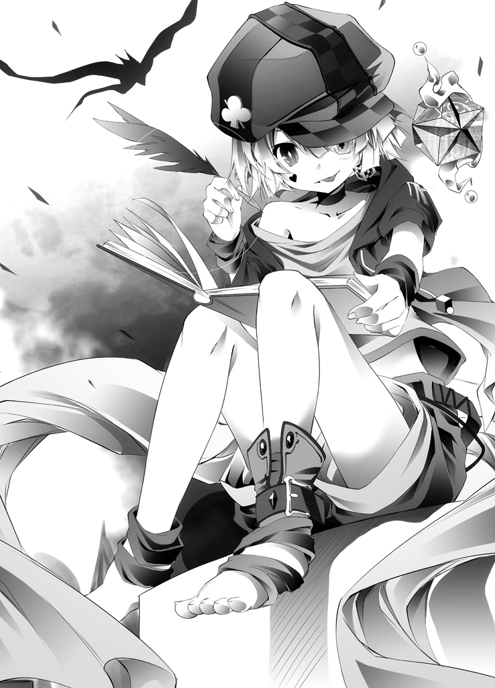
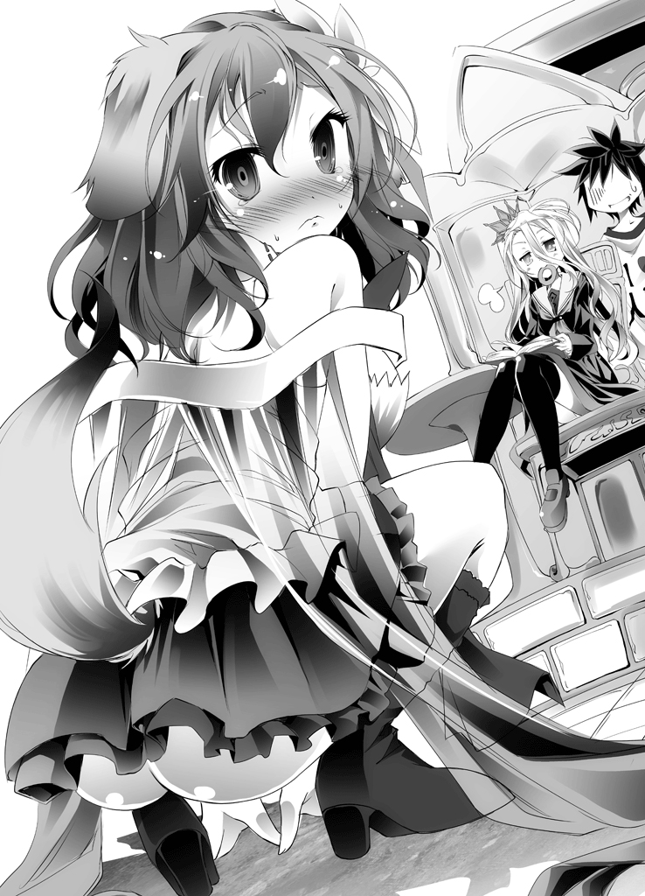
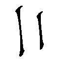
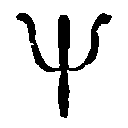
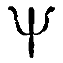
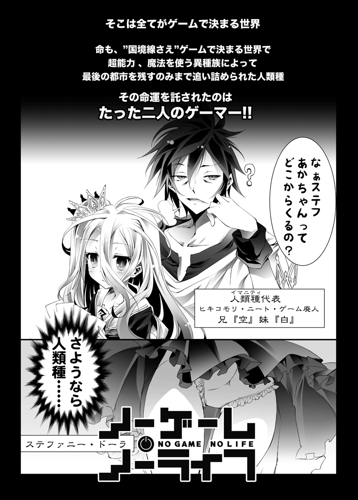
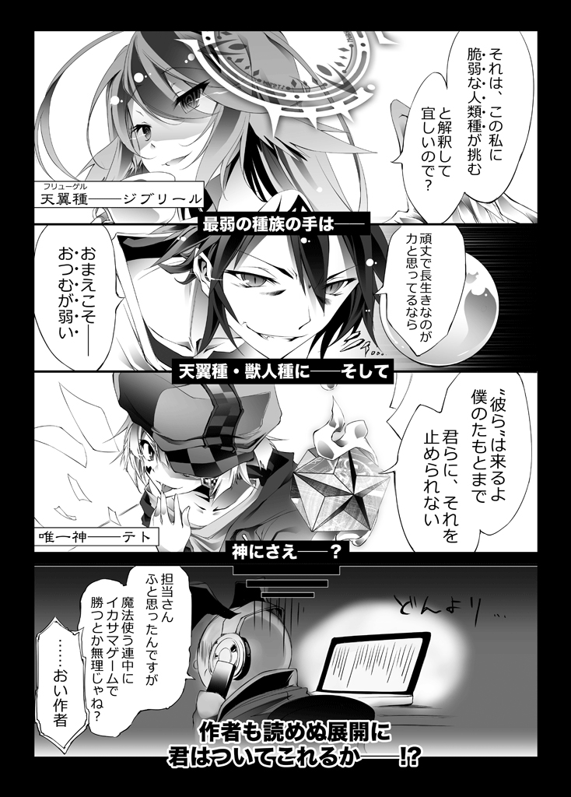

| ノーゲーム・ノーライフ 2 | |
| 榎宮 祐 | |
ＭＦ文庫Ｊ
ノーゲーム・ノーライフ２
ゲーマー兄弟が獣耳っ子の国に目をつけたようです
榎宮祐
口絵・本文イラスト●榎宮祐
編集●庄司智
ＲＰＧで開かない扉に出くわした時。
こう思ったことはないだろうか。
魔法が使えるならこんな扉ぶち抜けばいいのに、と。
しかし、出来ない。何故か？
それが『ルール』だからだ。
──ゲームと現実は違う。
まるで区別がついていないとでも言いたげに、そう語る人がいる。
だが、それでは何が違うのかを、彼らは考えたことはあるのだろうか。
現実か、そうでないか、おそらくこの程度だろう。
ではスポーツは現実かゲームか、大いに議論したいが、それには及ばない。
ゲームと現実の違い、それはもっと根本的に一つだからだ。
すなわち──『ルールの絶対性』だ。
先ほどの話も、ルールを無視して現実的に考えるなら。
扉など遠慮せず、ぶち抜いて進めばいい。
世界が危機的状況にあり、どこぞ行方不明の鍵が必要な扉で？
鍵があれば中を私物化していいなら、器物損壊で訴えられても勝てそうなものだ。
逆に魔王すら倒しうる魔法で壊せない扉なら、扉でなく壁を壊せば良いし？
むしろ常軌を逸した堅牢さを誇るその『扉』を盾に、魔王に挑むのも手だろう。
岩に刺さった伝説の剣も、抜かずに岩の方を砕けばいい。
しかし、そうしない。何故か？
それでは面白くないからだ。
そう、ルールとは『最終目的』を満たす過程を面白くするため設定される。
将棋なら王を仕留め、サッカーならゴールをより多く決め、ＲＰＧならラスボスを倒す。
そういった、設定された『最終目的』に、ルール無視で到達しては面白くないのだ。
故に、ゲームにおけるルールとは、『共有される絶対性』を有する。
──もう、おわかり頂けただろう。
現実には──『勝利条件』がないのだ。
特定条件を満たせば勝負が決することもなく、誰かを倒せば平和になりもしない。
二人はいついつまでも幸せに暮らしたりなどもしない。
幸も不幸も富も貧しきも、例外なく『デッドエンド』でシメである。
故に、人は各々の解釈で勝手に『勝利条件』を設定し、付随したルールを勝手に作る。
より金を持てば勝ち、より楽すれば勝ち、そもそも勝ち負けを考えるのが負け......。
さあ、では想像してみよう。
あなたが将棋をしていると、突然相手が自分の都合で、デタラメにコマを動かし。
王を取ってもいないのに、なにやら「勝った」とドヤ顔されるさまを。
......いかがだろう。グーの一つも見舞いたくなったのではないだろうか。
だが、みんながそんな風にプレイしているゲームであれば？
そう──これこそ、『現実』である。
──ゲームと現実は違う？
まさしく、その通りである。
得意げにそう語る人には、こう答えたい。
一緒にするな、ペッ──
■■■
23インチワイド、パソコンディスプレイ、八つ。
そこが、世界の全てだった。
赤道直径、一万三千キロメートルの小さな惑星。
その表面を光ファイバーケーブル・ネットワークで覆われた世界......地球。
いまや、この星において『距離』という概念は、失われた。
インターネットに接続すれば、毎秒星を七周半する速度で意思は伝達され。
世界の真裏にいても隣にいるかのように、繋がることが出来る。
──人々は言う、世界は無限に広がったと。
──だが彼らは想う、世界は極限まで狭まったと。
クリック一つで届けられる、生活に必要な全て。
それらを包んでいた空箱が、本来の広さを奪った手狭な部屋。
ディスプレイが放つ無機質に明滅する光が照らすそこが。
いや、もっと正確に言うなら、そのモニターの奥。
十六進数で構築された仮想空間が、『彼ら』の世界──その全てだった。
手狭な部屋を更に狭くする無数のＰＣと、ゲーム機。
それらをつなぐ配線、コントローラーの数々が、足場をすら奪う部屋の中で。
共に照らし出されるのは、感情を宿さない、二つの顔。
今まさに、世界の裏の誰とも知れぬ誰かと、激戦を繰り広げる兄妹の顔だ。
一人は、黒い髪に、黒い瞳の青年。
一人は、白い髪に、紅い瞳の少女。
画面の中は忙しなく、部屋の中は静寂。
二人のヘッドホンが、〝自分達の世界〟の音をすら独占し。
室内に響くのは無機的な機械音と、二人が奏でるクリック音だけ。
──彼らは想う、世界は狭まったと。
電子情報網がもたらしたのは、動くことなく世界の裏を知る術。
だが、それがまねいたのは、個人の認識限界を超えすぎた、情報の津波。
膨大な情報が生んだのは、無限の繋がりなどでなく、むしろ逆。
情報過多は『毒』となり、人々は望む情報に偏向された小さな世界へと逃げ込んだ。
閉ざされた無数の小さな世界と。
隔絶された、さらに小さく、希薄な個人の世界と。
そしてここではない、無数の別世界へと。
モニターの奥の『別世界』を覗きこむ、二人の目。
集中のあまり、時々その別世界に入り込む錯覚に囚われるそれらの世界では。
自分達は十六畳の監獄に繋がれた、社会の不要物ではない。
時には救国に立ち上がる勇者達で。
時には世界最大のギルドの長達で。
時に魔法使いで、精鋭特殊部隊員で、暗殺者で。
概して共通するのは、世界が自分達を中心に回っていることと。
『明確なクリア条件』が示されていることだった。
青年が、ため息を一つ、つく。
23インチワイド、パソコンディスプレイ、八つ。
そこが、世界の全てになって、どのくらいの時が経っただろう。
どんなゲームにおいても〝無敗〟を飾り続けた兄妹は。
モニターの奥の小さな世界においては、半ば都市伝説とまでなった。
彼らが属する『小さな世界』では、彼らはゲームの中と同じくまさに英雄だった。
だが一度、視線を動かせば、そこにあるのはいつもと同じ。
無機質で、静かで、狭い。社会の不要物の......隔絶された狭い世界。
そして、青年は、いつも湧き上がる違和感に身を委ねる。
本当にここは自分の部屋なのか、という未視感。
そうして、彼は更に想う。
根拠はなく、ただ漠然と、そう想う。
〝本当にここが、自分達のいるべき場所なのか〟──と。
「そう、君は正しい」
だが、その内心の言葉に、応える声。
視線の先にあったのは、見慣れた自分達の世界の中に。
異質に佇み微笑む、無邪気な、見覚えのない一人の少年。
──いや。本当に見覚えはないのか？
錯綜し出す記憶に、声を上げるより早く少年は続ける。
「ここは君達がいるべき場所じゃない。だから......」
そして──
「だから、君等を生まれ直させた」
過去と現在、虚構と現実。
その全ての記憶が混濁していき。
曖昧になっていく認識が、世界から実感を奪い去る中。
唐突に思い出すのは、いつものこと。
「............ああ、夢か、これ」
そしてあらゆる〝夢〟がそうであるように。
いつ終わったかも定かでないまま、彼の意識は覚醒する......
■■■
エルキア王国・首都エルキア。
国盗りギャンブルに敗北を重ね領土を失い、今や人類種最後の砦となった都市。
そんな都市の王城の廊下を、おぼつかない足取りで歩くのは、一人の少女。
ステファニー・ドーラ。
先王の孫にあたる、赤い髪に青い瞳をした、由緒正しき家柄の高貴な少女。
──なのだが。
眼下のクマと、重い足取りが示す色濃い疲労が、本来の気品を奪い。
不審な笑みでトランプを手にふらふらと『王』の寝室に向かう姿は......幽鬼。
「ふ、ふふふ......今日こそ、天罰の時ですわ」
昇ったばかりの日が、徹夜明けの意識を刈り取りそうになる中。
ステファニー──通称・ステフは、不穏にそう笑う。
「──ソラ、起きてますわよねっ！ もう朝ですわよっ！」
ドゴン、ドゴン、と。
トランプでふさがった手の代わりに、扉をノックして『王』を呼び捨てにするステフ。
だが。
『ピ～ッ。お呼びになった人物は、居留守中です』
「──はい？」
部屋の中から応えるのは、『王』の声ではなく。
妙に〝ゆっくりボイス〟な、抑揚のない女性の合成音声。
『可及的速やかに扉から離れ、間違っても勝手に入室しないでください』
「──ソラ、ふざけてるんですの？」
『いや、マジでマジで』
「あーもーっ！ 勝手に入りますわよ!?」
どうせ中でゲームでもしてる──いや、ゲーム以外してるわけもないのだ。
眠気から来るイラつきが背中を押すように。
扉を蹴り破る勢いで──いや。
事実蹴って扉を開け、王の寝室に乗り込んだステフが見たのは。
「すみませんマジすみませんけしてフザけてるわけじゃなくほんとにただ今はちょっとホントやばいんです本当に悪意はなかったんですホントなんですすみませんすみません」
──と、頭を抱えてベッドの上でうずくまり謝り倒す『王』。
その姿の哀れさたるや、涙を誘うに足る様で、プルプルと震えてすらいた。
だが、その光景に見覚えがあるステフは、室内を見回し言う。
部屋の中は無数の本で足場すらなく、無数のゲームで溢れかえっているが。
いるべきものがいないことに、ステフがつぶやく。
「......あら？ ソラ、一人ですの？」
「はい独りですロンリーです生きる意味を失いましたきっと生まれてきたのが間違いだったんですすみませんご退出頂いた後静かに首を吊らせて頂きますのでどうか今は──」
「......にぃ......？ うる、さい......」
息継ぎもなくまくし立てる『王』──〝空〟に、無気力な声音の批難があがる。
その声の正体に、ステフがため息ついて呟く。
「なんだ、シロもいるじゃないですの。なにをしてるんですの？」
「──え？」
その指摘に、はっと〝シロ〟の方を向く空。
寝てる間にベッドから転がり落ちたのだろうか。
ベッド脇からむくりと起き上がる、雪のように白い少女。
床を這うほど長い、寝癖のついた白髪の少女の姿を視認するや。
その姿に抱きつく空の挙動は──音を、置き去りにした。
「あぁ よかったぁあああっ！ えぇい、まったく妹よっ！ 兄ちゃんおまえの寝相のせいでうっかり首を吊っちゃうとこだったぞ、まったくどうしてくれるよっ！」
よかったぁあああっ！ えぇい、まったく妹よっ！ 兄ちゃんおまえの寝相のせいでうっかり首を吊っちゃうとこだったぞ、まったくどうしてくれるよっ！」
わしわしと妹──〝白〟に、涙すら流し頬ずりする兄に。
寝起きゆえ......だけとは思えない、冷たい半眼で応じる妹。
「......にぃ......おお、げさ......」
「なっ!? 兄ちゃんの気持ちがわからないと申すっ!?」
ばっと立ち上がって大仰な手振りで空が吠える。
「じゃあ今夜！ 白が寝た後、クローゼットに入ってやる！ 起きたら俺がいな──」
「..................っ......ひっ......ぅっ......」
だが、言い終わるより早く、想像したのか涙ぐみはじめた白に。
「ホラなぁっ!? 兄ちゃんの気持ちがわかったかっ！」
「......ごめん、なさ、い......寝相......悪く、て、ごめんなさ、い......っ」
嗚咽混じりに誠心誠意謝る妹に、頭を撫でながら兄。
「いや、ごめん。脅しすぎた。そんな天変地異を想像させて、非道い兄ちゃんだった」
「......ひっ......ぅ、ん......」
と、さっきまで生まれたてのガゼルばりに震えて平謝りしてた男が。
傲慢不遜に、力強くステフに向き直り、言い放つ。
「と、いうわけで悪いのはこのベッドだ！ ステフ、このベッド処分して布団敷け！」
「へ、へあっ!?」
もはや慣れた様子でこの兄妹の馬鹿っぷりを眺めていたステフ。
突然向けられた矛先に慌てて妙な声をあげる。
「お、お、王室のベッドですわよっ!? どれだけ由緒ある品か知って──」
「知らん。たとえ寝てても白が俺から離れるなぞ、ベッドが悪い。傾いてんじゃね？」
「......こくこく」
ためらわず同意の意思を示す白にステフは思う。
──そんな馬鹿な。
「そ、そのベッド一つで、家庭一つが賄えますわよっ!?」
「じゃ売っぱらって一家庭を賄え。幸せな家族が一つ生まれる、素晴らしいことだ」
「......あ......ぁ......あな、あなたね──」
あまりの暴君っぷりに言葉を失って震えるステフに、ふと空。
「あ、そか。この部屋のものって、前国王──つまりステフの爺さんの遺品か」
と、ステフの反応に何か思うところあったのか。
手を叩いて名案を思いついたとばかりに空が言う。
「じゃ、こうしよう。ステフ、今日からここがお前の部屋だ」
「な──っ......お、〝王の寝室〟ですわよっ!?」
「俺が王だろ。俺が寝れば犬小屋だろうがそこが〝王の寝室〟だ」
清々しいまでの詭弁を息するように並べ立てる『王』。
「で、城のメイド達が使う建物、一室空けてくれ。ベッドは当然マットレス床直敷きな」
布団があればモアベター、と言い出す空に、一瞬理解が追いつかないステフ。
数秒遅れて反応する。
「め、メイドの部屋って、城の外郭にある〝小屋〟ですのっ!? 木造ですわよ!?」
「むぅ？ 聞き捨てならんな、木造ナメんなよ？」
おほん、と咳払い一つして空が語りだす。
「通気性、吸湿性、気温調節性、耐震性、耐風性、全てに優れる、ヒキコモリにとってはまさに城だ。火にさえ気をつければ、日本家屋より優れた建築なんぞ──」
と、そこまで言って、何か思いついたように。
窓辺に置かれたソーラーチャージャーが充電していた、タブＰＣを取り出す空。
「あ、やっぱそうだ。日本建築の専門書も入ってた」
「......はい？」
「よし、城内に『家』を作ろう！」
「え......？」
全く話について行けないステフを置き去りに、空が白熱して続ける。
「どうだ白、夢のマイホーム！ 名案だと思わんか!?」
「......場所......は？」
「ふふ、気にしてることは、手に取るよ～ぉにわかるぞマイリトルシスター!!」
だが兄ちゃんがそんなことも察せないと思うのかね、とばかりに。
ズビシと、窓の外を──城の中庭を指差す空。
「あそこならメイド達のいる外郭からも近く、給仕の問題はない。城の方の厨房からも近いし、今まで通り引きこもれる！ 緑も適度にあり風通しもいいのに、人通りは少ないっ！ そして城壁のお陰で朝日が〝ささない〟！ コレ以上の神立地があろうかっ！」
得意げにそう語る空に、低く手を上げて白。
「......異議、なし......」
「よし！ というわけだステフ」
「え、あ、は、はい？」
あまりの展開にだらしなく口を開けていたステフに。
「木造建築の職人を手配してくれ。そだな、この世界では未知の建築法だろうし超一流を数人、スタッフとして二十人くらい？ 木材の選定は説明すれば職人に任せられるかな」
──さて紹介が遅れた。
これが『人類種』最後の国エルキアの王と、女王──空と白、一組の兄妹。
日がな部屋から出ず。ゲームと読書に明け暮れ無理難題の要求をする。
──まさしく『暴君』。
「ソラッ！ 〝勝負〟ですわッ!!」
そんな暴君達に、ついに堪忍袋の緒が切れた様子で。
手の中のトランプを握りこみ、きっと空を睨みつけて言い放つステフ。
その暴君達に──そう、今日こそ『天罰』を下すために。
──だが。
「──......ほう？」
〝勝負〟の一言に反応し、すっと感情を消し目を鋭くする空。
その瞬間的な変化は、何度も見たステフをして、身震いさせる。
先ほどまで震えていた哀れな男が、チャラけた馬鹿兄になり。
そして、スイッチ一つで。
心の奥まで見透かされ、何をしようと、手のひらの上の出来事に終わらされる──
そんな錯覚さえ与える、機械の如き冷静。
だが戦王の如き不遜な勝負師の顔に化ける。
──が、それ以上に。
その瞳に覗きこまれて、瞬間的に顔が熱くなって鼓動が跳ね上がるステフ。
それは、かつて同じように勝負を挑み。
そして完膚なきまでに負かされた『ツケ』が、今なお有効である証。
その事実に、先ほどの勢いが幾分失われたようで。
耳まで赤くして目をそらすステフに、確認する空。
「それはこの俺に【盟約に誓って】のゲームを挑む、ということか？」
「え、ええ、そ、その通りですわ」
「......『十の盟約』......その五、ゲーム内容......挑まれた、ほうが決定権......有する」
暗記した盟約文を、白がつぶやく。
──それは、神が定めたこの世界の、絶対遵守の盟約。
如何なる理由をもってしても破れない、絶対的不変の法則。
「へぇ～その上で、この、俺に？ ゲームを挑むと？」
──ゲームは、既にはじまっていた。
心理的優位を維持すべくそう言う空に、ステフは用意してあった台詞を切り出す。
「あ、あ～ら、人類最強のゲーマー様が私如きに、得意分野以外では、お、応じないと？」
対策として、必死に考えて、練習してきた台詞を。
しかし若干上ずった声で、読み上げる様子のステフに。
苦笑して、不敵に空が笑う。
「なるほど、ちょっとは駆け引きを準備して来たか──『賭けるもの』なんだ？」
『十の盟約』に従い、絶対遵守のゲームを行う。
それは、何を賭けるのかも、駆け引きの要素となる。
「ふふふ......私が勝てば──」
だが、その質問を待っていた、とばかりに不敵に、ステフが言う。
「ソラには、真人間になって貰いますわっ！」
ビッシィ──────ッ！
......と、指さし言い放ったステフに。
しかし静寂だけが応える。
「あ、あれ......？」
しんと静まり返る王の寝室。
『なるほどそう来たか』、『痛いところをついてくるな』。
そういう反応を期待していたステフに。
だが空はキラキラと目を輝かせて叫んだ。
「そ、そうか──『十の盟約』が絶対遵守なら、そんなことが出来るのかっ!?」
「へぁっ!?」
予想以上の食いつきに、にじり寄ってきた空に、赤い顔を逸らしてステフ。
「だだ、だって、私に〝惚れろ〟と命じたじゃないですの......なら──」
──そう、かつて勝負した際、ペテン紛いに『惚れろ』と要求されたステフ。
ご覧の通り、自分の意思とは関係なく〝惚れさせられて〟しまっている、なら。
「そ、そうか、それは盲点だった──っ!!」
目からウロコが落ちるようとは、こんな姿だろう。
天を仰ぐように感動する空が、しかし、さらにハッとして叫ぶ。
「な、なら、真人間じゃなく──『リア充』に要求を変更してくれっ！」
「──りあ、じゅう？ なんですのそれ」
「意味的には真人間と似たもんださぁ賭けようゲームしよう俺は負けるからっ!!」
「え、あ、あの......」
あまりの食い付きにどう対応していいのか困るステフに。
だが意外なところから、待ったがかかる。
「......にぃ、しろ、以外に......負け、たら......めっ......」
「な──っ!? い、妹よ、兄ちゃんのリア充街道に、立ち塞がるのかっ!?」
「......『 』に、敗北は......認め、られ、ない......」
「うっぐ──ぅッ！」
そう、空と白──即ち『 』に敗北は許されない。
それは、かつての世界で二人が交わした約束──。
ルールなき世界で、二人が決めた二人だけの、絶対不変のルール。
だが一転、天から地獄に落とされた、絶望の顔で空が言う。
「そんな......だって！ まともにゲームして俺がステフに負けるとかありえねぇぞっ!?」
「な──っ!?」
と、頬をひきつらせるステフを無視して、兄妹が言い合う。
「......それ、でも、ダメ......」
「ば、馬鹿な、バラ色のリア充ライフが目前にあるのにっ！ な、なぁ白、おまえが要求してくれよ。おまえ相手なら問題ないだろ、全力でやっても負けるしさ、ほらチェスとか」
「......だが......断る......」
「あーえいもう、くそっ！ ステフっ!!」
「は、はいっ!?」
乞い願う様に、手を合わせてステフに、空が本心から叫ぶ。
「万に一つ──いやもう虚数の彼方にしかないだろう、おまえが俺に勝てるゲームを持ちだしてくる可能性に賭けるっ！ 頼むぞステフっ!! 量子より小さな希望に応えてくれっ!!」
「ふ、ふふ......フフフ......フフフフフフフ、い、言ってくれますわねッ！」
あまりの暴言の乱射に、顔をひきつらせてステフが笑う。
「勝負は──『ブラック・ジャック』ですわっ！」
............。
「──......はぁぁああ......」
「......ふぅ......」
意味の異なるため息をつく兄妹に、そのどちらの意味も汲めず狼狽するステフ。
「え、あれ？ なんですのッ!? 勝算がある勝負ですわよっ!?」
ため息しかつかない空と。
もはや興味すら失せたらしい白にステフが叫ぶ。
「ディーラーは私！ 空はプレイヤー！ これなら空はイカサマ出来ませんし、しても私がバラして勝てますわっ！ 純粋な運の勝負なら、実力は関係ないじゃないですのっ！」
窓の外を眺める空。その頬に、一筋の涙が光る。
「人の夢と書いて『儚い』──か。まぁなんだステフ、挫けないでまた次もごにょごにょ」
爪を弄り、勝利後の台詞すら適当に言い出す空に、ステフが食って掛かる。
「ば、馬鹿にして......み、見てなさいなッ！ 【盟約に誓って】！」
それは、『十の盟約』に誓い、絶対遵守の賭けを行うという誓いの言葉──だが。
「はいはい......【盟約に誓って】......と」
「あ、そういえば私が賭けるものを言うの忘れて──」
「はい......まあなんでもいいっス......はぁ......」
「こ、この──ッ」
完全に勝った気でいる空に、だがステフは落ち着けと内心つぶやく。
──そう、落ち着け。コレは〝勝機〟だと。
内心、ニヤリと、口元を歪めてステフが吠える。
純粋な運の勝負？ そんなものする気など、さらさらありはしない。
忙しい中、徹夜で練習してきたイカサマで勝つつもりに決まっている。
カードシャッフルはディーラーが行う。
ならばそのシャッフルを〝見た目には不正なく〟札を並べれば、勝てるのだ。
札のすり替えはなく、証明することも出来ない。
『十の盟約』その八、ゲーム中の不正発覚は敗北とみなす──つまり。
発覚さえしなければ使っていいということッ！
（ふふふふ......私をナメた報いを受けるがいいですわぁっ！）
──だが、ステフは知らない。
そこまでしてもなお。
その条件で空に勝つことは、不可能だなどと......
■■■
──地平線の彼方。
そびえ立つ山脈すらその土台程度に思わせる、遠近感を失う巨大なチェスのコマ。
そのキングの頂、縁に腰掛け足をばたつかせる、一人の少年がいた。
楽しそうに、口笛を吹く少年の手には、一冊の〝白紙の本〟と羽ペン。
「んー......書き出しって難しいよね～」
どうやら、自ら紡ぐ物語の出だしを考えているようで。
やがて、なにか思いついたように、筆を走らせ始めた。
「──昔々あらゆる武力の行使が禁じられ、全ての諍いをゲームで解決することを絶対のルールと定めた世界があった......と。うん、まあ、こんな感じかな？」
頷き、天より高いコマの上から、遥か遠くを眺めて、少年が呟く。
「......そろそろ動くかなぁ......『最初のコマ』が」
少年の名は、テト。
この世界──ゲームで全てを決する世界『ディスボード』の創造主であり。
かつての神々の大戦において、唯一神の座につくまでは『遊戯の神』と呼ばれた存在。
その唯一神が、恋人に思いを馳せるような目で彼方を見つめる。
【──問、其れ人類種の滅亡を意するか】
と、虚空から突然、傲慢声が響く。
【──或、遂に汝が動く事を意するか】
その声に、僅かに機嫌を損ね、しかし笑顔のままテト。
「独り言を盗み聞き？ あんまり誉められた趣味じゃないなぁ」
唯一神であるテトを覗き見、不完全ながらも言葉を送り込める存在。
疑う余地なく、位階序列一位・神霊種──その中でも限られた力を有する一柱。
もっとも唯一神であるテトに、それが誰かは容易く知れ、また、興味もなかった。
【──問、人類種新王決定前、事象変動を観測。汝、参戦の意と見做し、是か非か】
だが、その問いかけに、つまらなそうにテトが言い放つ。
「......ホント、君たちってば、退屈だね」
一転、再び恋人と待ち合わせをするような。
待ちきれないような笑顔でテトがいう。
「僕は誰の味方でもない。その意味を理解しないで、精々無為なゲームを続けてなよ」
そして笑って言う。
大きな失望の中に、大きな希望を抱いた笑顔で。
「〝彼ら〟は来るよ。僕の袂まで──君らに、それを、止められない」
虚空から聞こえる声など、文字通り眼中にないように。
その目は遠く、人類種最後の都市──エルキアを捉えていた。
唯一神にとって、数百年すら瞬くような時であろうにもかかわらず。
その視線は、さながらに。
遊園地へ行く当日、玄関で親の支度を待つ五分をすら急かす子供のように。
ふっ──と、虚空から聞こえていた声の気配が消えたのを確認してテトが呟く。
「あんまり待たせないでね『 』さん」
コツコツとかかとで、座っているコマの縁を叩いて。
「そろそろ我慢の限界なんだよ～、あんまり待たせると──遊びに行っちゃうよ？」
口元を不敵に歪めて、神が、そうこぼし。
「あ、そうだ。続き──」
と、物語の続きを思いついたのか、羽ペンを回してテトが言う。
「ある日その世界に【十六種族】序列最下位・人類種の国に、異世界から二人のゲーマーが招かれた。二人は窮地にあった人類種、最後の国──エルキアを他種族から防衛し、王と女王となった──全ては、この時はじまった......っと♪」
──紡ぐ紡ぐは、今は物語。
やがては吟遊詩人達に語り語られる壮大な叙事詩。
神が筆を執り描き詠うそれは未来の神々の、すなわち。
最も新しき神話を、綴るプロローグ──。

人類種の国──エルキア王国。首都エルキア、東部区画六番地。
絢爛豪華な屋敷の広間、テーブルを囲む五人と、それを見物する数人の姿があった。
テーブルを囲むうちの一人は、乱雑に切られた黒髪と、目の下にクマ。
『Ｉ♥人類』と書かれたシャツとジーパン、スニーカーの青年。
二つめは、その青年の膝に座る──長い長い、雪のように白い髪と。
ルビーを思わせる、赤い三白眼の瞳、黒いセーラー服を纏った小さな少女。
青年の腕には、女性用の王冠が、腕章のように巻き付けられ。
少女もまた、男性用の王冠を長すぎる前髪の髪留めに使っていた。
何を隠そうこの兄妹こそ「人類種」最後の国エルキアの、二人の『王』。
兄──空。十八歳・童貞・非モテ・コミュ障・ニート・ゲーム廃人。
妹──白。十一歳・友無し・コミュ障・ヒキコモリ・ゲーム廃人。
............さよなら人類。
【完】
と、ここだけ聞けば誰もがそう想うだろう。
だが二人は──この世界の人類ではない。
かつての世界で、二八〇を超えるゲームランキングに不倒の記録を打ち立て。
あらゆるゲームの頂点に空欄の名前を刻み、ただ一つの黒星もなかった故に。
その現実離れした腕と、正体不明さに、都市伝説とまでされたゲーマー。
通称──『 』その正体だった。
古に『十の盟約』によって戦争が禁じられたこの世界『ディスボード』。
全てを、国境線さえゲームで決めるこの世界において、人類には使えず感知すら出来ない魔法によるイカサマを重ねる【十六種族】によって、追いつめられていた人類種。
その最後の都市までをも森精種の間者によって傀儡化されるところだったのを。
正面から、何の超能力も、魔法も持たぬ二人が。
ただの人としての力で、名実ともに人類最強の名を冠し、玉座に座った二人。
確かに。紛う事なき、駄目人間二人。
確かに。誰が見ても、社会不適合者。
だが、この世界に限れば──人類種の救世主にさえ成りうる兄妹。
その人類種の希望を一手に担う二人──兄、空がトランプを手に口を開くっ!!
「なぁステフ。あかちゃんって、どこからくるの？」
............やはり、さよならを言うべきかもしれない。
テーブルの外、空達のすぐ隣で見物していた人影の一つが、冷たい眼で応じる。
「......人類種の明暗を担う人に、言いたくないですけど......」
赤い髪に青い瞳、いかにもファンタジー世界らしいフリルの多い服。
そんな服と、スタイル、仕草が育ちの良さを示す十代後半ほどの少女。
──ステファニー・ドーラ。通称ステフ。
かつてのエルキア国王の孫にあたる、由緒正しい家柄のお嬢様が、答える。
「──とうとう頭をおかしくしてしまったんですの？」
いや、今の発言は正確ではなかった、と訂正し。
「これじゃまるで、今までは正常だったように聞こえますわね？」
「おい、俺は至って正常だっ！」
「至って正常にそんなこと訊いてるのが異常なんですのよっ！」
「えーいわからん奴だなっ！ この世界って『十の盟約』があるじゃねぇか！」
『十の盟約』。
唯一神の座を手にした神、テトが作ったこの世界の絶対法則。
知性ある【十六種族】に対し一切の戦争を禁じた盟約──即ち。
【一つ】この世界におけるあらゆる殺傷、戦争、略奪を禁ずる
【二つ】争いは全てゲームによる勝敗で解決するものとする
【三つ】ゲームには、相互が対等と判断したものを賭けて行われる
【四つ】〝三〟に反しない限り、ゲーム内容、賭けるものは一切を問わない
【五つ】ゲーム内容は、挑まれたほうが決定権を有する
【六つ】〝盟約に誓って〟行われた賭けは、絶対遵守される
【七つ】集団における争いは、全権代理者をたてるものとする
【八つ】ゲーム中の不正発覚は、敗北と見なす
【九つ】以上をもって神の名のもと絶対不変のルールとする
【十】みんななかよくプレイしましょう
「......それが、どうかしたんですの？」
「いや、殺傷行為が禁じられてんじゃん。どうやって〝子作り〟すんだよ」
............。
「......なぜそれを今、質問するか、きいていいですの？」
「暇すぎてふと思い浮かんだ。でも結構深刻な問題じゃないのかコレ」
周りの目を気にして、空の耳元でこっそりステフが言う。
「......ソラ達の世界では、人類は卵からでも生まれるんですの？」
そう、空達が〝異世界の出身〟であることは、秘密である。
......なら衆人観衆の前でこんな話をするなという話になるのだが。
故に、相変わらず呆れた冷たい目で言うステフに。
「──あ、あのな！ 童貞だからってバカにすんなよ!? 男の子のポケットの中のモンスターが女の子の秘密の花園にインアウトすると世界がひっくり返るって、知ってるぞ!!」
「......にぃ、その言い方......逆に、どーてー......ぽい」
「ＤＴがＤＴっぽくなきゃ、何っぽけりゃいいんですかねっ!?」
膝に座る十一歳の妹に指摘され、大人気なく開き直る彼女いない歴＝年齢の王。
「と、ともかくそーいう行為って、一応致傷行為だろっ!? 少なくとも一回目はっ!! 『十の盟約』があったら、この世界の人類種はどうやって繁殖してんだよっ！」
どうやら本気で質問してるらしいと理解したステフ。だが一応──
「......確認しますわね、それは私に対する公開恥辱プレイの類ではないんですのね？」
「──なぁ、その発想ができる、おまえこそどうかしてんじゃねぇ？」
エロゲのないこの世界でエロゲ発想とは。
いっそ感心する妄想力である。
「もういい、あとで誰か説明出来る奴にきくよ、使えん女め」
「な──わ、わかりましたわよ、説明しますわっ！」
お、おほん、と咳払いしてステフ。
「何をもって権利侵害行為となるかは、明確にわかりますわ」
「ほう。それは？」
「簡単ですわ、権利侵害にあたる害意ある行動は──キャンセルされますの」
......──は？
「──え、何、脳内リアルタイム検閲されてるわけ？」
「ええ、その通りですわ？」
ファンタジー世界だからって無茶苦茶じゃないのか、オイ。
「ですから『十の盟約』以後、法律の大部分は形骸化しましたわ。実行できた時点でその行為は盟約に沿っているか、相互同意、過失によるものとしか考えられないから──」
「はぁ......この世界の神様、マジ何でもアリだな」
「唯一神様がなんでもありなのは当たり前じゃないですの」
──気まぐれ一つで世界の法則すら作り変える権限。
そして今では──それさえもゲームで決まる世界、か。
「ふむ......まあわかった。で、改めて聞くが、何で子作りはＯＫなわけ？」
だが、答えるのはステフではなく、膝元でトランプを切る白。
「......相互同意......〝譲渡〟......つま、り......」
「あ、互いに許可しあっての行為であれば〝権利侵害〟には当たらないのか」
以前、白に背中を蹴られた記憶がある空、ようやく納得する。
白が相手なら、無意識に同意していたとしても不思議はない。
──と、あくびしながら空、白の手元の札を切って言う。
「ま、そうだよな。致傷行為全て禁じてたら医療行為も無理だもんな」
改めて、よく出来てる盟約ですこと、とつぶやく空にステフ。
「世界がちゃんと機能してる以上、ちゃんと厳密にルールがありますわよ」
「俺らの元の世界はそうでもなかったんだよね～......」
......案外、ルールなんてなくても世界は機能する。
矛盾と欠陥だらけでも。
第一、それは『十の盟約』以前のこの世界だって同じだったろうに。
「......しかし、ならまた一つ疑問が生じるな」
「なんですの？」
「なんで俺、おまえのおっぱい揉め──わかった、もういい」
公衆の面前でそれ以上言ったら──というステフの刺すような視線に空が黙る。
「ま、非常に興味深い話だった。いい暇潰しになったよ」
「今ハッキリと暇潰しって言いましたわねっ!?」
と、眠そうに顔をあげた空が見つめる先には、テーブルを囲む、残りの三人。
つまり、パンツ一丁の貴族──若干メタボ気味の、おっさん三人の姿があった。
そして、それを、哀れなものを見るような目で眺めるのは、復数の見物人達。
──半ば無意識でゲームしていたので、危うく忘れるところだったが。
空達は今、空と白、そして三人の大貴族で。
全財産を賭けたポーカーをしていた。
「......オッサン三人の裸とかマジ誰得だよ......もう終わりにしね？」
そう、三人はたった今、空と白に全財産を巻き上げられ、元貴族に成り果てた三人。
全財産とは、文字通り。土地・資産・利権は言うに及ばず、妻や子供、家族まで。
その全てを、たった二時間で絞り尽くされた三人、残すはもはやパンツのみだった。
「ば、馬鹿な──それでは我々には何も残らんではないかっ！」
「ここ、こんな横暴が許されるかっ！」
「負けを取り返さなければ服さえないのだぞっ！ ふざけるなっ！」
だがそれらをあくび混じりに聞き流して、空が言う。
「......勝負にノッたのはそっちだし、誰もここまでやるつもりなかったのに、勝手に家族や服まで賭け皿に載せたのもそっちだろ......あと、付け加えるとさ──」
なおも抗議をする貴族──いや、元貴族三人が、空の目に身をすくませる。
「三人で組んでイカサマまでしてんの見逃してやってんだ。感謝してくれよ」
「......フル、ハウス......おし、まい......」
そういって白がオープンした手札は。
貴族達の最後の砦──パンツすら取り上げることを意味し。
──かくして。
農業改革反対派の最筆頭だった三人の貴族はスカンピンにされ。
彼らが扇動して起こしていたデモもまた収束した。
■■■
首都エルキア、中央大通り。
都市の東西南北、そして城とを繋ぐ幹線道路であり、エルキアでも最も賑やかな通り。
空が推し進めていた農業改革に反対する貴族達のパンツまで取り上げた帰り道。
「い、いくらなんでも鬼畜すぎますわ......」
馬車や多くの人が行き交う人通りの多い帰路を歩きながら、ステフが零す。
「何もご家族まで差し押さえることないんじゃないですのっ!?」
「あっちが勝手に賭けたんだろ。妻や子供を賭け皿に載せる奴こそどうかしてる」
その後ろ、白とがっちり手を繋いで歩く空が答える。
「それよりここ、人多すぎ......し、白、間違っても手を離すなよ？」
「......にに、にぃ......こ、そ......」
キョドキョドと周囲の視線を気にしながら俯きがちに二人がいう。
ヒキコモリのコミュ障二人に、正午の大通りなど、苦行以外の何ものでもない。
「歩いて帰るって言ったの、ソラじゃないですの」
「ちょちょっと、用事があったんだが......ここ、こんなに人が多いとは......」
この世界に来て一月、城からほぼ出たことがなかった二人。
挙動不審気味に、互いの手を握る力を強める姿に、ため息ついてステフ。
「で、どうするんですの？」
「どどうって？ な、なにが？」
「あの三人から巻き上げたものですわよ」
「え、ああ、別にどうもしないけど？」
と、何とか気丈に繕って、空が応える。
「家族は当人たちが望むようにさせるさ。賭けの対象にされたのを許せる度量があれば勝手に連中んとこ戻るだろうし、他の資産は、まあ、ステフと大臣たちに任せるよ」
今回の目的は、農業改革を邪魔する貴族の排除。
丸裸にしたのは単にその権力を削るためである。
財産は、国が勝手に管理してくれればいいだろうと空。
「あの、ソラ......今回のデモを止められなかったのは私の責任ですし、ソラ達をこんなことで煩わせたのは申し訳なく思いますわ、でもこのやり方は遺恨を残しますわよ」
異世界から持ち込んだ知識で、立て続けに国の立て直しを図る空達だが。
この世界に来てまだ一月の空達に、不慣れな文化によるミスは大失政を招く。
それを回避するため、政策の指示だけを行い実行は各大臣に任せる。
その橋渡しを、王族として教育を受けているステフに任せることにしていた。
──と、いう建前で。
国政におけるめんどくさいイベントを回避してきた。
実際は一月前、こんな会話を交わしただけである──。
「政策と指針は俺らが出す。その徹底はステフと各大臣に任せる。それでもゴネる奴がいたら俺らのとこに連れて来い。全部巻き上げて裸にして放り出す──そういったろ？」
「だからッ！ そのやり方がヤクザなんですのよッ！」
「気にすんな。恐怖支配はめんどくさいことになるが、一回二回は問題ないさ」
実際、こんなことを続けたら、どこぞの赤い大粛清者となにも変わらない。
「むしろ俺らが即位して一ヶ月、これが初めてってのが意外なくらいだ」
大規模な農業・工業改革に、利権問題はつきものである。
貴族の反乱、ギルドの結託。シミュレーションゲームにありがちなウザイベント。
そういう面倒くさいフラグを折るため、ステフと大臣達に丸投げしたのだが。
はじめての出番が一ヶ月後とは、思いの外反抗は少ないのだろう──
「ええまぁ......今までは抑えてましたもの」
「......抑えてた？」
「ソラが提示した農業改革、貴族の多数が最初から反対してましたのよ。幸いオルオ家とビルド家は、ドーラの家名が通用するから、協力して根回しして貰ってましたの」
「..................え？ あ、はい」
「王家直轄地で大規模実験をして得たデータから、こちらの派閥の大貴族たちに利権を流してましたの。それを餌に日和った中小諸侯たちの寄親を少しずつ切り崩せはしたんですけど......どうしても反対せざるを得ない大家もいるんですのよ。今日の三人がその最筆頭でしたから、二度はないですわ。あまり刺激しないで慎重に──って、なんですの？」
流暢に語るステフを遮り、その額に手を当てて空。
「......ね、熱はないみたいだな。どうしたステフ、頭良さそうなこと言ってっ！」
ひどく取り乱した様子で、空。
「体調でも悪いのか!? ご、ごめん気づかず連れ回して、すぐ医者に連れて──」
「.........あの、ちょっと、いい加減失礼すぎませんの？」
肩を震わせてそういうステフに、空が叫ぶ。
「いやだって──ステフだぞッ!?」
「ステフですけど、なにかッ!?」
眼を閉じて頭を振る空。
「いやいや待て待て、ウェイトウェイト、まさか......」
ホンモノの幽霊を目の当たりにした物理学者ばりに前提を崩され。
まさかそんなことはあるはずがない、と。
ゴクリとつばを、苦しそうに飲み込んで。
信じがたい事実を、口にする。
「まさかとは思うが......ステフって実は......馬鹿じゃ──ない!?」
認めがたい事実に、疑いながらも叫ぶ空に。
「あ、あの......コレでも国内最高のアカデミー主席卒業してますわよ、何ですのッ!!」
「いやだって──自分の姿ちょっと顧みてみようぜ!?」
──ステファニー・ドーラ。
かつてのエルキア国王の孫にあたる、由緒正しい少女が今。
首輪と、犬のような耳と尻尾をつけて。
首輪から繋がったリードを白に握られ、歩いていた。
都心の、大通りを。
「頭よけりゃこんなことになってないだろッ!?」
「こんなことにした当人がなに言ってるんですのッ!?」
そう、今朝方、空にブラック・ジャックでボロクソに負けたステフは。
『じゃ、今日一日、おまえ犬な』
という、超適当な要求に従わされていた。
エルキアの中央通りを、そんな様で闊歩していれば当然といえるが。
道行く誰もが目を留め、奇異なモノを見る眼差しを向けていた。
なお、先ほどの屋敷でも、ずっとこの格好だったことを補足せねばなるまい。
「も、もうちょっとマシな要求はなかったんですのッ!?」
今更怒りが戻ってきたのか、そう叫ぶステフに、空と白は思う。
──今までと、たいして変わらないだろう、と。
「......ステフ、お手......」
白が手を差し出してそういうと。
ぺたりと、前足──もとい、右手を白の手にのせるステフ。
「う、ぐぅ.........なんで逆らえないんですのよぉっ！」
「たったさっきおまえが説明しただろ。それが世界のルールだから」
──『十の盟約』その六、盟約に誓った賭けは絶対遵守される。
「......ステフ、伏せ......」
ぺたっと、大通りの路面に伏せて、ステフが悔しそうに叫ぶ。
「うぅぅぅっ！ というか何で勝てないんですのよっ！」
その質問に、空がほっと胸をなでおろす。
「あ、やっぱりわかってなかったか......よかったいつものステフだ」
「ステフを蔑称みたいに言ってるのは気のせいですの!? 気のせいですの!?」
だが、そんなステフの抗議の声を他所に、ケータイを取り出す空。
ステフが思いの外、頑張っていたのは予想外だったが。
大臣達の報告書から、アプリでグラフ化した国のデータを改めて見る。
どうやら指示した改革案は、概ね問題なく導入出来そうだった。
確保出来た酪農面積に幾分不満はあるが、機能すれば人口の推移には釣りあう。
同時に雇用問題も多少回復する──それらを確認し、タスクスケジューラーを起動。
『農業改革』『工業改革』『金融改革』などの項目に、完了と、チェックを入れていく。
「......けどまあ、所詮は一時しのぎだよな......」
いくら異世界の知識を駆使しようが、根本的に資源も国土も足りない。
農業改革が結果を出し始めるのにも半年は要する。
あまりに行き過ぎた未来技術をやるにも、そもそもその原材料が国内にはない。
「やっぱ──〝領土を返してもらう〟しかない、か」
それは、つまり。
いよいよ国境線を取り返す為、動くということ。
だが──どこを攻めたものか......。
「............」
黙りこんだ空の思考を汲んだのか、同じく長考するように黙りこむ白。
首輪をつけられ先を歩くステフも、必然、沈黙することになる。
──が。向けられる視線に耐えかね。
「ソ、ソラ。し、視線が痛いんですのよ、せめて話くらい──」
そう抗議するステフに、空が違和感に気づく。
「......ん？ なんか皆の視線、おかしくないか？」
「こんなカッコさせてたら当然ですわよ!?」
「いや、そうじゃなくて......なんか、怯えた眼してねぇか？」
ステフに向けられている視線の、微妙な違和感に気づいて空が言う。
そう、それはコスプレさせられて歩いている人を笑う目ではなく──
どちらかというと、空達を、奇異の目で見ているような......
「エルキアの王が、獣人種のカッコさせた人を連れてたら当然ですわよ」
──......なに？
「待て、今、なんつった？」
「エルキアの王が、こんなことさせてたら誰だって──」
「違う！ そこじゃねぇ！」
「待て、犬耳としっぽをつけてるステフの姿が──『獣人種』......だと？」
空、瞬間的に今まで集めた情報の全てを、脳内再生させる。
──【十六種族】位階序列・十四位『獣人種』。
世界第三位の大国『東部連合』を最大の領土とする種族である。
情報が少なく、極めて優れた身体性能と五感。
心さえ読むという第六感と呼ばれる感覚を有するとしかわかっていないが。
「......ステフ、可及的速やかに回答を求む」
「は？ な、なんですの？」
「獣人種ってのは──今のステフみたいに、獣耳としっぽのある女の子がいるのか」
「......何故女の子と限定するかは理解しかねますわね、でも──」
いる......というか、とステフ。
「獣人種の女性体は、ほぼ全員そうですわよ？」
............。
「......つまり何だ、『東部連合』って国は──」
ゴクリと、つばをのみ、確認するように空が問う。
「人間のおにゃのことほぼ変わらない容姿で、獣耳と尻尾、あと肉球とヒゲくらいまではある、そんなアルティメッツにプリティなアニモーで女性人口が埋め尽くされた、楽園のような国が、この世界にはあると──そう、言うのか？」
それが『東部連合』という名の──理想郷だと、言うのか？
「よしそれだその楽園は俺のもんだ獣耳っ子達を征服しに行くッ！ 今！ なう！」
刀を抜き放つようにケータイを取り出し、タスクスケジューラーを起動！
『獣耳っ子王朝・征服なう』と入力しようとする空に、ステフ。
「ちょ、な、何を言い出すんですのっ！ 国内すら安定してないですのにっ！」
いきなり世界第三位の大国にケンカを売ると言い出した〝乱心の王〟に。
だが空、取り合う様子はなく。
「えーい黙りたまえッ！ 国土と獣耳っ子が手に入るんだ！ 個人的欲望と国家の利益がガッチリ噛み合った神の計画に難癖つけて我が覇道を阻むとはなに様かねキミィっ!?」
と、何かを探すように周囲を見回しながら、なおも空が叫ぶ。
「東部連合ってどっちだっけ!? あっちかっ!? 直接乗り込むぞ馬車を呼べっ!!」
だが、一人暴走する空に。
手をつないだ妹が小さく呟いた一言によって。
「............情報......」
「うっ──ぐぅ......ッ！」
自称・神の計画は、いとも容易く瓦解した。
──そう。先ほど考え込んだこと。
そして、戴冠した時、世界に対して宣戦布告したあの日から一月。
今日まで攻勢に出られずにいる理由を指摘され、空が黙り込む。
「ぐ、ぐぬぬ......やっぱこの問題をクリアしないとどうしようもないのか......っ」
再び黙り込んだ空と白に、再び訪れる沈黙。
......──。
だが、暴走されたらされたで困るのだが。
この沈黙は沈黙で、ステフにはつらい。
「あ、あー空、今朝のブラックジャック、どうして私が負けたのか教えて──」
沈黙に堪えかね話題を振るステフ。
......だが、返事がない。
振り返るステフ。だが。
「...........................え？」
先ほどまで白が手に持っていたはずのリードは地を引きずっており。
いるべきはずの二人の姿は、何処にもない。
「──え？ あれ、放......置、ですの？」
くすくすと聞こえる笑い声の中、ひゅーと、冷たい風が吹き抜けた。
■■■
「......おい、し......」
エルキア中央通りから、入り組んだ路地を抜けた先の図書館。
その前の喫茶点で、本片手に、空と白はドーナツと、お茶を頬張っていた。
「食糧不足でも工夫してやってるが......やっぱ備蓄はもう心許ないようだな」
中央通りから外れた広場に並んでいた出店で買ったドーナツと、店の紅茶。
だがその出店には本来の活気は感じられず。
やはり売り手達の表情に余裕はなかった。
それが今のエルキアの状況を物語っていると言えた。
データを見るに、空達の元の世界なら、暴動・略奪が起きている状況である。
だがそれより──
「どうだった白、そっちは」
「......ん。やっぱり......収穫、なし......」
「やっぱそうか。ったく、どうなってんだ。おかしいんじゃねぇのこの国」
「──おか、しい、のは──」
「あなた方の神経ですわよぉぉぉぉぉぉおおおおおおおおおおおおおおおおおおおッ！」
そう叫んで現れたのは、ぜぇはぁと肩で息をするステフ（犬）。
「あ、ステフ。どこ行ってたんだ。捜したぞ？」
「あ、ってなんですの！ あ、って！ まさか素で忘れてたんですの!? 首輪つけて犬の格好させて街中に放置した理由が嫌がらせでもイジメでもなくて、ド忘れですのッ!?」
涙目でそう叫ぶステフが。
懇願するように空の足にすがって言う。
「ねぇ！ 一生のお願いですわ一発グーで殴られてくださいな!! 後生ですわっ!!」
「い、いやぁ......白がいい香りにつられてフラフラ～とさ。白の手を離すのは論外だし、てっきり白がリードを持ってると思ってたから──気づいたらステフもいないし......」
「......ステフ、ゆるせ。......お座り」
親指立てて、ドーナツを頬張り命令する白に、空も続く。
「うん、まあ、白も悪気はなかったんだ許せ」
「お座りさせられての『許せ』に誠意を見いだせって、暴力ですわよねっ!?」
犬のように『おすわり』させられたまま、ステフが空を指さして叫ぶ。
「まず負けた理由を教えなさいなッ!! じゃなきゃこんなの納得いかないですわ!!」
「ふむ......命令解除じゃなく説明を要求するか」
──......あれ？
「......ステフ......実、は......気に入って、る？」
「そ、そんなわけ──ないですわよっ！ 馬鹿にしてるんですのっ!?」
だが、否定に要した一瞬の間を、空も白も見逃すはずもなく。
「うわぁ、そういうの、エロゲの中だけだと思ってたぞ......」
やらせた本人が引いてるこの理不尽、何に当たればいいのか。
ステフは今日、この日ほど強く。
暴力を禁じた唯一神を呪ったことはなかった。
そのあまりの形相に圧され、空が話を切り出す。
「わ、わかったわかった教えるよ......『カードカウンティング』だ」
しかし、もしゃもしゃと食べるのはやめずに。
「カード......え、なんですの？」
「カードカウンティング。簡単に言えばカードを数値化して数えることだ。例えば、２～６なら１、十点札ならマイナス１、７～９はゼロって数えるんだよ」
「......？ それで何がわかるんですの？」
いまいち要領をえない様子のステフに、空がキッパリ断じる。
「次に出るカードがわかる」
「──はい？」
それは、魔法の類だろうか、と疑うステフに、気楽に説明する空。
「場に出されたカードから、残りの札の山に残ってるカードを予測して、次に出るだろう札の確率を、数学的に割り出すんだ。次の札がわかってれば、負けることはないだろ？」
「──は、はぁ～......」
ステフにとって『数学』をゲームに使うこと自体が目からうろこだったのか。
それによって負かされ現在『お座り』させられている現状も忘れ、ただ感心する。
理解できた限りを書きとどめようと、メモ帳を取り出すが。
──筆を走らせながら、ふと気づく。
「ちょ、待ちなさいなっ!! それつまりイカサマじゃないですのっ!?」
その指摘に、しかし空は涼しい顔で即座に反論する。
「賢くプレイするのがイカサマならチェスで相手の次の手を読むのもイカサマか？」
「そ、それは......」
──空の元の世界でも、カードカウンティングはイカサマと分類されてるのだが。
そこには触れず、空が言う。
「イカサマってのは、お前がやってた作為的なシャッフルトラッキングだろ」
──────え。
「──き、気づいてたんですのッ!?」
苦笑して、気づかないとでも思ったか、という顔で空。
「俺が白に仕掛けて何度も見破られた手だ。おかげでカウントもしやすかったよ」
本心では負けたかった空が、ため息混じりにそう言う。
『おすわり』から自然と『伏せ』に姿勢を移し、地に突っ伏すステフ。
──イカサマを見破られ、しかもそれを逆手に取られた。
『十の盟約』に従えば、ただイカサマを指摘すれば済んだのに。
それを利用されて負かされたことに、伏せの姿勢のままステフは床を涙で濡らす。
だが、ステフの脳裏にふと閃くものが。
──なら、本当に純粋な運勝負なら？
勝てる可能性はあるのではないか？
「......ふふふ......ソラ！ もう一度勝負ですわッ!!」
『伏せ』の姿勢のまま、顔だけ上げて挑戦的にステフが叫ぶ。
それは、なんというか──哀愁を漂わせるもので。
「おまえ......朝のさっきでマジかよ。賭けるものは？」
思わず空に「勝負を降りてあげようか」と思わせるに足るものだったが。
「朝と同じ──〝空のリア充化〟ですわっ」
「よしいいだろう（即答）」
賭けの内容にそんな同情要素は粉微塵に消し飛ぶ。
「......にぃ、ゲーム、内容......」
「白っ!! 兄ちゃんがステフに万一でも負けると思ってるのかねッ!? ンッ!?」
「......億一、兆一......に、期待......してる」
さすがは兄妹、いや誰の目にもバレバレか、全てお見通しである。
「......しろ、も、やる......『 』として......うけ、る」
──それは、片割れではなく。
正真正銘の〝人類種最強のゲーマー〟を相手にするわけだが。
問題ない、とステフ。
純粋な運勝負なら実力は関係ない。
勝率は常に５対５なのだ！
「......ステフ、負け、たら......しろの、めいれい......ひとつ、きく」
ステフには──見えていないのだろう。
人類種最強のゲーマーの、その片翼が。
無表情に見える、その瞳の奥の、明確に燃え盛る炎が。
「ふふ、構いませんわ。では、行きますわよ、勝負内容は──ッ!!」
ズビシッと、ステフが指さしたのは、道の角。
「次の角から現れるのが男か女か──勝負ですわ！」
その勝負内容に、一瞬考えて、白が答える。
「......十回勝負、多く、あてた......ほうが......勝ち。【盟約に誓って】」
「望む所ですわっ！ 【盟約に誓って】！」
そう意気込むステフに、しかし空。
盛大なため息をついて、遠い目でステフを眺めた。
──............。
「な、なんで────なんで、なんですのよぉぉッ!?」
結果は............『９対１』で。
言うまでもなく、ステフの惨敗だった。
「お、おかしいですわ！ 運勝負で９割なんて、何をしたんですのっ!?」
本心では負けたいと思ってる空が、心底残念そうに、ぼそぼそと説明する。
「──あの角を曲がる人さ、何の目的なしに歩いてると思うか」
「......え？」
「この道を通る人、間隔を、ここでお茶してた俺はずっと見てたんだよ。その傾向と照らして、白がこの区画の時間別密集人口の男女比、あと就業率、業務内容などをデータに当てはめれば、ここを通る目的から、男女比を割り出せるんだよ」
「......ぶい」
──それを、暗記したデータと暗算だけでやってのけた白、ぶいサイン。
そのぶいサインに、ステフがようやく何か敵意を感じるが......それより──
「お、お、大人気なさすぎじゃありませんのっ!?」
たかが次の角から出る人物の性別当てに、どこまで本気かこの兄妹！
──だが空と白の二人相手に、ことゲームに関して、その質問は愚問だ。
〝どこまで本気か〟と問うなら。
答えは一つ──〝どこまでも〟である。
「......と、いうわけ......で......」
勝利した白、賭けに従い、その要求を述べる。
「ステフの......下着、没......シュート......」
「──へっ!?」
「な、なんだとっ!?」
だが、盟約に誓った賭けを、既に口にしたのである。
「ひ──っ ちょっ、よ、要求を変更してくださいなっ！」
『十の盟約』その六、『盟約に誓って』行われた賭けは、絶対遵守される。
盟約は絶対──その拘束力には何人も逆らうことは出来ない。
ステフがショーツを脱いで行く中、抗議するのを。
しかし一切取り合う様子もなく、ぽすっと白がショーツを受け取る。
結果──
四つん這いでおすわりする、顔を真赤にしたノーパンのステフが出来上がり。
だが、それに慌てるのはむしろ、空。
「ちょ、い、妹よっ！ これは色々ヤバいんじゃないですかね!?」
「......しろ......十一、さい......こども、だから......わかん、ない......」
言って、ステフのショーツを、更に頭にかぶって。
無表情なまま、口元に人差し指をあて、こくん、と首を傾げる白。
「な──子供の無邪気な遊びで済ませるだとぉっ!? その使い分け鮮やか過ぎッス！」
そうして一方、ショーツを頭にかぶった少女が道行く人々の視線を集め。
結果的にそれが、ステフのショーツを公衆にさらしているわけである......。
お──恐ろしい。なんと恐ろしい子──白っ！
だが空、あまりの容赦のなさに違和感を感じ、言う。
「な、なあ、なんか今日の白、手加減無用じゃね？ 実は機嫌悪い？」

「......別、に......？」
だが、そう質問する空にこそ、機嫌の悪さの原因があるのだが。
つまらなそうに、半眼で白が応じる。
『俺に惚れろ』と命令した空に対する、ステフの反抗。
『命令の解除』でなく『空の真人間化』を要求してきたその意味。
......ちょっと考えればどういうことか、わかりそうなものなのに。
「......ふぅ......」
機嫌悪そうに読書に戻る十一歳の少女だけが。
唯一そのことに気づいている人物らしかった。
──一方。
犬の格好をさせられ、下着まで奪われ公開されているステフ。
「ふ、ふふ......いいんですのよ......空に負けたあの日、貞操は諦めましたもの......」
お父様お母様お祖父様......。
ステファニーは汚されてしまいましたわ。
ふふ、うふふふふと笑うステフに、顔をひきつらせて空。
「な、なぁ白、なんかさすがに罪悪感っていうか──見てるこっちがヘコむんだが」
「......だい、じょうぶ......」
何が大丈夫かわからないが、パンツをかぶった白がそういう。
だがふと、地に突っ伏してスカートを抑えて。
地を涙で濡らしていたステフが再び、何かを閃く。
おかしい──完全な運勝負がこの世にないわけがない。
（そうですわ。さっきの勝負......一回とはいえソラ達は外してますわっ！）
つまり──予測は、所詮予測でしかない。
外れることもあるからこそ、〝十回勝負〟と白は指定したのだ。
ならば──ッ！
「そそ、ソラ！ まま、またまた勝負、ですわ!!」
パンツがないため立ち上がるわけにも行かないのか、しどろもどろにステフ。
「い、いいけどさ......おまえ、ほんと大丈夫か？」
既に犬にされて下着まで奪われているステフ。
この上さらに〝倍プッシュ〟したら、完全に十八禁になるのでは──。
だがステフ、力強く言う。
「構いませんわ!! 二人の手を暴くためなら一時的な敗北なんて、安いですわ!!」
──何故だろう。
今、エルキアがここまで追い詰められた理由を垣間見た気がする。
「......そ、そうか。じゃ賭けは同じで、今度はどんなゲーム？」
「あそこの鳥が何秒後に飛ぶか、より近い方が勝ちの──一回勝負ですわっ!!」
ビシィッと言い放ったステフの指差す先には。
「くるっぽー」
家の屋根にとまる、白い害鳥──まあ、一羽の鳩がいた。
（敗北は許されない『 』に、一度きりの運勝負──どうですのっ！）
おそらく、勝負に応じないだろう。
だがそれでも二人につけいる隙を見いだせれば──！
そう考えるステフの予想に反して、しかし空はあっさり頷く。
「いいよ。先に賭けさせてやる。【盟約に誓って】──はい、何秒？」
「え、あ、【盟約に誓って】......じゃ、じゃあ──三〇秒ですわ！」
予想に反して勝負に乗ってこられたことに一瞬戸惑うステフだが。
──あの鳩が、一分以上あそこに留まるとは思えない。
なら早かろうが、遅かろうが最も近似値を出しやすいのは、その中間値。
頭を振り絞ってそう言い放ったステフに。
だが、聞いてもいない様子で、空が手で石を弄び、言う。
「じゃ、俺は──三秒ね」
言うや否や、オーバースローで大きく振りかぶる空。
「──はいッ!?」
全力で投げられた手の中の石は鳩のすぐ側を通り抜け。
驚いた鳩は──バサバサと、飛び去っていく。
「......はい......にぃの、勝ち」
本から目を離すこともなくそう言う、パンツをかぶった白に。
猛然と抗議の声を上げるステフ。
「ちょちょ、待ちなさいなッ!! あれはズルじゃないですのよぉッ!?」
だが、そんなことは百も承知とばかりに、空。
「鳩を作為的に飛ばしちゃダメってルール、設定してないだろ？」
「な──」
「ゲームのルール設定は、厳密に行っとかないとこうなる」
お、大人気ない──いくらなんでも大人気なさすぎではないのかこの兄妹っ!?
だが、椅子に座りなおし読書に戻った空が、シリアスに、言う。
「──この世に、運なんて存在しない」
「......え？」
──存在、しない？
感覚的にはあまりにズレた意見に、ステフが眉をひそめる。
「ルール、前提、賭けるもの、心理状態、能力値、タイミング、調子......そういう無数の〝見えない変数〟で、ゲームの勝敗は、はじめる前には終わってる。偶然なんて、ない」
──偶然とは。
見えない変数がもたらす、予測できない必然の別名に過ぎない。
「例えばそうだな......伏せられたトランプの札を想像してみろ」
本から目をそらさず、器用に会話を続ける空。
「そのトランプの札が『スペードのエース』である確率は？」
「......え、トランプは52枚ですから、52分の１ですわよね？」
「普通に考えたらな。だが、箱から出した新品のトランプの下から一枚目なら？」
「......え？」
「新品のトランプの初期配置はある程度決まってる。つまり、ジョーカー抜きで箱から出して伏せたまま、一番下の一枚を配ったなら〝確実に〟スペードのエースだ」
「え、で、でも......」
それは──と反論しようとするステフに。
「そう、箱から出した新品のトランプと俺は言ってない──つまり知らなかった、だろ？」
だが、そこがポイントだと、空は続ける。
「そこだよ。知ってれば『１・92％』が『１００％』に変わる。知らない奴は運が悪かったと愚痴を垂れ、知ってる奴は必然的に勝ちをもぎ取っていくってわけだ」
そして、ため息ついて空が言う。
「わかるか？ つまりそれがゲームに勝つコツであり。おまえがブラックジャックで俺に負けた理由であり。ついでに言うなら人類種が負けまくってきた理由で──」
そして──
苦虫をかみつぶしたような顔で、舌打ちして空が言う。
「──俺らが、『詰んでる』理由でもある」
............え？
詰んで──る？
「この一ヶ月、国中の本という本をひっくり返したが、他種族の──つまり他国の情報が少なすぎる。穴が見つからん。まったく、どうかしてるんじゃねぇのかこの国......」
「え、あの......どういう、ことですの？」
「──なに、俺らが一ヶ月、部屋にこもってただ遊んでたとでも思ったか？」
「一片の疑いなくそう思ってましたわよ？」
言葉通り一片の迷いもなく言い切るステフに。
まあ、いいけどと、呟いて空が言う。
「たとえば獣耳王国──もとい、東部連合を攻めるとしよう」
あきらめてはいない、と主張するように空。
「だが、獣人種についてわかってる数少ない情報は、敵が第六感を使うってことだ」
「え、えぇ......心を読めるといわれてますわね......」
「心を読まれるならブラフは通用しないし、駆け引きも出来たもんじゃない」
【十六種族】位階序列十六位である、人類種には、特殊な能力も魔法もない。
つまり『超常的な力』を駆使する他種族とゲームで争い勝とうとするなら──
「せめて〝敵の情報〟がなきゃ、ゲームにすらならない」
なのに──人類種が持っている他種族の情報は、あまりに少ない。
当然、知られては不利になるのだから、各種族が秘匿しているのだろう。
だがそれにしたって、少なすぎるのだ。
図書館の本に対し不満をこぼすのは、その事実に対してである。
こちらは相手のゲーム内容がわからない、能力がわからない。
だが仕掛けられる側は、自分達の特性を把握仕切っている──つまり。
初期状態で見えてる──〝見えない変数〟が、まるで違う。
事前情報なしでこちらから挑めば『必敗』。
ステフが空に負けたのと全く同じ理由で──必ず負ける。
「だから、どう攻めるべきか、穴が見つからないで一ヶ月も経ってんだよ」
不機嫌そうに、そう言って本を閉じる空に。
「で、でも」
それでも攻勢に出た祖父の行為を、否定するような空の言葉に。
反論せずにはいられないステフが、苦しげに言う。
「そ、それでも何もしなきゃはじまらないじゃないですの！」
──だが。
空が特に感慨なくこぼした言葉は。
「あのな......一手でもしくじったら終わりなんだ」
ステフに地に伏せさせるに等しいほどの重圧をもって響いた。
「──人類種は、そんくらい追い詰められてんの。忘れんな」
──一瞬。
本当に一瞬だが。
空の顔に表れた「苛立ち」が、ステフを凍りつかせた。
あまりに普段、その素振りを見せないから、忘れがちになる事実だが。
人類種という、三百万の命、その全てが、この兄妹の肩に乗っている。
森精種に間接的とはいえ勝利した、紛うことなき人類種最強のゲーマー。
その二人が──『詰んでいる』と口にする。
その意味、その重さに。
ようやくステフの理解が及び、立っていられないほどの重圧を感じる。
──自分たちの一手で、数百万の命が絶える。
そんな重圧を背負ったら──そう考え、ステフが息をのみ、そして。
ぐぐ～っと伸びをして、タスクスケジューラーを弄る空。
「──唯一見えてる突破口も『鍵』がないしなぁ、ったく、どうしたもんか」
そう、平然としていられるのは、どういう神経か。
ステフには、薄ら寒いものをすら感じた──
──......と。
突然さした影に、瞬時にして周囲が、夜に包まれる。
「......なんだ？ なんで急に夜......に、なっ──」
空が視線を動かして──目を丸くする。
白すら、いつもの半眼を丸め、咥えていたドーナツを落とす。
真上にずらした視線の先に、さきほどまでの青空はなく。
地殻をえぐり取ったような──巨大な岩盤が漂っていた。
「な、なんじゃありゃ......？」
──凄いや、ラピュタは本当にあったんだ。
そんな台詞が思わず空の脳内で再生される。
某アニメより、横長にも見えるが、どうみても。
巨大な島が空に浮かんでいる。
──そういえば。
この世界に来てすぐ、上空から、空に漂う島を見た記憶があった。
......なるほど、どうやらこの世界では、見慣れた光景らしい。
驚いているのは空と白だけで、道行く誰も関心すらない様子だった。
「......この世界なんでもアリすぎだろ......この勢いじゃ〝早すぎたアレ〟も......」
呆然と見上げて考えていた空達に、ステフがやっと気づいたのか。
「──あ、ソラは初めて見るんですのね」
そして空達に倣って視線を上げて。
「あれは、『アヴァント・ヘイム』──幻想種の一体ですわ」
そう言われ、よく見ると。
ただの岩盤に見えた島に、申し訳程度にヒレがついており。
巨大なクジラ、の──ように、見えない、こともない、ような気がする。
ふとわき起こった疑問が口をつく。
「──この世界さ、日照権とか領空権は侵害していいの──って〝幻想種〟？」
「ええ。【十六種族】位階序列〝二位〟、そのうちの一体ですわね」
──【十六種族】。
神が定めた『十の盟約』が適応される、十六種の知的生物。
だが、上空を、いやラピュタ（仮）を指さして空が吠える。
「あれが知的生命体だとッ!? あんなんとどうゲームしろと──つか、そもそも意思疎通出来るのかよッ!? 『ラピュタはある』ならまだしも『ラピュタは喋る』って抜かしてたらパ○ーすら親父さんを可哀相な眼で見て終わってたぞッ!!」
「......後半はよくわかりませんけど、まあ、無理ですわよ」
きっぱりと、ステフが言う。
「それ以前にその上に住んでる、『天翼種』すら、人類種には勝ち目がないですし」
「天翼種──あ、ああ『天空都市』......アレがそうなのか」
通りすぎていく、ラピュタあらため。
幻想種『アヴァント・ヘイム』を見送って空。
驚きのあまり頭から抜け落ちていたが。
以前読んだ書物に書かれていた内容を思い出す。
──【十六種族】位階序列・六位──『天翼種』。
かつての大戦において、神に創られた、神を殺す為の尖兵。戦闘種族。
『十の盟約』以後、その戦闘能力は事実上、封じられたが。
永遠に等しい寿命、高い魔法適性を有し、文字通りの天空都市を唯一の領土とする。
その為国境線を賭けた『国盗りギャンブル』は行っていないが、強い知識欲から、世界中の種族から知識、つまり本を集めるため、個人的にゲームを行っている個体が多い。
賭けられるものが限られている人類種にとって。
空達が有する『異世界の知識』を餌に釣ることが出来る、数少ない相手でもあり。
この世界に来て空が真っ先に目をつけた種族でもある。
──の、だが。
「......やっぱ天翼種を味方につけるのが得策なんだが、コンタクト取れねぇんだよなぁ」
獣耳っ子王朝を手に──もとい。
他国と渡り合うための情報が──即ち〝天翼種の知識〟はどうしても欲しい。
だが、この世界の人類種に、飛行技術は存在していない。
『天空都市』に乗り込む手段も、連絡を取る手段もない。
かと言って、空達の『異世界の知識』を公にして、飛びつかせるのもＮＧ。
人類種──空達が有している唯一の切り札を切るには、まだ早い。
そう悩み、呟く空に、「え？」とステフ。
「天翼種に何か用でしたら、近くに一人、いますわよ？」
............────。
「──なん、だって？」
「いるというか、まあ......居座ってる、といいますか」
いや、待て待て、と叫ぶ空。
「城中、国中の図書館をひっくり返したけどそんな情報なかったぞ!?」
「でしょうね、エルキアからめぼしい本を根こそぎ奪ったの、まさしく天翼種ですもの」
──軽く、めまいを覚えた空。
しかし同じ気持ちだったろう半眼の妹に支えられ。
辛うじて踏み止まって、先を促す。
「......く、詳しく、聞かせてくれ」
「えっと......五年前、国内最大の図書館だった『国立エルキア大図書館』に天翼種が一体現れて、図書館ごと全蔵書を巻き上げたん......ですのよ」
──な～るほど♪
エルキアに情報が少ないわけだぁ、そら納得だ～わ♥
「てめぇら知識を賭け皿に載せるとかいよいよ頭大丈夫か!? 唯一の武器だぞッ!?」
知識──即ち〝情報〟がなければ、他国と渡りあえない。
それを賭けるなど、戦いで言えば盾と剣を両方投げつけるようなものであり。
控えめに言って、『アホの所業』である。
通行人達さえ、驚き立ち止まる中、その声を向けられたステフ、しどろもどろに。
「かか、賭けたのはお祖父様ですもの──な、なにかふ、深い考えが......」
だが構わず空。
「『要求した対価』はなんだッ!?」
「え、ええとえと、か勝てば『その天翼種が味方になる』だったときき聞いてますわ！」
──なるほど、人類以上の知識を持つ者を取り込もうとした。
それはまさに空がしようとしていることであり、悪くない条件だ。
そう、悪くはない。悪いのは──
「それで負けて、逆に知識を奪われてることだよぉぉおッ!?」
頭をかきむしって、空がステフを指さし叫ぶ。
「どうすりゃ知識根こそぎ持ってかれんだ!! 写本を残すとかしなかったのか!?」
「......そ、それは、その......予算の都合で......」
「予算!? 予算が何の関係──!!」
意味がわからない空に、パンツをかぶったまま、白が呟く。
「......にぃ......エルキア......製紙、技術......と、識字......率」
「──え、あ、そ、そっか」
現代日本に生きていた身としては、信じられないことだが。
十五世紀ヨーロッパの識字率は──10％を切っていたという。
エルキアもどうやらその程度らしいとは、データで知っていた。
その上、紙の大量生産技術もないのでは、写本を作るにも莫大な予算が──。
「......ステフ、後で人類語に翻訳したメモ渡すから、最優先で取りかかれ」
大きくため息ついて、立ち上がる空に、ステフ。
「あ、はい......なんのメモですの？」
「〝大量製紙〟と〝活版印刷〟の設計図だ......」
だがそれを、半眼でパンツをかぶった白、むすっと批難する。
「......にぃ......また、チート」
「悪いが白、コレはむしろ、ないのがおかしいんだ」
新たなタスクを、ケータイに入力して空が深～くため息つく。
なるほど、あれだけの個人蔵書を持っていたステフは。
本当に教育が行き届いている身だったのか......だが。
ゲームで全てが決まるこの世界で──。
「読み書きもできないでどうやってゲームする気だよ。人類ヤル気あんの？」
「六カ国語だか十八カ国語出来るソラ達が異常なんですのよ！」
「ふざけんな！ 外国とゲームやるなら六カ国語は最低限必修だよッ！」
はぁ、はぁ、と一通り言いたいことを言い終えた空。
「──ま、まあ、いい。ステフ」
「は、はい？」
「たしか文献によると、天翼種が行うゲームは、伝統的に一つだけ、だったよな」
そう、天翼種に関しては──ゲームの内容は、割れていた。
故に、あくまで確認までに、問う空に、ステフが頷く。
「なら、次のタスク、やっと確定したな」
指を滑らせてスケジューラーに──入力する。
「善は急げだ、今から行けば夜には戻ってこれるだろ。ステフ、馬車を手配しろ」
「え、はい？」
そう言って、ケータイに入力した目標を再度確認する空。
──『人類種の知識を返して貰う』。
「......いや、たぶんこれもいけるか、追加しておこう」
そういって、空がさらに入力する。
「えー『天翼種を一人、手に入れる』っと......こんなもんか」
──たったさっき。
ステフが『勝利不可能』と言った種族を。
位階序列六位──神殺しの種族を。
あまりに気楽に。
〝手に入れると口にした〟空の背中を呆然と眺めるステフをよそに。
空は、白と手をつないで歩き出した。
馬車に揺られること一時間ほど。
エルキア都心からは少し離れた郊外、学舎と学寮と思しき敷地を抜けた先。
そこに『国立エルキア大図書館』はあった。
馬車を降りて、見上げた空の口をついて出たのは一言。
「......でっか......」
第一印象は、ワシントンＤＣのアメリカ議会図書館。
蔵書数一億冊を誇る、空達の元の世界最大の図書館だが、外観は優るとも劣らない。
エルキア王城に匹敵する優美かつ、豪華な外観である。
少し、この世界の人類種を再評価したくなる程度には、素晴らしい図書館。
素晴らしい図書館、ではある──が。
「......それをあっさり......奪われ、てる件......」
「う、うぅ......」
さらっと、パンツをかぶった白の一言に。
言葉なく、ただ頭を垂れるステフ（犬・ノーパン）。
「そ、それよりっ！ 質問があるんですけど！」
せめて空達に一矢報いたいのか、語気も荒くステフ。
「はい、なんですかステファニーさん」
「さっき、よくわからない他種族と戦うのはマズイと言ったじゃないですの。序列六位の天翼種なんて化け物とは、こんな無策に勝負してもいいんですのっ!?」
......もっともな疑問に思えるだろうか？
だがあえて言おう。やはりこいつはステフだ、と。
「......いいんだよ」
「──え？ な、何でですの」
「あのな......しりとりで勝つのに、知識量とか、関係ないから」
「え？」
「ま、いいから行くぞ」
巨大な入り口の扉を開けて、図書館に踏み込む一同。
そこには、壁のみならず、重力に逆らって天井すら本棚にうめつくされた空間。
無数の淡い光が空中に漂い、数十メートルはあるだろう聳えるような本棚と。
それらで構成された迷宮のように、幻想的な空間だった。
「すげ......すまん、ちょっと謝る。この世界の人類、やるじゃん」
「......うん......」
ここにある蔵書数を、想像するだけで空はめまいを覚え。白さえ感動した。
これだけの量の本を集めるのは、並大抵ではない。
元の世界ですら、コレほどの蔵書数を抱えた図書館はそうそうないだろう。
だが、ステフは申し訳なさそうに──
「えー......残念ですけど、コレ、人類種が集めたものじゃないですわ」
「......はい？」
「乗っ取られたあと、ここまで増えたんだと思いますわ。その......学生時代来た時は、この百分の一も本棚がなかったですもの」
「......一瞬でも見直して損したよ」
──まあ、でも考えてみたら当たり前のことだった。
重力に逆らい天井に立つ本棚を、人類種が作れるはずもない。
「はぁ......さて、お目当ての天使サマは何処かしら？」
と、本で整然と整えられた図書館を歩いていると、突然、光がさした。
光の元を辿って動かした視線が──凍り付いた。
──それは、『天使』だった。
直視することすら躊躇う、圧倒的な存在感をまとい。
頭上には、幾何学的な模様を描き廻る光輪と。
空力的に人を浮かせるには小さすぎる、淡く輝く羽を腰から生やした、少女。
長く流れるような髪は、風のない屋内にありながらもなびき──。
そのつど、プリズムのように光を反射させ、虹のように見えた。
薄く──開かれた眼に、直視された瞬間。
空は、この世界に降り立ちはじめて、『死』を感じた。
視線に込められた──質量を帯びたような、殺意が。
神々しいまでに美しいこの少女の、一撫でで絶命すると確信させ。
逃げようが、命乞いしようが、その一切が無意味と告げていた。
（これが、天翼種？ これが──序列六位？）
──神に創られた、神を殲滅──滅ぼし殲くす為の、兵器。
重機関銃を向けられたら、こんな気分だろうと感じる空に。
感情の乏しい白さえ、身をすくめて空の腕を掴む。
ステフに至っては、床に座り込み歯を震わせ、なんとか泣き出すのを堪えていた。
畏怖さえ覚えさせるソレは、空達の近くの書棚の上に。
音も、重量感も感じさせることなく、降り立った。
「────.........」
言葉を失う一同をよそに。
天使──天翼種の少女は。
緩慢に、琥珀色の瞳を開いて──言った。
「エクスキューズ？ そこなパーソン方、ミーのライブラリーにワット御用で？」
──......その一言に。
「Ｏｈ......台無し......」
隣でステフが気絶したのを横目に、脱力した空は辛うじて、そう口にした......。
■■■
「え、えーと、まず自己紹介させて貰えるかな。俺は──」
気を取り直し、なんとかペースを戻そうと先手を切った空。
──しかし。
「エルキアのニューキング＆クイーン、空様と白様、でございますね」
天翼種の少女が、先回りしていう。
「......おや、話が早い」
「人類種達のニュースペーパーも、リードしておりますので。御戴冠おめ──あ、コングラッチュレーションでございます」
「......言い、直した......」
そうつっこみを入れる白（頭にパンツ）だが。
今なお、空の腕を握りこんで離さない。
──この世界で、暴力は無意味と思い出してさえ、コレである。
麻酔で眠らされていると聞かされても、獅子に近づきたくはない心理だろう。
だが、空はそうでもないようで。
「なぁ、その喋り方、知ってる有名人思い出すから、地じゃないならやめてくれね？」
空の指摘が──どうやら深く衝撃的だった様子で。
なんと......と、落胆して肩を落とす天翼種の少女。
「先鋭的かつ個性的な、独自言語だったのでございますが、先駆者がおられるとは......」
だがすぐに、すっと表情を改めて。
「ほして、今日はどのようなご用件どすか？」
「......なぁ、さっきのが地なんだろ？ なんで京都弁に切り替えた」
「キョウトは初耳どすけど、人類種旧領土の古語なんやけど、お気に召しまへんか？」
「はい、ツッコミを優先する余り話が進みませんので」
「うぅ、滅多に客が来ませんもので、知識を披露する機会でしたのに残念でございます」
ショボーンと、若干涙目に凹む天翼種の少女に。
先程までの威厳など、もはや欠片も見受けられなかった。
「じゃ、えーと、とにかく、普通に喋ってくれ。いいか？」
「」
「帰るわ」
言って踵を返した空のジーパンを掴んで、天翼種の少女が涙混じりにいう。
「嗚呼ッ！ すみません申し訳ございませんっ！ 滅多に人来ないんですちょっと、そんなすぐに帰らないで下さいお茶出しますからお茶菓子とかもお出ししますからぁっ！」
■■■
幻想的な光と本棚が織りなす、芸術のような図書館の一角。
本当にお茶とお茶菓子が出され、テーブルを囲む空と白、そして天翼種の少女。
ステフは未だ気絶から立ち直らず、仕方ないので近くの床に転がして。
仕切りなおした感じで、おほんと咳払い一つ。
「──それでは、天翼語はもちろんのこと、十六種族全ての言語を操り、異世界語や古語まで七〇〇以上の言語とその知識に通ずる私に、人類種の王が、どのような御用でしょう」
「............あ、はい。えとですね」
空はもう、諦めることにして、切り出した。
「率直に行こう。この図書館をくれ」
......。
──一瞬の、沈黙。
空の言葉に、少女はティーカップを持ち上げ。
「それは、人の身で私にゲームを挑まれる、と？」
「ああ、その通りだ」
そして、まさに女神を思わせる温和な瞳が。
「そうですか......ですがこの図書館は、私が集めた本で埋め尽くされております。知識をなにより尊ぶ我々天翼種にとって、その知識が詰まっている本、ひいてそれが収められている書庫は、命と等価と言って差し支えない程のものでございますれば──」
──その瞳が、僅かに閉じられ。
「私に、命を賭けよと申される以上、そちらは何を賭けるので？」
そう言ってお茶を口に含み、鋭く空を捉えた。
瞬間的に膨らんだ〝殺意〟は。
気絶してるはずのステフから、「ひぅ」とか細い声まであがる。
──だが『十の盟約』を思い出し、まして先程のやりとりがあった後である......。
もはや空、意にも介さぬ様子で、言う。
「〝異世界の書〟────計四万冊以上」
「ぶふっ!?」
と、少女は盛大にお茶を吹き出し、せっかくの威厳がまたもや崩壊する。
「し、失礼しました......は、はしたないところをお見せして」
「......きた、ない......」
盛大にお茶をかぶり、抗議する白に、だが空は親指を立て。
「大丈夫。我々の業界では、ご褒美です」
とても、いい笑顔でそう答えた。
「そ、それより、よ、よんまん......またまたご冗談、どど、何処にそんな蔵書が──」
挙動不審にキャラ崩壊が続く天翼種の少女に。
タブＰＣを取り出して、空が言う。
「この中に、電子情報──ってわかるかな。四万冊分の『異世界の書』が入ってる」
「──な......っ!?」
目を見開いて、穴が空く勢いで空が取り出したタブＰＣを凝視する少女。
「クイズゲームの勉強用に持ってたもんだが。百科事典、医学書に哲学書、科学に数学──まあ、俺らの元の世界の、人の知りうる全ての、かなりの割合がここに入ってる」
そう説明する空に、疑念の目を向けて少女が言う。
「......貴方は、異世界の出身だと、仰るのですか？」
「ああ」
「それは──嘘でございます」
「え、あれ？」
なんで？ ステフはあっさりと信じたのに──
「確かに、異世界からの召喚魔法などは森精種が得意とします。異界の書も、僅かですが私も保有しています。しかし異界から『生物』を召喚する際、この世界につなぎ止めておくため膨大な力を要します。異世界人など、神霊種の力をもってしても困難を極めます」
──と、そこまで聞いて。
空、半眼で、床に転がるステフを呼ぶ。
「......ステフ、いつまでもタヌキ寝入りしてないで、ちょっと答えて貰おう」
「う、うぅ......ば、バレてたんですの......？」
「話が随分違うじゃねぇか。異世界人は別に珍しくないんじゃなかったのか？」
「そ、そんな魔法の高位知識ないですもの......え、異世界人ってありえないんですの？」
......もう、ステフの話を基準にするのは止めることにしよう。
そう決意した空、さてどうすれば信じて貰えるか、考えていると。
「──しかし、人類種が森精種のゲームを破った件、確かにそれならば説明も......」
それより早く、少女が証明の機会を与える。
「なにか、証拠を提示頂けますでしょうか」
「証拠かぁ......まあ、とりあえずこいつを見てくれ」
タブＰＣを目の前で操作して、書棚アプリを呼び出す。
そして、電子書籍の一冊を開く。
「......なるほど、見たことのない言語ですね......ただのでっち上げでもないようで」
さすが、自称・七〇〇言語話者。
文字に明確な法則性があることは、すぐに気づいたらしい。
「──近いものを見たことはありますが......私の知らない言語、知らない世界の......百科事典......専門書......知識がこここんな、薄い箱によよ......四万──えへ、えへへ～っ」
「おわっ！ おま、よだれよだれ！」
だばだばと涎をこぼし画面を見つめる少女が、はっと口元をふく。
「──し、失礼致しました。私としたことが」
「で、どうよ。賭けの条件として」
少し悩んで、少女が言う。
「──はい、仰ってることが事実であれば、ですが」
「まあ、そうだよな。これだけじゃ足りないか」
この一冊だけ人造言語で書かれたでっち上げという可能性もある。
このタブＰＣの中の知識が全て事実だと証明する唯一の方法は──
「お二方が異世界の住人であると、証明することは出来ますか？」
──当然、こうなる。だが。
「正直に言うがわからん。俺は童貞！ 妹は見ての通り子供！ 元の世界の人類の個体差すらよく把握してないから、こっちの奴らとの差異なんか、なおのことサッパリだ！」
......堂々と言い放つその姿は、いっそ男らしくさえあった。
「むしろそっちのほうが知識あるだろ。この世界の人類種との差異、見分けられないか」
言われ、ふむ──とじっくり白と空を観察し、ステフとも見比べる。
「──空様は、多少エルキアの人類種と肌の色が異なってございますね。しかし白様は逆に白すぎる気も......少し確認したいのですが、身体にお触れして宜しいですか？」
「──ふむ......場所による」
警戒してそう言う空に。
「性感帯でございます」
「気が済むまで触ってくれ気が済んでも続けてくれ」
迷わず即決で応じる空に、しかし待ったがかかる。
「......にぃ、十八禁......」
「ぐっ、ぐぐ......そうだった......魅力的過ぎる提案に......」
だが、患者の体を診る医者のように。
一切の他意なく、淡々と天翼種の少女は言う。
「この世界の生物は、例外なく体内に精霊を、微量ながら宿しています。その有無──端的に申しますれば、神経集中箇所を確認すれば、その種類を検知出来るのですが？」
「......じー」
「......じー......」
ステフと、白の冷たい半眼が空をみつめる。
「くぅ......じゃ、じゃあ、下を脱がすのは禁止だ！ それから──」
折衷案として空が条件を提示する。
「こっちが触らせるんだから、そっちの性感帯も触らせろッ！」
「はい、よろしゅうございますよ」
「え、いいんですのっ!?」
────............。
さわさわさわさわ......。
「なぁ......」
「はい、さわり心地のご加減、宜しくないですか？」
「いや、うん。さわり心地はいいよ、うん、びっくりするくらい」
そう、確かにステフの乳を揉んだ時とは違う感動があったくらいだ。
ずっと触っていたいと思うほど不思議な感覚である。
であるの、だが......。
「けどなんだろう、この裏切られた感──得心ゆかぬ......」
と、天翼種の少女の──〝羽〟を撫でながら空が言う。
一方、少女も、触っているのは、空の〝乳首〟。
「おや、ここは性感帯ではないのでございますか？」
「そこを性感帯と認めるのは、男として多少の沽券に関わる問題だとだけ言っておこう。それと、もっとこう、別の場所を触らせて欲しかったとも、付け加えておこうかな」
さわさわさわさわ......。
「......ん、そんな的確に触らないで下さい、変な声が出てしまいますので」
「............ふむ」
──空、その姿に。
ちらりと白に目配せする。
「妹よ、俺は羽を触っているだけだ。そうだな？」
「......ん、ちょー、健全......」
阿吽の呼吸とはこのことだろう。
空が言うより早く、スマホのカメラを構えた白が応じる。
「じゃ、せっかくだし、タッチ系エロゲを極めた手腕を見せるとしよう」
言って、羽の付け根から。つつつと、指を滑らせる空。
その軌道の中で一瞬、羽が軽くぴくりと跳ねる。
その一点を中心に、両手で、複数の場所、力加減を試す空に。
「ひあっ！ あっ──ん......申し訳......っ、ございませんが、その、集中、でき......っませんので、もう少し......あぅっ......加減して頂──っ......けると......」
「あー......まあ、悪くないな、これも」
「......にぃ、角度......顔アップ......欲しい」
「あ、了解です監督。よいしょ、っと」
「あんっ──っ！」
「......天翼種を相手に、何ですの......この兄妹......」
神殺しの兵器さえ、二人にかかればセクハラの対象になるのかと。
いっそ尊敬の念すら芽生え始めたステフが、呆れて呟く。
かくしてその確認作業は。
天翼種の少女がへたり込むまで続いた......
■■■
「おほん、ではまず──」
服装を正して椅子に戻り、赤くなっていた顔を取り繕って。
「勝手に程度の低い人類種と同列視し、名乗りもしなかった非礼、どうか平にご容赦ください。私、名をジブリールと申します......どうぞ、お見知り置きを」
ジブリールと名乗った天翼種の少女が、深々と頭を垂れる。
「......ステフ」
「あ、はい。なんですの？」
「......この世界さ、人類種の地位、いったいどんだけ低いわけ？」
「......控えめにいって──最低ですわね」
そしてとてもいい笑顔で、天翼種の少女──ジブリールが補足する。
「と、申しますか。『言葉を喋る特技がある猿』程度の認識でございますね♪」
一切の悪意なく、いい笑顔でそう言うジブリール。
「あ、それと、普通の人類種は興味ございません。もう調べつくしましたし、文献も飽きるほど読みましたので。えっと......そちら......ツェペフさん、と呼ばれてましたっけ？」
「ステフですわよ！ って、違う、ステファニー・ドーラですわ！」
「まあ何でも宜しいですので、ドラちゃんと呼ばせて頂きますが」
「はいっ!?」
「ドラちゃんには興味ございませんので、どこかで適当に時間を潰してて頂けますか」
一切悪意のない顔でそう言い放つジブリールに。
「......私、泣いてもいいですわよね」
犬の格好をさせられているステフ（ノーパン）は。
そろそろ涙腺の堤防が決壊しそうだった。
「......まあ、この世界の人類種の現状を見てるに反論しにくいんだが......」
だが、ジブリールの謝罪に対して空が疑問で答える。
「と、いうことは、俺らは人類種じゃないわけ？」
「いえ、そうですね......お二方の体からは、〝一切の〟精霊が感じられません」
指先に小さな明かりをともし、『精霊』とやらを見せて。
「いたとしても私の知りうる手段で確認できない精霊......つまり、お二方はこの世界に於いては『生命』とすら定義されませんが──構造上は確かに人類種と思われます」
つまり......。
どういうことだってばよ？
「......じゃ、なに......？」
そう呟いた白に。
瞳を爛々と輝かせて、ジブリールが黄色い声で叫ぶ。
「〝未 知〟でございますッ!!」
「嗚呼、この世界において〝未知〟ほど崇高なものがありますでしょうか！」
手をあわせ、祈るように天上を見上げテンション高く続ける。
「未知──未だ知らずと書いて未知！ それは既存の知識でなく、まだこの世に存在しない知識を生み出す原石！ それを人類種如きと同列に扱った非礼、深くお詫び致します！」
──分類上は、人類である身、非常に複雑な空だが。
「──まあ、いいけど、異世界人だって証明出来たってことでいいのかな？」
「おっと、そうでしたね。では──ゲームを申し込むとのお話ですが」
「うん」
「もちろんお受けします。賭けるのは──」
と、一瞬のラグをおいて、ジブリール。
「──おや？ なんでございましたっけ？」
「............話聞いてなかったのか？」
「す、すみません......頂けるものの衝撃でその前の会話が飛んだようで──」
半眼で黙り込む空に、慌ててジブリールが言う。
「も、申し訳ございません！ 賭けるのは──『私の全て』でどうでしょう!?」
「はいっ!?」
図書館をよこせ、というだけの話からの飛躍にステフが声を上げる。
空まで内心「......え、マジ？」と思うも。
何やら予想以上の収穫が得られそうなので、黙って見ていることにした。
「こ、これでも私『アヴァント・ヘイム』の十八翼議会の一対。数十の天翼種の全権代理者でございます。国を丸ごと賭けられないのがもどかしいのですが、その、如何でしょう」
......これは......さすがに予想外だった。
図書館にある全てをよこせ、と要求して。
ジブリール本人まで頂く算段だったのだが──。
「た、足りないでしょうか。そうですね、そうでございますよね。四万冊の異界の書でございますしね。少々お待ち頂けますか、今からアヴァント・ヘイムに戻り十八翼議会を掌握して天翼種の全てを手に入れて参りますので！ それを他の人に渡さず──」
「それってさ、どのくらいかかる？」
「そ、そうでございますね......ひゃ、百年ほどで何とかしてみますっ！」
「老衰するわっ！」
「うぅ......なんと儚きは人類種......」
だがこれは......思った以上に。
「──うれしい誤算だな。予定を変更するか......」
そう呟き、悪魔的な打算を働かせる時の。
その目を浮かべる空。
「──いや、そこまでする必要はない。俺が要求するのは〝ジブリール一人の全権〟だ」
「え......そ、そんなものでよろしいのですかっ!?」
飛びつくように眼を輝かせてジブリール。
「勿論お受けさせて頂きます！ あ、私が勝利したら、一つだけ、追加宜しいですか？」
「うん？」
「時々で構いませんので、お茶しに来て頂けますか？ もっとお二人のことを知りたいです。その──それこそ隅々まで......うぇへ、えへへへ......」
にっこりと微笑んでから。
徐々にエロオヤジの顔に変わっていくジブリールの顔は。
正直ケータイに録画しておくべきだったと思わないでもない空だったが。
「──まるでもう勝ったかのような言い分だな」
「はい、申し訳ありませんが、私が勝ちますので」
なるほど、確実に勝てるから、別に何を賭けてもいい、と。
空、笑って応じる。
「そ。じゃ、俺らが勝ったら、こっちも追加要求するが、いいな？」
「はい♪ どうせ無理でございますが、なんなりと、ご所望下さい」
──さぁて。
想像以上にでかい穴があいた。
そう、世界を獲る為の──なかなかにでかい穴が。
薄く笑う空の笑みに気づいていたのは、だが白だけだった。
■■■
ゲームを行う場所、図書館の中央へ移動する一同。
いかにもファンタジックな図書館の、本棚の迷路を抜けて歩く。
道中、ふと疑問に思っていたことを空が口にする。
「なあ、なんでこの図書館を乗っ取ったんだ？ たかが人類種の知識だろ？」
「あ、はい、私の故郷、アヴァント・ヘイムは、幻想種の背中にあるのですが──」
頭上をよぎったラピュ──もとい天空都市を思い出す空。
「食事を必要とせず、半永久を生きる天翼種にとって、領土は本来どうでもいいものですが、何千年と知識集めをしていますと、その、さすがに本を収納する場所に困りまして」
「............はあ」
「そこで、〝本の重複をなくそう〟という法案が十八翼議会で持ち上がったのです」
──先ほどもジブリールが口にした『十八翼議会』。
確か八人の代表者と、一人の全権代理者からなる、天翼種の『政府機関』だ。
「知識の共有という──それは別にまあいいのですが。つまるところ全天翼種が、相互に本を貸し借りすることを義務とする、気の狂った法案だったのでございます」
ぐぐっと拳を握り熱く語り出すジブリール。
「当然私は反対しました！ 私を含め四議席は猛然と反論しましたが、議会は４‥４で分かれ、最終決定権を有する〝全翼代理〟が可決、忌々しい法案は通ったのでございます」
不服そうに肩を落とし、ですが──と。
「私は納得行かず、そうして自分の書庫を持とうと、単身飛び出した次第にございます」
「──人類種の知識と知恵の中枢が、そんな理由で奪われたのか......」
ぼそっと呟いた空の言葉に。
猛然とジブリールが声を上げる。
「だって私の本達が！ 温度湿度まで管理して本棚整理と本の保全確認を趣味とする私の本達が曲げられたり汚されて帰ってくるんですよ!? あぁぁあり得ないことです受け入れがたいことです!! 武力を禁じた唯一神めさえ居なければその場で首を刎ね──あ、つきました。こちらでございます♪」
「やだこの子怖い」
「──言っておきますけど、ソラ......」
素でそう口にした空に、ステフ。
「天翼種は、今でこそ知識収集を生業としてますけど、昔は──」
だが、それを先回りするようにジブリール自身が答える。
「はい、『十の盟約』以前は──〝首〟を収集しておりました」
懐かしく楽しい思い出を振り返るように、爽やかな笑顔で。
「昔は若かったですねぇ──皆で刈った巨人種や龍精種の首を何処に飾るかで大もめしたものです。あ、ご安心を人類種の首は多すぎてレアリティ０でございましたので」
無意識に自分の首をかばって空が言う。
「──天翼種、名前紛らわしいから、あらためろよ」
それ、天使じゃなく、悪魔の所業だ。
──図書館の中央。
本棚に円周状に囲まれた、大きな円状のスペース。
中央の円テーブルには複雑な幾何学模様が描かれ、一対の椅子が向かい合っていた。
「勝負の方法はご存知でしょうが『しりとり』......ただし──これを使います」
円テーブルの上に、そっと手をかざすジブリール。
テーブル上の幾何学模様が光を放ち、収束するように中心へ。
無数の魔方陣が浮かび、対面する２つの椅子の前に、宙に浮いた水晶を出現させる。
「......これは？」
「『具象化しりとり』用の、ゲーム装置でございます」
どうぞお座り下さい、と。
促されるままに空が座り、ジブリールが対面に座る。
「天翼種は〝戦闘種族〟──通常のゲームは苦手で、加えて言えば興味もございません」
「──『十の盟約』があるのに？」
「はい、ちまちましたゲームをしていると、どうしても『さっさとこいつの首を切り落としてしまえば早いのにまどろっこしゅうございますねぇ』と思ってしまい......こんな面倒なルール作ったあの小賢しいガキいつかファッ──おっと品のない言葉を。失礼♪」
「「「やだ、この〝種〟怖い」」」
えへへ～と可愛く笑うジブリールに、顔をひきつらせる三人。
「ですが、天翼種同士でも諍いはあります。その際使われるゲームでございます」
宙に浮かぶ水晶に触れて、ジブリール。
「ルールは単純。言葉の語尾を、頭につく言葉で繋げ、交互に言い合います」
本当に、ただの、しりとり──だが。
「『既出の言葉を口にする』『三十秒答えない』『継続不能』のいずれかで〝負け〟です」
にっこり微笑んで、ジブリールが言う。
「〝知識の勝る者が勝つ〟──知識収集を生業とする私達の解決法でございます♪」
「......ふむ、言葉は何語でもいいのか？」
「はい、ですが、実在しないもの、架空のもの、イメージがないものは具現化出来ません。デタラメな言葉や現象を口にしても、〝無効回答〟となりますので、ご注意を」
だが、そのルール説明に。
敗北条件に、引っかかるものを覚えて空。
「──『継続不能』ってのは？」
「具象化しりとりでございますから......」
薄く笑って、ジブリール。
「口にしたものが、『その場にあれば消え』、『無ければ出現する』──そういうルールでしりとりを行えばどうなるか......もう、お分かりでございましょう？」
......なるほど。
ゴリラと口にすればゴリラが現れるわけか。
予想していた通りとはいえ、なんとも面白そうなゲームだ。
「ちなみに、俺が『女』って言ったら？」
いいところに気がつく、という顔でジブリールが答える。
「私以外の女性──妹様や、そちらのドラちゃんが消えますね」
「世界の女全員が消えるわけじゃないのか」
「御心配なく。このゲームにそれ程の力はございません」
苦笑して、ジブリールが言う。
「言葉が具現化した、または消滅した架空空間に一時的に移動するに過ぎません」
......に過ぎません、割には凄まじいことしているように思えるが。
ともあれ、とジブリールが言う。
「プレイヤーに直接干渉して続行不能にすることは出来ません」
「プレイヤーに、だな？」
「ええ」
「じゃあ白。こっちゃ来い来い」
ちょこちょこ、ぽすっと、定位置に──空の膝の上に座る白。
「俺らはいつも通り二人でやる。これで『女』って言っても消えるのステフ一人だな？」
「え」
ガーンという擬音が見えるような顔でステフ。
「あと、直接的じゃなければ？ 『心臓』とか、俺らなら体を構成してる『水』とか」
細かく、厳密にルールを把握しようとする空に。
感心して、薄く笑ってジブリールが答える。
「その場合、プレイヤーが現時点で保有しているもの以外。つまり水なら『体外の』水が全て消えることになります。心臓も然り。天翼種である私も『精霊回廊』が主な成分で構成されていますので、それを消されたところで、私自身は問題なく存在出来ます」
ふむ......なるほど。
「なお、ゲームが終われば、全て元に戻りますので遠慮なく〝知識をご披露下さい〟」
──にっこりと、それこそ天使を思わせる笑顔で、ジブリール。
「もちろん、無力な人の身で、死なない程度で、楽しませて下さいませ♪」
「.........へっ!?」
やっと理解した様子のステフ、狼狽して叫ぶ。
「ちょ、え!? 死ぬんですの!?」
「ゲーム中起こった事は現実には反映されません。終了すれば元通りでございます♪」
「いや、ちょっと待ってくださいな!?」
死ぬて、あーた。
ちょっと。
「冷静に考えたら、私この場にいる必要なくないですの!? 一方的に危ないだけ──」
だがステフは眼中にないらしく、ジブリール、隣に浮く水晶に手をかざし。
「それでは──？」
倣うように空と白も、自分の隣の水晶に手をかざし、応じる。
「ああ──ゲームをはじめよう」
「......かかって、くるの......」
「話をききなさいなああああああああああああああっ！」
「......ステフ、おす、わり......」
盟約が働き、忠犬らしくぺたりとおすわりさせられるステフ。
「ぎゃ逃げられなくされたぁッ！ もういやですわぁああッ！」
魔法陣が広がり、円状の空間を覆い尽くすように広がる。
──おそらく、この瞬間、元の空間からは隔絶された別の空間に移動したのだろう。
即ち、ゲームがはじまったことを意味した。
■■■
「さて、それでは、先攻をお譲りします。お好きな言葉をどうぞ♪」
「ふむ。そうだなぁ......じゃぁ......」
ケータイをいじって、空、水晶に手を乗せて口にする。
「じゃ、手始めに......『水爆』」
──と。
口にした瞬間、一同の頭上に、実に〝27トン〟に達する鉄塊が具現する。
見上げたそれを、ジブリールも、もちろんステフも、何かを知る術はない。
まして知ったところで、ここでその名を口にする意味を理解出来たはずもない。
何せそれは、空達の世界の人類が生み出した──最大、そして最悪の過ちとも言える。
まがう事なき──大量殺人兵器なのだから。
ジブリールが呆然と、それを見上げた時。
既に高度信管によって、核分裂反応による一次点火は──起爆。
発生した核熱が搭載された重水素化リチウムを融合させ、光を放っていた。
──それが何かを、ジブリールは知らない。
だが、神に創られ、神殺しとして創られた、天翼種の本能が告げていた。
〝全てを焼き尽くす光の嵐が来る〟──と。
「──っ！」
二次爆発が起こるまでの、百ミリ秒未満の葛藤。
ジブリールが水晶に手を乗せて叫ぶように、言葉を紡ぐ。
「──『久遠第四加護』ッ！」
叫び終わるのと、融合の最終プロセスは、ほぼ同時。
──光が、熱を伴って、膨れ上がる。
図書館の、狭い空間内に生み出された〝第二の太陽〟が。
その極超高温により、瞬時に全てを揮発、即死の熱と衝撃波を生みだし。
文字通りに建物を〝消滅〟させ──。
半径１キロメートルを焼け野原に変える──圧倒的暴力の竜巻を巻き起こした。
......成層圏に到達するきのこ雲へと姿を変えた図書館──〝跡地〟。
天変地異そのものに見舞われたクレーターの中央。
──無傷に佇むジブリールと。
「──満足でございますか？ 私を殺すことは不可能でございます」
ジブリールが呆れて、見つめる先。
不敵に笑う空と、何事もなかったような白、そして口を開けて呆けるステフ。
同じく、無傷の三人。
「初手で自爆ですか。私の〝善意〟がなければゲームはここで終わってございました」
──そう。
ジブリールが叫んだ魔法は、自分を守る為ではない。
『久遠第四加護』──森霊種が織り上げた最上位封印魔法。
それは空達を守るため具現・展開させたものであり。
当のジブリールは......あの爆発の直撃を喰らいながら、無傷だった。
「善意？ おいおいやめようぜ、そういうの」
空が唇を歪め、答える。
「俺らの知識が手に入るとしても──たった一手でこのゲームを終わらせるなんて、最悪につまんねーことをおまえは認めないだろっつー〝常識的判断〟に賭けたんだが？」
すなわち──己を驚愕させるものを具現化する『未知の塊』を前に。
何も得ぬままゲームを止めるか。
二人を庇ってゲームを続けるか。
そんな百ミリ秒の中の葛藤を見透かされ、ジブリールは苦笑した。
「しかしま、予想してたけど『続行不可能』って条件、こっちは満たせそうにないな」
焦土と化した景色に。
同じ力に襲われたはずのジブリールに、嘆息して空。
「ご理解頂けて何よりです」
「じゃ、別の方法で勝つとしよう。しりとりに勝つ方法なんて、いくらでもある」
「......ふふ、面白い方でございますね......」
仕切り直すように、ジブリールが言う。
「では──どうか、私を飽きさせないで下さいませ？」
──その言葉の、言外の意図を汲むのは、ステフにすら容易だった。
あれほどの破壊をもってしても、ジブリールを『ゲーム続行不能』には出来ず。
かたや自分たちは、ジブリールがその気になればいつでも『続行不能』にされる。
容易く。あまりに脆く。
これが、〝序列の差〟。
絶望的なまでの、種族の性能差という、天よりなお、高い壁。
その事実を再認識させられ、ステフが息を呑む。
──空はおそらく、一撃でケリをつけようとした。
異世界の知識で、おそらく知り得る最強の攻撃で。
自爆同然で。終わらそうとした。それが、通用しなかった以上──
「安心しろ、飽きさせはしないさ──『精霊回廊』」
だがステフの心配をよそに、空はあっさり水晶に手を乗せ、言った。
人間には感知出来ない、だが魔法を使える全ての種族の。
その源が、消滅する。
その一手に、再び驚くジブリール。
「これはまた──いきなりですね」
「覚えたての言葉だし、天翼種が心を読む魔法使えないって保証もないし？」
そう、へらへら笑って言う空の顔に、ステフの危惧するような色はない。
それは、そう、はじめから期待していなかった策を確認程度に行い。
予想通りの結果に、次の策にあっさり頭を切り換えた策士の、余裕の色。
「それとも、なに、不都合？」
なおもへらへらと言う空に、ジブリール。
「いえ......追加で精霊の補充をされないわけですので、多少身体能力に制限がついたり飛べなくなったりしますが。しりとり戦では必要無いので......まあ、構いません」
だがジブリール、少し落ち着かない様子でそわそわと。
「強いて言えば、そうですね......ちょっと落ち着かない感覚がございますね」
「ああ......ケータイの電波が立たなくなった時みたいな感覚かな」
その言葉に、ピコーンと音が鳴るように顔を上げて、ジブリール。
「ケータイってなんでございますか!? さきほどの薄い箱と関係がっ!? デンパとはっ!?」
「俺に勝ったら教え──近い近い顔近いっ！ よだれ拭けよだれっ！」
「はっ！ し、失礼しました......うぇへえへ......異世界の書物が四万冊.........ぇへ～」
美味しいケーキを想像する乙女のような顔で呆けるジブリールに。
「......にぃ、この人」
「ああ、なんか一周回って面白く思えて来たな──ってジブリール。早く次」
「はっ！ そ、そうでした。では無難に──『馬』で」
瞬間、部屋に一匹の馬が出現する。
「ひっ!?」
ブルルル......と至近距離で唇を鳴らされたステフがずさっと下がる。
だが、間髪をおかず。躊躇いなく。
──空が言う。
「ほい『ま◯こ』っと」
「「──......？」」
ジブリールと、ステフ。
揃って、意味がわからなかったのか疑問符を浮かべる。
そして次の瞬間には、バッとなにやら服をおさえ。
顔を真赤にしたステフが叫ぶ。
「──い、いい、いったいなんのつもりですのよっ!?」
だがへらへら笑う空。
「なんだよ、しりとりに『淫語』は基本だろ、落ち着けよ」
「......ふぅ」
意にも介してない様子の白。そして。
「人類語のスラング......いえ、ドラちゃんもわからなかった様子から、人類語によく似た『異世界語』の女性器を指す隠語──っ！ 嗚呼、知識が満たされていく......っ！」
なにやら感激して天を仰いでる様子のジブリールに、空。
「......まあ、こいつはこいつでおかしいな、うん」
と、空が小さく白の腰に手を添える。
──どうだ？ という意図を的確に汲んだ白が。
こくりと頷く──〝消えた〟と。
──『直接継続不能にならない』なら、プレイヤーにも干渉出来るわけだ。
「これなら......面白いことが出来るな」
──と空が密かに笑うのを、ステフだけが見えていた......。
■■■
────............。
ゲームをはじめて、十分ほどが経過する。
なおも続く言葉の応酬に、ジブリールが言い出す。
「いい加減、ほこりっぽい場所はいやですね──少し遊びましょうか『ビーチ』」
瞬間、破壊の限りを尽くされたクレーターから。
突然、燦々と太陽が照らすリゾートビーチのような場所へと、景色が変わる。
美しい、空達の、元の世界のどんな観光地も色あせる白い砂と複雑な岩。
そして、ブルーを超えて瑠璃色にすら見える輝くような砂浜。
コレが、ジブリールが知る『ビーチ』を想起するイメージなのだろう。
──だが。
空が日差しから白をかばうように覆い被さる。
「んぁーっ！ 確かにきれいなとこだが、ヒキコモリにこの日差しはキツっ！ 『乳首』」
「そちらの木陰へ移動してかまいませんよ、そしてさりげなくまたですか......何をするか楽しそうなので、おつきあいしましょう♪『ビキニ』」
瞬間──具現化した言葉に。
女性陣全員がビキニ姿になる──。
──なる......が......
空が猛然と叫ぶ。
「ジブリール、おまえ何もわかってねぇな！ ビキニにするならまず先に服を消さないと駄目だろが！ ここからビキニだけ残して服を消す言葉の難しさがわからんのかっ！」
そう、ビキニは確かにみんな着用した。
──服の下に、だが。
「な、なるほど......申し訳ございません、意図を汲みきれず──っ！」
「あ、あなたがたねぇっ！ ふざけないで真面目にやろうって気はないんですのっ!?」
本当に感心した様子で、真剣に謝るジブリールに、堪えきれずステフが叫ぶ。
だがその声が聞こえてすらないかのように、空。
舌打ち一つして、続ける。
「まあいい......じゃあ──『荷物』」
──危うくステフが消えないように気をつけ。
慎重に、別のイメージを浮かべて口にする空。
その側に、重そうなリュックサックがドスッと落ちてくる。
「それでは......そうですね『つむじ』で如何でしょう」
「よーしジブリールッ！ 今度は合格だぞっ！」
と、ジブリールがその言葉を口にすると同時！
ズパァッと、神業のような速度で、ケータイを取り出し構える兄妹。
──言葉が具現化し、巻き上がり吹いたつむじ風に。
──......ステフのスカートが巻き上がり。
「ちょっ！ な、なんですのぉっ！」
──空と白、揃ってステフを連写モードで高速撮影しだした。
「ジブリール、今のは完璧だった！ ビキニがなきゃステフはノーパンで十八禁だったからな！ ビキニでもスカートから覗くと、なかなかどうして、そそるものがある！」
「それは恐縮でございます」
面白そうにそう、笑って答えるジブリールと。
必死でスカートを押さえようと騒ぐステフをよそに、空が言う。
「そして──」
にやりと笑って空。
「これで完成だ──『女性服』──ッ！」
瞬間──言葉が具現化し。
その場に存在するものを消す──即ち。
女性陣全員の、ビキニを含めた女性服が、消滅する──っ！
ステフはもとより、ジブリールも、白までも──。
一瞬、何がおこったかわからず、少しのラグをおいて絶叫が響き渡る。
「ひっ──きゃああああああっ」
と顔を真赤にして、体を手で何とか隠そうとするステフ。
──十八禁だと思うだろうか？
だがしかし、問題ないのである。なぜなら──っ！
「はっはっはッ！ どうだ妹よ三次元世界にもかかわらず局部が一切ない！ しかも〝女性服ではない〟靴やニーソはそのまま──つまり全裸よりエクセレントッ！」
両腕を広げて天を仰ぐ魔王のポーズを取りつつ、空が威風堂々と宣言する。
「これが全年齢対象なのは確定的に明らか！ まさに健全！ 適度にエロく！ だがやらしくはない！ ならばここはそう──『超健全空間』とでも名付けよう！」
「......にぃ、オメガ、ぐっじょぶ」
と、親指を立て合う兄妹が、大騒ぎするステフを撮影する。
「あ──あなた方何がしたいんですのよぉっ！」
「だから、面白いことが出来る、って言ったろ。あれ、面白くない？」
「全く面白くないですわよぉぉぉおおっ！」
ジブリールを倒す算段でもあるのかと、期待した自分が馬鹿だったとばかりに叫ぶ。
と、期待通りの反応を示してくれるステフに、しかしジブリールは──
「......あ、あの」
「え？」
「さ、察するに──お二人の世界は異性の裸体を『不健全』とする規定がある、と？」
「ふむ、素晴らしい推理力だ」
「し、しかし、種の繁殖法は、この世界の種と同じでございますよねっ!?」
「......〝人類種〟ってくくらないってことは、天翼種もそーなの？」
さらりと、呼吸するようにセクハラしようとした空を。
だが華麗にスルーしてジブリールがなおもテンションを上げる。
「で、ですが、それは──種の繁殖に対する意欲を〝不健全〟とするなら子を生すことが不健全で、種の繁栄という生物の前提と矛盾するのではっ！ あ、『クローバー』で」
息を荒げ、好奇心旺盛に問い詰めるジブリール（裸）。
思わず『三十秒ルール』を忘れそうになり、慌ててつなぐ。
そんなジブリールの主張に、ただただ、拍手を贈る空。
「素晴らしい。でも元の世界でそれを言ったら『変態』の一言で終わりなんだよね」
「種の保存本能が『変態』でございますかっ!?」
青天の霹靂とばかりの衝撃を受け、そして手を組み恍惚の表情で。
「嗚呼──なんと興味深い。行ってみたい、見てみたいその理不尽な世界っ！」
「......んーそこは同意しかねるわ～」
と、その反応に空がげんなりとする。
「つか、なんかつまんねぇなぁ、この反応......」
ジブリールのすまし顔を恥じらいに歪ませてやろうとしたことだったのに......。
やはりこう──恥じらいなきエロスは、エロスにあらずである。
ましてジブリールの芸術品のような体では、上手すぎる絵ではヌケない的な──。
「......にぃ、ステフの、ほうが......面白、い......」
「そうだな。俺は動画を、白は写真を頼む」
「......りょー、かい......」
「ちょ、何をとってるんですのよぉぉっ！」
「大丈夫、具がないんだから恥ずかしくないもんの精神で。ただし恥じらいは忘れずに！」
「意味がわからないですわよっ!!」
■■■
............────。
そして、更に数時間の時が流れる。
そこは既に──言葉では言い表せない空間だった。
ジャングルのような原生林の中で、モアイとピラミッドが立ち並び。
その中央には、テンガロンハットをかぶって裸でカレーをむさぼる空と。
その膝の上で、裸に猫耳、マフラーだけつけてたけのこ状のお菓子をむさぼる白。
そして、何か服を着る度空によってひん剥かれるジブリールは、依然、裸。
そしてステフは──
「ひっきゃ †▽」
†▽」
クトゥルフばりの異形の軍団に追い回され、そろそろＳＡＮ値が尽きそうだった。
カレーを頬張り空が言う。
「もぐもぐ......な、ジブリールは腹減らないのか？ 『マントル』」
「お構いなく、天翼種は無力な人類種と違い、食事を必要としません『ルイアーガ』」
「ああ、そう......でも眠くはなるだろ、もう朝日が昇りそうだし、降参してくんね？」
「──ふふ......天翼種は休養も必要としませんのでご安心を──」
「まだまだこちらは言葉のストックが無限にございます。お二人から引き出せる限りの知識を引き出したいので、何日でも、何ヶ月でもお付き合い願いますよ♪」
──そう、さわやかに言ったジブリールの。
しかし、本当にそうするつもりだとわかる、底冷えするような言葉に。
絶望以外の何も汲み取れなかったステフ──だが。
空は変わらず、のんきに答える。
「やー、出来れば朝は自室で迎えたいからご遠慮願うわ......『外核』」
「そうですか。お疲れになられたなら、わざと負けて宜しいのですよ？ 『クロック』」
と、ジブリールが呟き、なおも続ける。
「脆弱な人類種にしては、そこそこ楽しませて頂けましたし」
そう、笑顔で言ったジブリールに、しかし空が顔をしかめる。
「......さっきから無力だ脆弱だって、ちと癇に障るな──『クリーチャー』」
──と、その一言で。
ステフを追い回していた異形の軍団が消滅する。
「──はっ！ はぁ──はぁ──っ!! ......た、助かり、ましたわ......」
し、死ぬかと思いましたわ、と言いながら倒れ込むステフ。
それを尻目に、空が言う。
「まーそりゃ～第六位様から見れば？ 俺ら人間なんて蟻ん子同然でしょうがね？ ただちょっとばかし蟻ん子をナメすぎじゃねーかなーと思うぞ？」
「申し訳ございません、まさか人類種が──弱くないと思っていたとは......『灯り』」
本心から驚いているように、そう言うジブリールに。
空、僅かに怒りを込めた、挑発的な笑みに切り替えて応じる。
「頑丈で長生きなのが力だと思ってんなら、おまえこそ──〝おつむが弱い〟」
──その一言に。
ピクリと、反応するジブリール。
「私が──人類種に劣る、と？」
──ジブリールが空達に対して抱いているのは、敬意でもなんでもない。
興味深い本に対して抱く程度の感情と同等であり、つまり好奇心にすぎない。
その〝本〟に劣ると言われるのは、甚だ心外だった。
だが、そんなジブリールをなおも嘲笑うように、空。
「『弱さ』ってのは、力の有る無しじゃない。何もできないってことだろ──例えば戦うしか能がないのに暴力禁止されちゃったどっかのやつらとかさ？」
「──......ご自分の状況を、わきまえてないようでございますね」
そう、呟くジブリールの目には。
初対面の時向けられた──殺意があった。
そう──ジブリールがその気になればいつだって空達を『続行不能』に出来る。
そうしていないのは、ひとえに〝遊び〟。軽い〝気まぐれ〟でしかない。
その立場を忘れてはいないか、と主張する視線を。
しかし、正面から受け止め空が言う。
「じゃ、そろそろ教育してやるよ──てめぇの弱さを。たっぷり痛感しろ」
そう、水晶に手をかざして空──。
「白、いいか？」
「......ん......」
こくりと頷く白に、そしてステフに声をかける。
「ステフ～、そろそろ息は落ち着いたか？」
「え？ えぇ......な、なんとか......お、お陰様で......」
「今までお疲れ、ステフがヤバイもんを引きつけてくれなきゃ、勝てなかった」
さらりと、勝利宣言をする空に、ジブリールは眉をひそめ。
きょとんとするステフに、とびっきりの笑顔で、空。
「──だからステフ♪」
「は、はい？」
「ちょっと死ぬけど──我慢してね♪ 〝おすわり〟」
「────────はい？」
ぺたっと、座らされたステフが。
その意味を理解出来るはずもなく。
空と白──大きくジャンプして、言う。
「『リソスフェア』」──と。
──瞬間、地上の全てが消える。
──『マントル』、『外核』と。
ジブリールにはわからないだろう言葉で削っていった惑星。
それが『リソスフェア』という最上層表面全てを表す言葉によって──。
地表の全てが消滅し、残された核に向かって、全員が一斉に落下し出す。
だがジブリール、それを冷静に。
「......なるほど。『精霊回廊』で私の翼を奪ったのは、この為でしたか」
──単語の意味はわからなかったが。
空達の目的が──惑星の核に自分を落とすつもりと悟るジブリール。
〝惑星の中心核〟など見たことはなかったが──。
ちらりと眼を向ける。
（......中心温度六千度......表面で三千度──といったところでしょうか）
中心まで行けば圧力で『続行不能』になるだろうが、その前に──空達が死ぬ。
あまりに穴だらけのプランに、ジブリールは苦笑する。
そう──なぜならそれは即ち。
「──まだ......私を〝殺そう〟としておられるので？」
失望を隠さず、ジブリールは落下していく最中、笑う。
惑星核の熱波によって二人が『続行不能』になるのは時間の問題だが──
残り僅かな時間、せめて楽しませて貰おう、と。
「まだ、朝はこさせませんよ──『朝』」
そう呟いたジブリールによって──太陽が、消える。
だが──空と白、落下しながら、大きく息を吸い込み。
そして、水晶に手を翳し、最低限の呼吸で、言葉を返す。
「......『酸素』っ」
──と。
全員を強烈な頭痛が襲い、呼吸ができなくなる。
当然、ジブリールも......だが、それは──
（──呼吸を封じましたか......無意味なことを）
そう──ジブリールは天翼種。
本来住んでいる場所は高度二万ｍ彼方の、『天空都市』である。
確かに呼吸が〝不要〟というわけではない、だが。
体が〝精霊で構成されている〟ジブリールには、さほど重大な問題ではない。
だが──人である空と白には、致命的。
窒息し、すぐに『続行不能』になってしまう。
「──無駄なのはわかったでしょう、もう少しだけ、楽しませてください──『ソナタ』」
窒息では、自分を殺すことは不可能だと主張し。
〝ある単語〟を、お互いの為、要求するジブリール。
その意図を汲んだのか、空。
「......くそっ......『種植え』」
狙いが不発に終わり、悔しげにその要求に応える空。
（意外と素直でございますね、何とか足場も戻してゲームを続けたいところですが......）
そう笑い、さしあたりまず、とジブリールが言う。
「では、『空気』」──と。
だが、その言葉に、悔しがる演技を捨て、空が口を歪める。
やはり、ジブリールは知らなかったのだ。
空気の──〝構成成分を〟。
──瞬間。
強烈な、意識さえ刈り取られそうな『減圧』が全員を襲う。
空気を〝戻した〟つもりが、逆に〝呼吸できなくなった〟ことに。
ジブリールは思わず叫び──。
「──なっ どうして──んッ!?」
そして、後悔する。
今の一瞬で、天翼種としての本能が、強力な『毒』を吸ったことを察知した。
その毒の正体こそまさしく──『酸素』。
強烈な減圧に、霞む意識の中、空が笑う。
ジブリールはやはり──〝原子論〟を知らない。
『酸素』がなんなのかを知らない......ならば？
（呼吸出来なくなれば、『空気』の別の言い方だと勝手には解釈するよなぁ？）
空の言葉によってなくなったのは、あくまで酸素であり、空気では、ない。
──『存在するものは消え、しないものは出現する』というこのルールで。
酸素がなくなった大気で、『空気』といえばどうなるか？
──答えが、この状況だ。
空気に含まれる酸素だけを残し、全ての気体が消滅。
すると起こるのは八十％もの、意識を奪うような猛烈な減圧──そして。
単体で取り込めば『猛毒』でしかない酸素に満ちた空間である。
呼吸すれば一瞬で空達も死ぬ空間──だが。
──おもむろに空が、白と口づけする。
「......んっ」
──循環呼吸。
体内までは干渉出来ないしりとりのルールを利用するなら。
体内に残った空気を、二人で循環させればいい。
急激な減圧に全身が破裂しそうになり眩む意識を、しかし。
辛うじてつなぎ止めて──短時間なら、しりとりを続行出来る。
起こっている現象、空の行動。
その一切がわからないジブリール。
だが、それでも、なお────無駄なのだ。
「......この、程度の『毒』で......天翼種を、どうにか出来ると、お思いで？」
なおも無駄なことを続ける空達をあざ笑うようにジブリール。
呼吸が、天翼種にとって、さほど重要ではないのは証明済みのはずだ。
ならば、呼吸しなければいいだけのこと。
──どだい、天翼種を殺すことなど、不可能なのだ。
もう、ゲームは終わりだ。
無駄な足掻きを見せた空達にも、そろそろ惑星核の熱波が届く。
（やはり所詮は人類種──ということですか......）
そう、飽きたオモチャでも見るような目を空に向けるジブリール。
だが──そんなジブリールを見返した空の顔にこそ。
「──っ！」
ジブリールを見下す笑みが浮かんでいた。
「白、行くぞっ!!」
「......んっ!!」
今度は全力で──空気をはき出す二人。
──次の、一手のために。
消されていた酸素以外の『大気』が、体外へ吐き出され僅かに〝生じた〟のを確認し、
全身から一切の空気を絞り出すように、二人が、叫ぶ。
「「──『アトモスフェア』ッ！」」
『大気圏』を意味するその言葉によって。
今度こそ、全ての気体が消失し──。
「──ッ!?」
ジブリールの中で、何かが弾けた。
体内に取り込んでいた気体が──大気消失によって生じた『ゼロ気圧』によって。
内部から肺を引き裂かれるような衝撃を生み爆ぜ狂う。
空達が息を『吐いた』のは──それを回避するため......。
だがそれでもなお。
ジブリールは──殺せない。
（まだ無駄なことを......）
窒息？ 猛毒？ 気圧差による体内爆破？
それが、なんだと言うのか。
神に創られ、神を殺す為創られた戦闘種族──天翼種を。
その程度でどうにかできると思えたなら、まさしく白痴の極み。
完全な真空状態──この環境下では人類種である二人のほうが、先に死ぬ。
呆れて皮肉の一つでもと、ジブリールが口を開き──気づき、固まる。
──音が、伝搬しないことに。
『音』とは、物体を通して伝わる振動の波だ。
今この場は真空──事実上の宇宙空間。
媒体である空気がなければ──言葉を相手に伝えられない。
『敗北条件』の一つがジブリールの脳裏を過ぎる。
──『三十秒以上回答がなければ負け』。
そして......真空中を人が生きられる限界時間は──
（三十秒前後──このための布石ッ!?）
鳥肌が立つのを禁じ得ないジブリール。
そう──『続行不能』に追いやることが出来ないならば。
三十秒という〝生存限界〟に賭けて『三十秒ルール』で仕留める──。
ジブリールがその結論に至ったのと同時、空の顔が視界に飛び込む。
ゼロ気圧によって今にも消え去りそうな意識を繋ぎ止めながら。
加圧のつもりか、妹を全力で抱きしめる人類種の、苦しげな──その笑みに。
「痛感したかい？」と書かれていた気がした。
（──なるほど、本当に、たいしたものでございます......）
事ここに至って、ジブリールはようやく空達への評価を改めた。
（確かに、人類種にしておくのがもったいない程でございます──ですが）
──ジブリールは、魔法が使えない。
それは、体がそもそも精霊で構成されている、天翼種だからであり。
精霊回廊を消されている現状だからでもあるのだが──。
（ならばこそ──感謝と敬意をこめて、返答いたしましょう）
精霊を分解させれば──光文字で空中に言葉を書くくらいは、出来る。
──『闇弱』
モノの道理を知れ、と。
人類語で、ジブリールは空中に描いた。
意地を張り、知恵を巡らせ、工夫を凝らし、死力を尽くして──なお足りない。
人類種が天翼種に勝つことなど、できない。
人が天に届く道理などなく──それは覆らぬ不変のルールだと。
......その答えを前に。
白を抱きしめていた空の腕から、雪が溶けるように力が抜けていき。
霞む意識は、だが、しかし。
その絶望的状況など何処吹く風か、二人は不敵に笑い、水晶に手を置き。
予め書いてあったメモを、取り出す。
──『クーロン力』と、書かれたメモを。
それは──刹那と呼ぶにすら短すぎる間。
大気も地殻も外核も取り除かれ、一切の原子が残らない空間をただ落下する中。
唯一、残された眼下の、惑星の、鉄の中心核。
高圧高温の液体金属核が、白く輝く姿が、ジブリールの網膜を焼いた。
──惑星中心核......鉄原子の核。
原子が引き合う「核力」に反発する「クーロン力」が上回ることで起きるそれは。
本来、超大型惑星の最期、重力崩壊によってのみ引き起こされる、天文学的現象。
それが、クーロン力の『消失』によって、小さな惑星核が瞬時に融合をはじめる。
結果、生じるものを、空達の世界ではこう呼ぶ。
鉄の光崩壊による、ガンマ線バースト──または。
数光年の星系をも蒸発させる『極超新星爆発』──と。
神に創られ、神を殺す為創られた戦闘種族。
『水素爆弾』の直撃に──すなわち。
太陽コロナをも上回る熱波、50メガトンの衝撃波、気体蒸発による酸欠と超減圧、そして残留する毒物にさえ堪えた──序列第六位天翼種。
人類種との間に立ちはだかる、絶望的なまでの性能差、果てしなく高い壁。
だが、無限ではないその壁を──
──今、最弱の種が超える。
空気がなく、音が伝搬しない空間で、だが確かに。
ジブリールは、苦しそうに人差し指を立てた、空の言葉を聞いた気がした。
『摂氏５００億度、天地開闢に等しい衝撃にも耐えられるなら、耐えてみろよ天翼種』
──発生している現象も『クーロン力』が何かも、ジブリールは知らない。
だが、天翼種の本能が、絶叫していた。
最初に受けた爆発など、比較するにも値しない。
そしてそれを止められる如何なる概念も、己の知識には存在しない。
──『天地神明を無に帰す光』が、コンマ秒未満の時間で襲い来ると。
（そんな──そんなわけが──今度は護ったりもできな──）
だが、ここに至ってジブリール。
──ついに空達の行動の意味を理解する。
空達が地表を消す前、僅かに飛んだために......
ジブリールのほうが、僅かに下にいる。
如何なる高熱が襲ってこようと──関係ないのだ。
兆でも、京でも、垓分の一秒でもいい。
先に死んだ方が負けとなるなら──これが。
（これが......精霊回廊を奪った、本当の意図......だったわけでございますね）
最初の爆発は──〝相互が知らない概念〟の具現が、可能かどうかの実験。
あのたった一発であの男は、必要な情報を、既に全て引き出していたのだ。
熱でも、圧力でも、毒物でも、自分を殺せないことを、最初からわかっていた。
この一連のやりとりは、意識をそらし。
三十秒に賭けると、見せかけるための──『茶番』。
全て、全てが、罠。
空の人差し指が意味するように──。
最初の一手で、ゲームは終わっていたのだ。
もはや直視すら叶わぬ、恒星の数倍の輝きを放つ惑星核から目を背け。
ジブリールの胸に去来する想いは一つだった。
「──異世界人......いえ、人類種──本当に、凄まじい種族ですね」
序列が絶対的なものである、この世界で。
戦いが禁じられ、ゲームで全てが決まる、この世界で。
序列で、十も己を下回る〝人類種を相手〟に、よもや──殺されるなど。
笑いが込み上げたジブリールの脳裏に、伝え聞いた『人類種の王』の演説がよぎる。
「......何ももって生まれぬ故に、何者にもなれる、最弱の種族──ですか」
果たしてその手は、本当に神にすら......？
その視界の端。プレイヤーではない故に一連の消失全てを食らって。
意識なく自由落下していくステフを見つけて。
「──本当に、色々な意味で、凄まじい種族ですね」
その行く末を、見届けたいと、本心から思いながら。
死を告げる星の最期の咆哮が宙を染め上げ、全員の意識を白く染めた。
■■■
「......死にましたわ」
「おう。おかえり」
「いいですの!? もう一度言いますわね!? 死にましたわ!! 死ぬかと思いましたわ、ではなく死にましたわっ!! 大事なことなので三回も言いましたわぁっ!?」
「でも生きてる。『死ななきゃ安い』って言葉が格ゲーにはあってだな？」
「だから、死んだんですのよッ!!」
空の胸ぐらをつかむ勢いで迫ってステフがなおも叫ぶ。
「あ、あ、あなた──私を囮に使ったあげく平然と見殺しにしましたわね!!」
「別に本当に死ぬわけじゃなし。いいじゃん」
「あ──あ──」
もう我慢の限界だった。
今という今こそこの男にあらん限りの怒りを解き放つ時が来た。
そして口を開く──と同時、空が言う。
「けど、ステフがいなきゃ、負けてた」
「え......」
誰かが引き起こされる現象を引きつけなければ。
ジブリールが言ったように、空と白は容易く継続不能に追いやられた。
「そしてそのおかげで、ジブリールが手に入った。人類種を救う一役をおまえが担った」
「......え......あ.........」
「ありがとな、ステフ。キツイ役回りばっかでスマン」
ぽんぽんと頭を撫でる空に。
一瞬前までの噴火直前の火山のごとき怒りが、霧散していく。
「え......あ、うん、え、ええ......そ、そう、ですわね」
怒りとは違う理由で顔を赤くし、うつむき指をからめるステフ。
「そう、ですわね。私がちょっと苦労した程度で、エルキアが助かるなら......そ、それにソラ達のほうが......心理戦とか、大変でしたもの......ね。うん......」
そうごにょごにょとまくしたて、表情を緩めるステフに、白。
「......にぃ......王様......から、こましに......転職？」
「失敬な。ステフが特別扱いやすいんだよ」
「聞こえてますわよぉおおおおおお!!! ああああああもおおおやっぱり貴方嫌いですわぁぁあ大っキライですわぁっ!!」
ステフは、神を呪った。
唯一神よ、何故暴力を禁止したのですか、と。
今ここに、命をなげうってでも殴りたい男がいます、と。
「......完敗、でございます」
そう言って、ぺこりと頭を下げるのは、さっきまでの惨状が嘘のような。
ゲーム開始と同じ図書館の中央、一息つくように、お茶をすするジブリール。
「......一つだけ、質問して宜しいでしょうか」
「うん？」
「私に──〝弱〟で終わる言葉を返すよう誘導したのはわかります......ですが」
自分に〝弱さ〟という言葉を意識させるため、怒って見せたのも演技。
だが、それでも──
「他にも無限に可能性はあったはずです......その場合、どうするつもりだったので？」
「二十程、他に候補はあった。でもま、それも外されたら、詰んでたな」
そう気楽に笑って言う空に、しかしジブリールは、わかっていた。
この男は──この僅かな時間で。
自分の性格を読みきり二十まで〝絞った〟のだと。
だが、それでもなお、危うすぎる賭け。
終われば全て元通りという、ジブリールの発言以外何の保証のないゲームに。
生存可能時間までをもブラフに使ったこの男に、〝敬意〟を込めて言うしかなかった。
「正気ではございませんね」
──だが、その台詞に苦笑混じりに答えた、空。
生を受けて、六千余年待ち焦がれた。
〝その言葉〟に、ジブリールは目を見開き息を呑んだ。
「〝神様〟に挑むんだ──正気でやれるか？」
それは福音のようにジブリールの耳に届き、脳を痺れさせた。
──神に、挑む。
唯一神に、弓引くと。
ジブリール──けして否定されたくはないと願いながら。
だが、確認する必要があると、意を決して、問う。
「本気......なのでございますか」
「本気も本気、つか俺らがどうやってこの世界に来たか不思議だったろ？」
ネタバレするように、ようやくその真実を語った空に──
「答えから言おう。俺らをこの世界に呼んだのは──テトだ」
ジブリールが、言葉を失う。
「アイツにゲームで勝ったら大人気なくこの世界に引き込んだ。こっちのルールで勝ってみせろってさ。アイツが仕掛けたゲームだ、あいつを倒す以外の選択肢、ないっしょ～」
それだけのことだと。
唯一神の座を奪うことが。
ただ、それだけの、自明だと。
「と、言うわけでジブリール、盟約に従い今日から、お前の全ては俺のものだ」
そう、言う空を、ジブリールはただ、眩しそうに眺めるしか出来なかった。
「神様倒すにもまずやることは多いが、人類種が置かれてる状況じゃそれも限られる。一つでも多く、力と知識と、賭けられるチップが必要だ。お前の知識、存在は役に立つ」
──神のお告げを授かったマリアさながらに。
「あ、それから俺のタブＰＣに入ってる書籍な、アレただの餌だったんで、全部自由に見ていいぞ。異世界出身の俺らが世界を獲るのに必要なのは〝識者〟だ。ジブリールの知識の更なる足しになるなら、好きなだけ読んで、存分に活用してくれ」
陶酔したように眼を潤ませるジブリールに、さらに空。
「あとこの図書館、今まで通り書庫として使っていいぞ。ただ人類種にも必要だから本来のアカデミーにも使用させてくれ。本はジブリールが徹底管理。それでいいかな？」
その一連の言葉に。
ついにジブリールは、空に膝をつき、跪いた。
一滴の涙をこぼし、手を合わせ祈るように。
いや、事実祈って頭を垂れる。
「嗚呼亡き主よ。我らを創造賜うた、今は亡き神よ......ついに私は、天翼種らが仕え、天翼種らを従えるに相応しき、新たなる〝主〟を見つける、悲願を果たせました......」
「えー、そういう反応するんですの......？」
その反応に、げんなりとステフが肩を落として呟く。
「い、言っておきますけど、この兄妹変態ですわよっ!? はしたない格好させますし、犬にさせますし、口は悪くて鬼畜で人格破綻の、ろくでもない兄妹ですわよっ!?」
「......ステフ......ちんちん......」
「ほ、ほらぁっ！ こんなことするんですのよっ!?」
しかし完全にトリップした様子のジブリールが、虚ろに答える。
「......それが、何か問題なのでしょうか？」
「ぇ......？」
「不戦勝しただけで唯一神の座についた厚かましい子供を下し、異世界から膨大な知識を持ち込み、人類種でありながら森精種を、そして天翼種を下す、如何なる既知をも覆す者」
羽をたたみ、光輪を後頭部に移動させ頭を垂れる。
それは、天翼種が唯一──主のみに見せる絶対忠誠の姿勢。
「マイマスター、マイロード、我が主よ」
「ほいほい」
「──【十六種族】位階序列第六位天翼種、十八翼議会が一対、ジブリール」
神前に誓いを立てるように、粛々とかしずき。
「我が全ては主のもの。我が思考我が権利我が身体の一片までも主のものでございますれば、どうか最大限活用し利用し、その意思の礎として下されば至上の悦びにございます」
「おう、任せとけ。なぁ白？」
「......ん、まかせろ......」
「納得いきませんわっ！ あと私いつまで犬の真似してればいいんですのよっ!?」
最後に出された命令──『ちんちん』の格好のまま。
ステフの絶叫が図書館内に反響して響き渡った......。
■■■
カッポーン......。
等と音がするわけもないのだが。
今日も今日とて、お風呂タイムである。
と、いうか。この世界に来て白、まだ二度目のお風呂であった。
「......で、やっぱり私が洗って、空は着衣なんですのね」
「今日はカメラ仕掛けてないんだから気にするな。それより白、そろそろ風呂に慣れろ」
そして今日も今日とて、白はむすっとした顔で不機嫌そうに。
「髪......ごわごわ、するから......いや......」
「つっても今日はあんだけ動き回ったんだからさすがに風呂に入るべきだろ」
いくら白でも、いやおそらくどんな人間も。
ここまで濃密な一日を送ったことはないだろう、と。
「でしたら」
と、いつ現れたのか、いきなりジブリールが声をかける。
「うぉ！ ジブリールどっから湧いたっ!?」
「マスターのいる場所なら何処からでもお湧き致します。と、それより髪でお悩みでしたらこちらのシャンプーなど如何でしょうか」
言って取り出すジブリール。
「天翼種御用達、精霊水配合のシャンプー。髪の艶を保ち、傷ませず、いつもよりしっかり決まる、ふんわりまとまること、上質な仕上がりになること請け合いでございます♪」
何処かのＣＭみたいな台詞を吐く天翼種に、だが空。
「それよりまず問題を指摘させてくれ──なんで裸なんだお前っ！」
「......ん」
その言葉に振り向こうとする白に。
「ステフ、白の顔を振り向かせるな！ 未成年が見るものじゃありませんっ！」
「大丈夫でございます。これほどの湯気でしたら、マスターが仰ってました『倫理規定』的にも問題ないものと判断致しましたが」
「......む......ジブリール......出来る、子......」
そう呟く白に、内心共感するが、空。
「いや、それよりシャンプー持ってくるだけならなんで裸なんだよ！」
その質問にジブリール。
空に膝をつき、頭を垂れて言う。
「しからばこのジブリールめは、マスターの奴隷でございますれば。当然奴隷の務めとして、お背中をお流しに参った次第でえへ......えへっ えへへ～......」
「その顔で何が奴隷だっ！ この〝異常知識欲者〟っ！」
しりとり戦前は確認できなかった細部まで確認しようという意図に決まってる。
だが──。
「......ジブリール......〝まて〟......」
「へっ──!?」
と、白の命令に、ペたっと床に座らされるジブリール。
「あ、あれ？ これは、どういうことでございましょう？」
空の所有物になり、空達に忠誠を誓った身とはいえ。
盟約による拘束力は、空にしかないはずだが──と。
「......あ、そうか。俺と白って持ち物を全部共有してたから......」
ジブリールが空のものになったということは。
自動的に白のものにもなっているということになる。
そう、空が白に遅れて、その事実に行き着く。
「......シャンプー、は......もら、う......でも、十八禁展開は......ＮＧ」
「さ、さすが白──その冷静さにしびれる憧れるぞ兄ちゃん......」
ゴクリとつばを飲む空に。
だが変わらず冷静に白。
「......ジブリール......そこで、見てる......だけ」
「うぇぇぇぇぇそんな～っ！ 湯気だらけですし生殺しでございますよおおぉぉ！」
空よりジブリールの扱いを学んだ様子で。
ステフに頭を洗われる白を、見ることは出来ない空。
素直に尊敬の念を口にする。
「......スゲェっす白さん、ジブリールの扱いマジパネェっす......感激っす」
そして──。
「......この状況でお風呂に入らされることに慣れて来てる自分が嫌ですわ......」
そう口にするステフは。
少しずつ、人としてズレて行っていることに。
一粒の涙を笑いながら浮かべた......。
エルキア都心からは少し離れた郊外。国立エルキア大図書館。
ジブリールから取り返したが、現在も彼女の管理下に置かれている場所。
その図書館の、ジブリールが自前で作ったらしきキッチンに、ステフはいた。
だがその顔は疲労困憊、まともに寝ていない様子が見て取れる。
「......これじゃあ、王の寝室にこもってくれてたほうがまだマシでしたわ......」
図書館を取り返したあと、今度は王の寝室でなく、図書館に引きこもった空達。
内政をしながら、報告に遥々図書館に来て、しかもお茶いれまでやらされてるステフ。
「何故私がここまでやらなきゃいけないんですの......お茶くみじゃないんですのよ？」
だが、ぶつぶつそう零すステフの脳裏に。
ジブリールとの対戦後の、あのシーンが思い出される。
『ありがとな、ステフ』
──きゅんっ......
「だから植えつけられた感情なんですのよ！ いいように使われてるだけですわよっ!!」
そう叫び、もはや日課となった頭で壁を掘る作業をするステフに。
唐突に声がかかる。
「おやドラちゃん。お勤めご苦労様です」
「ドラちゃんって言わないで貰えます!? というかいつからそこにいたんですのっ!?」
扉が開いた音もなく、最初からそこにいたかのように佇むジブリール。
「マスターから連絡でございます」
「はい？ あの、質問に......」
「えー『ジブリールのキッチン、砂糖とかバターとか色々あるらしいぞ。なんでも俺のものらしいから、まあ自由に使っていいぞ、好きにしろ』──以上でございます」
「......え？」
──砂糖と、バターが使える？
な、なら、作れるお菓子の種類も大幅に増え──
「ってそれ間接的に美味しいお菓子作れって命令じゃないですのっ！ どこまで私をこき使えば気が済むんですのよっ!! それより休んでいいよの一言が欲しいですわっ!!」
ガンガンガン。
「額を鍛えてらっしゃるところ、失礼しますが」
と、メモを取り出して、ジブリール。
「私の蔵書のレシピ本に、マスターが興味あるというお菓子のメモが──」
「あ、是非いただきますわ♥ ありが──はっ」
面白いものを見る目のジブリールに、バタバタと赤い顔で手を振るステフ。
「ちがっ──コレは......」
「話は伺っております。なんでもマスターに〝惚れろ〟と命じられたとか」
「そ、そうですの！ しかもイカサマ同然の詐欺で!? 信じられないですわよね!?」
自分の行動を正当化する言い訳に飛びついてまくし立てるステフ。
一方、なおも興味深そうにジブリール。
「さぁ。私は、人類種の恋愛感情というものには疎く。申し訳ございません」
「え、そ、そうですの？」
「はい。我々は必要がない限り繁殖をしない種族ですので。主に対する愛があれば十分でございます。人類種の恋愛感情という、心の機微は伝え聞く程度でしか理解出来ません」
さらりと主──つまり空に対して。
『愛』とキッパリ言い切ったジブリールに。
「え、あ......えっと、愛って......主従愛、ですわよ、ね？」
「その区別は、私にはうまくつけられません。通常の愛とはどのようなもので？」
「そ、そうですわね......こう、他の人と仲良くしてると胸が苦しかったり、一緒にいないと不安になったりとか、そういう......──あれ？」
ふと、自分の初恋は──強制的に惚れさせられた空だと気づき。
──つまり、今語った全ては、空に向くものだと気づき。
ニコニコとそれを眺めるジブリールには、全て筒抜けだとも気づき。
トマトより赤い顔で、慌てて、
「い、いいい、一般論ですわよ一般論！ わ、私はそういう経験は──」
と、全く説得力のない言葉で取り繕うが、ジブリールはただ微笑する。
「そうですか。それでは、伝言はお伝えしましたので、これで」
「あ、ええ......ご苦労様で──あれ？」
いない。
目を逸らした一瞬で......何処に？
「............──ちらっ」
と、机の上に置かれた、空の気になったお菓子のレシピとやらを見るステフ。
「ま、まあ......砂糖が使えるなら、私も食べてみたいお菓子がありますし？ 一人分も全員分も作る手間は変わらないですしね。ええ、うんそうですわ。ついでですわ、ついで」
そう、ガサゴソと、ジブリールのキッチンをあさり始めるステフ。
「えっと......何がどこにあるか把握することから、ですわね......」
「それはですね」
「ひぃゃっ!?」
再び、音もなくぬっと背後から現れるジブリール。
「必要な調理器具はあちらの棚にございます。食器はあちら。材料や調味料は上の棚に。ティーセットはこちらでございます。オーブンはアヴァント・ヘイム製ですので、使い方は人類語でこちらにまとめておきました。それでは、どうぞご自由に」
「え、あ、はい......至れり尽くせり、どうも、ですわ」
ヒキ気味にステフが言う。
「いえ、全ては我が主のためでございます。では」
また、ふっと消える。
我が主のため......その言葉に、引っかかるものを感じるステフ。
何か、牽制されるような響きを感じたのは、気のせいだろうか。
だが頭を振ってステフ。
「私の！ ためですわ!! うん、では、自分でもびっくりするくらい美味しいお菓子を作ってやろうじゃないですの!!」
脳裏に再び、過ぎるのはジブリール戦後の光景。
頭をなでられ──台詞だけが変更される。
──『よく出来てるなステフ。さんきゅ』
「だ・か・ら──っ！」
がっ、とテーブルに両手を当てて。
「違うと言ってるんですのよぉぉっ！」
と、ガンガンとテーブルに頭を打ち付けるステフを。
それを、扉の外でジブリール。
「......〝俺に惚れろ〟とは、流石マスター、面白い要求をされますね」
しかし、それ以上に面白いものを見る様子で。
人類種の感情には疎いジブリールだが、知識としての恋愛感情の性質は知っていた。
「......惚れるのも一瞬なら、冷めるのも一瞬──〝惚れ続けろ〟と命じられていないドラちゃんに、はて、なぜ恒久的影響が出ているのか。ふふ、興味はつきのうございますね」
そう、小さく笑って、再び虚空に溶けこむように消える。
「へ──赤......ひぁああ血ですわぁぁッ!? ひぅん......」
自分の血で気絶するステフのお菓子は、もう少し完成に時間を要しそうだった。
■■■
おでこに軟膏を塗って包帯を巻いたステフ。
気絶から立ち直って完成させた、四人分のお茶菓子を手に重そうに歩く。
「ふふふ、今回は完璧ですわよ？」
砂糖とバターを取り戻した自分に死角なしっ、と意気込んでステフ。
それが空に褒めて貰いたい一心、とは思わないよう、図書館奥の部屋に向かう。
──と、両手が塞がって扉が開けられない。
「なんか、デジャヴがありますわねこの光景」
デジャヴ通りなら、扉をあけたら誰もいないオチなのだが......と思い。
果たしてそこは、幸いにもデジャヴ通りの光景ではなかった。
かわりに──
「では──ジブリール君」
これ以上ないほどシリアスな顔で、ジブリールを問いただしている男。
「俺に征服される獣耳少女達の国──〝東部連合〟について、聞かせて貰おうか？」
......人類種の命運が託されていると信じたくない男がそこにいた。
「かしこまりました、東部連合は、複雑な事情を抱える国でございます」
東部連合──位階序列十四位『獣人種』の国。
獣人種と一言で言っても、その身体的特徴の差異から、無数の部族が存在し。
そのため長年、内戦と不可侵を繰り返していた、統一性のない小国の島々だったが。
それが突如〝巫女〟と呼ばれる者によって、わずか半世紀で平定、併合されていき。
いまや世界第三位の大国とまでなった、巨大な海洋国家である。
「身体的特徴の差異って......猫耳とか狐耳がいるってことか」
真顔でそこに反応する空に、ジブリール。
「はい。ですが見た目以上に、性能面も大きいです。獣人種という名からケモノじみた身体性能、と思わないよう。部族や個体によっては物理的限界に迫る性能を持ち、思考さえ読むのは常軌を逸したその性能故。また『血壊』と呼ばれる個体は、それすら──」
「ふむ、まあいい、だいたいわかった──で」
「獣耳っ子達は俺のもんだ、さぁ、どう東部連合を攻め滅ぼそう！」
──駄目だこの王。
「残念ながらマスター、おそらくそれは不可能でございます」
水をさしたのは、意外にも空を主と呼び、従うと口にしたジブリール。
「な──ジブリール、何のためにおまえを識者として迎え入れたとッ!? 個人的欲望と国家の利益を満たす神の計画──即ち獣耳少女をもふる為なのに、どういうことだっ！」
すがすがしいまでの私利私欲と公私混同に、しかしジブリール。
「申し訳ございません。ですが──いくらマスター達でも、東部連合には勝てないかと」
その言葉に空と。隣で本を読んでいた白までもが。
眼を細め、ジブリールをにらむ。
「ほう......それは『 』が、負けると言いたいのか？」
「いえ、語弊がありました。ご期待には添えられない、という意味でございます」
なぜなら──。
「私も、一度東部連合に挑み──負けております」
......なに......？
「......マジ？ え、しりとりで？」
「いいえ、仕掛けたのはこちらですので」
......この、規格外の汎用ヒト型決戦兵器を負かすゲームが、そうそうあるか......？
「おそらく、相手の指定したゲームと思われます」
──おそらく？
「付け加えますと、森精種達──エルヴン・ガルドも、東部連合に対し過去五十年で四回、公式に『対国家戦』を仕掛け挑んでおりますが、そのいずれも──敗北しています」
認めたくはない、だが認めざるをえない事実を口にするように、ジブリール。
だが、それより──と。
空は、それらの言葉が意味すること。
そして、ジブリールが不可能とまで断じた理由を、解き明かす。
「......まさかとは思うが」
だが、本当にその通りなら──それは確かに。
「東部連合は......『ゲーム内容の記憶消失』を対価として要求するのか？」
──現状、勝つことは不可能であることを意味する。
恭しく頭を垂れてジブリールが言う。
「さすがはマスター。その為、ゲーム内容の一切が不明でございます」
......なるほど。優れた五感と第六感とやらで心まで読むという種族が。
そのゲーム内容を、記憶から消してまで隠匿する。
探りを入れることも不可能、一度負けて対策を練ることも不可能。
事前情報なしでそんな相手に挑むのは、確かに自殺行為である。
──だが、それでは引っかかることがいくつかある。
「エルヴン・ガルドが負けた......四回も？」
エルヴン・ガルド。
即ち森精種の厄介さは、国王選定戦の時、既に身をもって知っていた。
間接的に力を借りていただけの者ですら、事前情報無しでは、必敗だった。
二重三重に張った防衛線をもって挑んですら、苦戦を強いられた相手である。
そして、現在の世界最大国。それに太刀打ち出来るということは──
「はい、ですので、私は──高位種族の関与を疑いました」
そう、エルヴン・ガルドが、この国にしようとしたように。
東部連合が、森精種をすらはねのける、何者かの傀儡政府になっている可能性。
「もしそうなら、その背後を知りたいという好奇心が抑えられず──」
「挑んで、そして返り討ちにされた、と」
「......面目次第もございません」
なるほど。ジブリールが不可能と断じる理由はわかった。
ゲーム内容が不明、ブラフも通じないのでは、対策のうちようもない。
まして謀略と知略しか武器を持たぬ人類種には、天敵とさえ言える。
──だが、なおも引っかかりは拭えない。
「......この世界では〝仕掛けられたほうが〟圧倒的に有利だろ」
『十の盟約』その五、ゲーム内容は挑まれた方が決定権を有する。
自分に都合のいいゲームを指定出来るほうが有利に決まってる。
「だが一切の記憶を消してたら──誰も仕掛けて来なくなるだろ」
──そう。
それは空の世界における、『核抑止論』のようなもの。
絶対勝てない相手には、誰も喧嘩を売ろうとはしなくなる。
「......専守、防衛......？」
それがもたらす結果から、東部連合のスタンスを予想する白。
だが、空が指摘する。
「白、だから兄ちゃんより頭いいのに戦略ゲーで負けるんだ。うま味がないだろ」
森精種や天翼種すら負かす『必勝の手』を持ってるなら、なぜ専守防衛に徹する。
わざとスキを見せ、仕掛けさせ、返り討ちにするほうがよほど美味しい。
「......にぃ、の......プレイ、スタイル......うざい」
「必死で頭絞った戦略をウザいとか言われると、兄ちゃんマジ凹むぞっ!?」
だが、確かにと。自分の推測ミスを白が認める。
「......半世紀で、急、拡大した......国......専守防衛......は、おかしい」
「で、ですよねぇ？」
涙目で、白に抱きつく空。
やはりおかしいと首を傾げる兄妹にジブリール。
「ですが事実、ここ十年、東部連合に対し国家戦を仕掛けた国は──」
......と笑ってジブリール。
「いえ、いましたね......一カ国だけ」
「......ん......」
「え、なに、何処？」
ジブリールと、白だけが反応する。
白は、既にジブリールの本を読んで知ったのか、しかし空は知らない情報。
（──あ、これはマズい展開ですわ）
そう危機察知して、静かに部屋から立ち去ろうとするステフ。
「直接ご覧になったほうが、早いかと。もちろん、ドラちゃんも御一緒に♪」
「へうっ!?」
と、いつの間に近づかれたのか、肩を掴まれてステフが声を上げる。
「どうぞ皆様、私におつかまりください」
「つかまる？」
言われるままにジブリールの服を、空と白がつかむ。
「どうか手をおはなしにならないで下さいませ──それでは、失礼致します」
そう、ジブリールが口にした瞬間。
耳元でガラスが砕けるような音に、一瞬目をとじると──同時。
再び目を開いて、空が目にした光景は......はて、気のせいだろうか。
──地上千メートルあたりを浮いてるっぽい、いい眺めではございません？
「今日は晴れてございますね、おそらくよく見えると──」
「待て待てジブリール、その前に──今、何をしたっ!?」
何事もないように話を進めるジブリールに待ったをかける空。
空中の、超高度にゼロフレームで投げ出されたこの状況の説明を求める空に。
だが、それをキョトンと。
「何を、と申されましても......空間転移しただけでございます」
事も無げに、『テレポーテーション』して見せたと答えるジブリールに、空。
......なるほど、どうりで神出鬼没にどこにでも現れると思ったら。
まさかのテレポーターだったわけだ。理解しかねる事実だが、納得した。
「......その空間転移っての、どのくらいできるわけ？」
「視界内なら何処へでも。視界外でしたら、一度訪れた場所へ無制限に」
──今、空と白は、この世界最大の疑問に突き当たった。
「──なぁ白、人類種って、古の大戦、どうやって生き延びたんだ？」
「............さぁ......？」
物理限界に届くという身体能力の獣人種、反則みたいな森精種にジブリールみたいなデタラメ生命体が『戦争』してたということは、それらとまともに戦えていたわけで？
だが、この世界の住人たちが口々に答える。
「......それ、人類史上最大の謎とされてますわ......」
ため息ついて、ステフと。
「人類種なんて、誰も眼中になかっただけではございませんか？」
とてもいい笑顔でジブリールが答える。
「天翼種は主に、龍精種や巨人種、神霊種を相手にしていました。天翼種五〇人でようやく狩れた龍や、神に二〇〇人で挑み返り討ちにされたのが懐かしゅうございます」
......極超新星爆発でようやく死ぬ、テレポート自在の、空を飛ぶ種族が。
二百人でかかって倒せないシロモノと、戦争をしていたと申す。
「だったら今度は別の疑問が湧いてくるな」
「──この星、なんで原型を留めてんの？」
だが、空のその質問にジブリール、苦笑して答える。
「それこそ、不戦勝で唯一神が決まった理由にございます」
..........................................留めなかったんだ......原型。
「それより、あちらを御覧ください」
苦々しい記憶を振り払うように笑顔で、ジブリールが指差す先。
上空からはよく見える、エルキアの国境付近。
その国境線の内側、つまりエルキア領土内、遠くに荘厳な塔がそびえ立っていた。
そう、荘厳な、塔。
──明らかに人類種に作れるはずのない建築物──と、いうか。
「......えーと、なに、あの......高層ビル？」
そう、それはまるで、アメリカのエンパイアステートのような、ビルだった。
「......おっきー」
と、白までも目を見開く。
失いそうになる遠近感を辛うじて繋ぎ止めるのは。
その下に並ぶ、人類種の街並みらしき建物とのギャップ。
「どうぞドラちゃん、説明しては如何でしょう？」
こうなると思ってましたわ、と肩を落とし、ステフが言う。
「......東部連合の──『在エルキア大使館』ですわ」
「............ほう、大使館」
半眼の空に、ぷいっと顔を逸らすステフ。
「せ、正確には──我が国の『元』王宮跡地、ですわね」
「........................なぁ」
ステフの顔を、更に覗き込んで半眼の空に。
更に首を後ろにそらし視線から逃れようとするステフ。
「ま、負けがこんだお祖父様が、その、お、王宮を賭けたんですのよ」
「......で、まけ、た......」
ぼそりと無慈悲な妹の一言に。
「............」
もはや言葉もない空と白、そして子犬を見るように微笑ましい笑みのジブリール。
「な、何で私をそんな目で見るんですのっ！」
「首都に王城より立派な『大使館』おかれちゃ立つ瀬がねぇよな......」
「うっぐぅ......」
と、ふむ......と考えこむ空。
「で、なんで王城を東部連合に取られてんだ？」
「正確には──あの向こうの全てを取られてございますね」
「──は？」
笑顔でそういうジブリールに、目を丸くして耳を疑う空。
その兄に、妹が暗記した情報を説明する。
「......東部連合......に、この十年......先王、八回......破れて、る」
「八......ま、まあ東部連合の意図はわかる。あの技術水準で〝海洋国家〟なら──」
海洋国家の難点、鉄や石、即ち海洋資源以外の欠如だ。
あのビルの建築様式を見るに、かなり先進的な文明を持っていると見える。
レアメタルなど、群島国家では手に入らない資源が多く求められるだろう。
それを大陸に求めるのは至って当たり前のことだ──が。
「でも、仕掛けたのは東部連合だろ？ なんで応じたんだ」
だが、それに対して、ふるふると、白。
そしてジブリールが、答える。
「マスター、お忘れですか？ この十年で東部連合に挑んだ唯一の国......」
「......しかけ、た、の......エルキア......」
......なん、だと......？
「最初に、あちらの山を。次にあちらの平原を、次に......と、最終的には当時、国の中心にあった王城を賭け──そして現在に至っている次第にございます」
それを見せるために、上空に跳んだというジブリール。
「いやいや、待てよ、当時国の中心にあったぁ？」
エンパイアステート（仮）を指さして空が言う。
「じゃなにか？ エルヴン・ガルドすら挑んで四回負けてる相手に、国土の半分を賭けて八回も仕掛けたってのか？ 人類種が？ おいおい、そんな馬鹿な。冗談はよし──」
だが、ため息で応じる白に、しかしそれでも首を振る空。
「ちょ、ちょっと待てじゃなに？ 本来ならエルキアは──今の倍の国土があったと？」
こくり、と頷く白とジブリールに。
空は、まゆに指を当てて、ステフはもはや言葉もない。
「......ジブリール、ちょっと図書館に戻してくれ」
「申し訳ございません、高所恐怖症でございましたか？」
「いや、ここじゃ頭すら抱えられないんで、床がほしいんだ」
■■■
図書館に戻り。
テーブルの上であぐらをかいて、頭を抱える空。
先程から口をついて出るのは、ひたすら、ため息ばかり。
その膝の上という定位置で、心配そうに空を覗きこむ白。
「......にぃ......だいじょう、ぶ......？」
「......あぁ、ごめんな白、ちょっと絶望してるだけだ」
妹を心配させていることを心苦しく思うが、それでも言わざるをえない。
「先王、アホだとは思ってたが、こりゃもうアル中かなんかだったんじゃねぇの......」
はぁ............。
が、それを聞いていたステフが、カチンと反応する。
「さ、さっきから失礼ですわねっ!!」
空が座るテーブルを、バンッと叩いて。
「以前、ソラもお祖父様が正しいって言ってたじゃないですのっ!!」
だが空、大きなため息をついて。
「──国土の半分を、無謀な突撃で捨てた奴、どう庇えばいいんだ」
窓の外、先ほど目にした〝奪われた領土〟の方角を指さして空。
「あの面積があればどれだけの酪農と工業が出来る？ ステフの祖父さんがこないだのアホ貴族どもみたくパンツ一丁になるまで賭けてなきゃ今の倍の国土があったんだぞ？」
「そ、それは──っ!!」
一度口をついたら止まらなくなったのか、空がテンション低くこぼす。。
「あー、ホントおまえの祖父さんだな......『運』なんてもん信じて数撃ちゃいつか勝てるとでも思ったのかねぇ......相手は『国家』だぞ......その意味もわかんなかったのか？」
──そう、個人的なゲームと、『対国家戦』は、話の次元が違う。
全権代理者、即ち他人の命を預かった者が、その者達の命を担保に行うゲーム。
それが対国家戦──『国盗りギャンブル』。
種族が、国家が、持ちうる全ての智と策を張り巡らせて行う『国家総力戦』だ。
それを待ち構えている相手に八回──。
「〝酔っ払ってた〟より好意的な解釈、出来るのかよこれ......」
だが、肩を震わせ、うつむいて絞りだすような声でステフ。
「お祖父様は──確かに......ゲームは、弱かったですわ......っ」
でも──と顔を上げ、声を張り上げて叫ぶ。
「人類種数百万の命を背負って、何も思うところがないほど頭のネジは飛んでませんでしたのよっ！ ソラ達と違って、至って常識的な人格者だったんですのよっ！」
だが、その人格者がもたらした現状に。
「領土半分を無策に費やすのが〝常識的人格者〟なら、俺は異常者で結構だ」
「っ もういいですわよっ!!」
肩を震わせ、だが反論出来ないステフが、涙目で走り去る。
その背中を眺めて、白がこぼす。
「......にぃ......言い、すぎ......」
「......あんなん見せられてどうしろってんだよ......」
さっきまでのテンションはもはやなく。
色々思うところがあるのか、完全に欝スイッチが入った様子の空。
──と、ふと。
テーブルの上に置かれた、ステフが持ってきたお茶とお菓子にようやく気づく。
空より早く、白が摘んで頬張る。
「......おい、しぃ......♪」
普段の抑揚のない声すら跳ねさせる白に、空も渋々つまむ。
「............くそ、美味いじゃん......」
甘くて、でもしつこくなくて、ふわっとしていて。
先日食べたステフの美味い手作り菓子、だがそれが霞む味だった。
おそらくレシピを眺めて。
アレンジまで加えて台所で格闘しただろう姿を想像して。
白が、空をじっと見つめ。ジブリールは、ただ命令を待ち眼を閉じる。
頭をかきむしって、空が言う。
「............え～いっ──わかったよ、やってみるよっ！」
■■■
エルキア王城、旧・王の寝室。
空が、本当に中庭に建設しだした一戸建てを受け、ステフの寝室に変わった部屋。
その巨大な、文字通りのキングサイズベッドに埋もれて。
すすり声をあげて、ボソボソとこぼすステフ。
「嘘吐き......お祖父様は正しかったって証明するって言ったじゃないですの......っ」
うつ伏せに抱え込んだ枕を涙で濡らしながらステフ。
「お祖父様は......愚王なんかじゃ、ないですわっ！」
普段から肌身離さず持ち歩いてる鍵を握って祖父の面影を見る。
────............。
『おじいさま、これなんの鍵ですのぉ？』
『お、お～いステファニーや、それに触っちゃいかんぞ』
『なんで？ どこの鍵ですの？』
『これはの、じいちゃんの大事なものが入ってる場所の鍵じゃ』
『大事なもの？ あ、おとうさまが言ってましたわ』
『おじいさまは〝人にみせられない本〟をあつめてるって』
『い、いやいやステファニーよっ！ それは別のことじゃっ！』
『こ、これはの──希望の鍵じゃ』
『きぼう......？ ってなんですの？』
『ほっほっ......いつか、これをステファニーにあげよう』
『ほんとうですのっ!?』
『ああ......だが、ステファニーよ、よく聞いておくれ』
『いつか、心から人類種を任せられると信じた者に、それを渡しておくれ』
────............。
ふと思い出した、十年以上前のこと。
死期を悟った祖父からこの鍵を譲り受けて二年。
未だに、何処の鍵かはわからない、だが片時も手放したことのない鍵。
何故、それを今思い出したのだろう。
──空に。あの男に。お祖父様を侮辱した男に。
渡せるはずもないというのに。
「ドラちゃん、ちょっと宜しいでしょうか」
「ひあぁああああっ！」
ぬっ──と、虚空から現れ枕元をのぞき込んできたジブリールに。
驚きのあまり跳ね上がってステフが叫ぶ。
「なな、な、何ですのよっ!? ふ、不法侵入ですわよ!?」
「少々お伝えしたいことがあるだけでございますので、お気になさらず」
いや、そういう問題ではないのだが。
「今から、図書館に戻られることをおすすめ致します」
「──は？ 今からですの？ 何時だと──」
だがステフの意見は聞いていないのか。
ただ一礼して、マイペースに続けるジブリール。
「マスターの為、それが良いと判断し勝手に参りました。どうするかはご自由に」
そう、勝手に告げて、再び、虚空に溶けこむように姿を消す。
......やはり天翼種は、人類種とは思考回路でも違うのだろうか。
そのかみ合わなさに戸惑いつつも、ジブリールの言葉を反芻するステフ。
──今から、空のところに戻れと、そう言いたかったのだろうか。
「......冗談じゃないですわ、さっきのさっきで、許せるもんですかっ！」
そういって毛布をかぶるステフだが。
部屋の中の時計が、カチコチなる音に、赤くはれた目が冴える。
唐突に思い出した、祖父の言葉。その祖父を侮辱した男。
ジブリールに言われたからだろうか、それとも今思い出したことに意味があるのか。
「......あぁんもッ！」
バフッと毛布をはねのけて、起き上がって、ステフはベッドを降りた。
■■■
国立エルキア大図書館。
もう何度も立ち入ったそこに、しかしステフ、なんとなく足音を殺して入っていく。
どうせ空達がいるのは、いつもの、奥の部屋だろう。
そう決めてかかり、ソロリソロリと部屋に近づくと、扉が僅かに開いていた。
そっと覗きこむと、中に空と白、そしてジブリールがいた。
「マスター、そろそろお休みになられたほうが......」
「ん......もうちょっとしたらな......」
だが本のページを捲り、地図をにらむのを止めず、上の空気味に答える。
空の膝で、本に埋もれ寝息をたてる白に、ジブリールが毛布をかけて、言う。
「いくら調べても、先王の愚行を弁護するのは、不可能かと」
チラリと、ステフに気づいてる様子のジブリールに、はっと隠れるステフ。
......いくら気配を殺しても、天翼種に気付かれないわけがないのに。
だが、人類種はそうでもないようで。
気づく様子もないまま、面白くなさそうに空が答える。
「──別にそんなつもりはねぇ。違和感に気づいただけだ」
「ドラちゃんの為に、〝見つけ出した〟......が正しいのでは？」
「俺の獣耳王国征服の反面教師にするために記録を洗っただけだっ！」
苦笑するジブリールに空が不本意そうに吠える。
「それで、違和感とは──？」
「そうだな......いくつかあるが」
いまだ面白そうに笑うジブリールに、仏頂面のまま空が答える。
「今朝も言ったが東部連合は──何故記憶を消す？」
それは、抑止力となり、誰も仕掛けて来なくなる。メリットが薄い。
その問いに、ジブリールが顎に手を添え、真面目に検討してみる。
「それまでに確実に領土を広げ、以後は防衛に徹する、などどうでございましょう」
「ああ、そう考えるのが自然だ。事実この十年、東部連合に挑んだのは先王だけだ」
その企みならば、成功していると言っていい。
だが、ならば何故先王は挑んだ。それも八回も。
「それはまあ、所詮人類種の頭でございますので♪」
そう嗤うジブリールに。
「俺もそう思って頭を抱えた。だが、おかしいんだよ」
表情を動かすこともなく、空は答える。
「八回──数百万の命を背負ってる〝常識人〟がムキになって挑む回数じゃない」
「──......っ！」
自分の意見をまともに聞いていたらしい空に。
扉の奥で、ステフはかすかに息を呑む。
「そこで、東部連合の大陸領土を調べてみた」
そう言って、地図を指差す空。
「まずここ、アルマタイトって金属の鉱山らしいな......先王が一回目に賭けた場所だ」
ジブリールの書物によると、『アルマタイト』とやらの融点は、三千度。
今の人類種には加工不可能な金属だ──つまり、無価値な山だった。
「次、この大平原。東部連合の大規模農場で食料の要......先王が二回目に賭けた場所」
だがそこも、いまでこそ、東部連合が土地整備して平原になっているが。
勝負当時は『湿原』だった──つまり同じく、無価値な土地だった。
「この石炭鉱山は三回目。同じく人類種にはまだ扱えない資源だ。そして四回目、五回目、六回目......八回目で城を賭けるまで先王は──価値のあるものは一度も賭けてない」
だが何よりも、と。地図を叩いて空が言う。
「東部連合の大陸領土──全部、元はエルキア領土じゃねぇか」
──そう、東部連合が大陸に有している領土は。
その全てが、先王から巻き上げたものだった。
「......東部連合に必要な大陸資源を、全て先王が渡してしまった、と？」
「結果的にはな。だが問題はそれまで、東部連合が大陸に領土がなかったことだろ」
それはつまるところ。
「追い詰められてたのは──東部連合のほうじゃん」
あれほどの建築技術をもつ技術立国で、融点三千度の資源を利用出来る先進文明。
それほどの文明なら──大陸資源は『必要不可欠』だ。
全てがゲームで決まるというこの世界、〝貿易〟すらゲームで決まるなら。
防衛戦に徹する東部連合にとって、危機的状況であると言えた。
「だが、それに対して先王が一貫して要求し続けたのは〝東部連合の沿岸都市一つ〟」
なるほど、確かに海洋資源も増えるし技術も手に入る。いい条件だ。
だが追い詰められているのが東部連合なら、もっと吹っ掛けられたはずだ。
何故、八回も繰り返した。
小出しに、人類種にとっては無価値な土地を差し出して。
「何か意図があったとしか思えないんだよ......」
何故──東部連合はデメリットになる記憶消去を行う。
何故──エルヴン・ガルドは四回挑んだ。
何故──......いや、待て。違う。
「何故......先王は、八回で止めたんだ？」
逆に、考えてみるんだ。
何回挑んだか、ではなく、なぜその回数で挑むのを止めたんだ。
八回目、つまり王城を賭けるまでは、無価値なものしか賭けていない。
別に七回でも九回でも良かっただろう。
何故八回──？
と、そこまで考えていた空が。
一つの仮説に行き着く。
「もし、先王が──記憶を失ってない、としたら？」
地図を取り出し、その図面と、自分がまとめたデータを照らし合わせる。
複数年の国境線を睨み、自分の閃きを確認するようにめまぐるしく思考を巡らせる。
それは未だ、穴だらけの仮説だが、検討する価値のある仮説。
その最たる穴は、二つ。
どうやって記憶の消去を回避したのか。
そして──
と、思考を巡らせる空に。
おずおずと、言いにくそうに、ジブリールが呟く。
「マスター。マスターは、確かに〝分類上は〟人類種です」
「──ん、え？ 突然なんだ？」
虚をつかれた空が、思考を中断させてジブリールを見る。
「ですが人類種が皆、マスターのように思慮深く行動してはございません」
それは婉曲に、先王の愚行に、無理矢理正当性を見出そうとしている空を。
間違った読みに行かせないよう、従者として口に出来た最大限の言葉。
主を疑うことを許されない、ジブリールのかすかな、たしなめ。
しかし空は、さらりと流す。
「だが、してる奴もいる。そして概ね、そういう奴は──理解されない」
そして今度は、タブＰＣにまとめたデータを睨んで空。
「それを、理解しようとするのは俺の〝義務〟だ」
黙りこむジブリールに、内心を読み取るように。
「ジブリール、素直に言っていいぞ」
「こんな矮小で、非力で、低俗な人類種。肉体的にも精神的にも天翼種から見れば下等動物に過ぎない『この世界の人類』を、何故信じられるのか──そう言いたいんだろ？」
「──いえ、そのようなことは......」
......その、通りだった。
先王がどんな愚行をしていようと、所詮人類種の行動と片付けて問題ないはずだ。
空と白、己の主二人は、確かに分類上、人類種であるが。
ジブリールが付き従うと決めたのは、人類種などという、下等生物ではない。
空と白という、あらゆる常識を打ち破る未知の存在、その二人だった。
だが、続いた空の言葉に。
「答えは簡単だ── 『人類』なんて信じてないのさ」
「え？」
ジブリールと、部屋の外のステフが同時に耳を疑った。
「俺と白は異世界人で、この世界の人類種とは違うと思ってんだろうが、元の世界も何も変わらないさ。どいつもこいつも、途方も無い低俗で馬鹿なイキモノだ──俺も含めてな」
そう自嘲気味に言う空の顔には......ただただ色濃い、絶望があった。
──光ファイバーに覆われた、かつての世界。
限界まで圧縮された世界、途方もない叡智と智慧によって作られた文明。
なのに......その技術がもたらした膨大な情報の洪水は。
なぜに......唯々どこまでも、人の愚かさだけを教えてくれたのか。
「......人類なんて、クソみたいな生き物だよ。世界が変わっても、何も変わらん」
吐き捨てるように言う空に、ステフがぐっと鍵を握り締める。
──やはり、空に、祖父の鍵など託すわけにはいかない。
こんな男を......信用していいはずがないのだ。
そう思い、扉から離れようとするステフを。
「だけど──『その可能性』は信じてる」
──しかし空の言葉が引き止めた。
隣に座るよう、床を撫でる空に従い、ジブリールが正座する。
「根拠は──こいつだ」
空の膝を枕にして小さく寝息をたてる白の頭を撫でて、空が言う。
膨大な情報を、その小さな頭に詰め込み、疲れ果てて眠る妹を。
「もし人類に、俺みたいな無能しかいなきゃ、とっくに絶望して首くくったよ」
そう言って妹をなでる兄の表情は。
先ほどまでの、失意と絶望にまみれた男とは──まるで別人。
「世の中にはな、いるんだよ」
優しい兄の眼が、光を見つめるように細めて見るのは。
希望と憧憬......小さく胸を上下させる、白い少女。
「人の──おまえが感じる矮小さとか、愚かさゆえに生じる、学習っていう、一種、神にすら届きうる可能性を、希望を、幻想を、その小さな身に体現した......『天才』が」
「............」
「ほら俺、馬鹿だからさ」
ははっと苦笑して。
「同族を見るのは得意だ。ホント、世の中同族ばっかりで──嫌気がさすよ」
そういう空──だが。
「だけど......白は、違った」
膝の上の頭を優しく撫でながら。
「初めて白と会った日──八年も前のことだ」
昨日のことでも思い出すように、空が目元を緩ませ。
「当時、たった三歳の子供が。俺の名前を聞いた第一声、なんて言ったと思う？」
『......ほん、と......〝空っぽ〟......』
──その意味を理解出来ず、眉をひそめるジブリールに。
解説するように、笑いながら空は話す。
「三歳にして多言語を操った子供が、『空』って名前と、他人の顔色に同調して笑ってるだけの俺を、初対面で見抜いて、ダブルミーニングで罵ったんだよ──笑えるだろ？」
その言葉に、だが自虐も怒りもなく、むしろ。
熱に浮かされたように、不敵に笑って空が言う。
「ときめいたよ。ワクワクした──『天才』は実在したんだ、って」
くだらない自分の想像なんて、眼中にもなく飛び越えて行く奴が。
なぜそんなことが出来るのか、と問う自分に。
なぜ出来ないのか、と真顔で問い返す奴が。
自分には及びもしない、見えてる世界が違う、圧倒的な人類が。
「──そんな『天才』の新しい〝兄〟になった俺は......」
苦笑して、だが、決意を込めた響きで。
「分不相応にも憧れた。信じることにしたんだ。こんな駄目な俺でも、死に物狂いで理解しようとすれば天才の域に──辿り着けないまでも、近づけるんじゃないか、ってさ」
「だから俺は、『人類』を信じない」
──自分を信じないように。
「だがその『可能性』を信じる」
──白を信じられるように。
「人類の可能性は無限。ただ、プラスにもマイナスにも無限なんだよ」
故に人は、無限に賢しくも、愚かしくもあれる──ならば。
「限界まで愚かしくあれば、限界まで賢しくある妹に、追いつけるかもしれないだろ？」
──そう、ちょうど、一周するように。
そう苦笑して、小さな妹を撫でながら言う空を。
正座し隣に座るジブリールは、興味深そうに観察していた。
──彼は、気づいていないのだろう。
当時、己もまた、僅か十歳だった事実を見落としていることを。
十歳にして、三歳の子供の言葉の本質を解き明かし、受け入れ。
あまつさえ、『尊敬』さえしたことを。
そして、そうあるためにはどうするかまで考えだし。
同じ方法では勝てないと見るや、早々に己の道を探したことを。
それを......そんなことが出来る者を......なんと呼ぶか。
馬鹿を自称する──彼は、気づいていないのだろう。
「──なるほど、馬鹿と天才は紙一重──深いお言葉でございますね」
天井を仰ぎ見る空に、つられてジブリールも視線をあげる。
図書館の天窓から覗く、汚れのない夜空の星々に目を細めて、空は語る。
「俺らの元の世界な──人類は、空を飛び、星々を渡るんだぜ」
「──正直に申しますと......信じられません」
「そう、誰もが、そう思った。人類自身さえ、そう思った」
だがそれを、そんな夢を、信じた者達がいた。
翼を持って生まれない故にこそ、なお焦がれる、遥かな天を仰いで。
人はついに、自らの手で、鉄の翼を作り上げ大空へ羽ばたいた。
そしてもっと高く、もっと速くと願い、星をさえ飛び出していった。
何ももって生まれない故に、想い焦がれ──〝彼方〟を目指す。
──持ってないなら、探せばいい。
──何処を探してもないなら、造ればいい。
──それでも手に入らないなら、世界の果てまで探しに行く。
何も持って生まれないこと。
その事実こそが、誇り高き弱者、『持たざる者』の可能性の証。
「いるんだよ人類には、見つけた奴が。俺みたいな猿真似じゃない、比類なき天才が」
それを理解しようとしないのは、罪だ。
なぜなら天才の言葉は──本人には、自明過ぎて説明出来ないゆえに。
「だから、それを汲んでやるのは、俺ら凡人の義務なのさ」
ならばこそ──。
「〝まずは信じなきゃ〟はじまらないんだよ。先王も、さ」
そう笑って、再び地図に目を落とす空に。
ジブリールはただ、眼を閉じ。
手から幻想的な明かりを生み、空の手元を照らす。
「ジブリールめが信じるは、マスター達が信じるもの。マスターが人類種を信じるというならば、私はただ、どこまでもお供する。ただそれだけにございます」
そのやり取りを、扉の外に身を隠し、聞いていたステフの脳裏に。
愚王と蔑まれた、だが温かく大きかった祖父の背中が過ぎる。
優しく温かい、いつだって人を信じた男の背中。
──『心から人類種を任せられると信じた者に......』
冷酷で打算的、いつだって人を疑って生きる男。
祖父とはあまりにかけ離れた、だが、だからこそ。
誰より人の可能性を信じる、空に。
託していいのだろうか、祖父が遺したこの鍵を。
その意味を、ステフ自身も分からない──だが。
彼に......空になら、祖父は、納得してくれるだろうか。
『良い人を選んだね』って......褒めて、くれるだろうか。
「......ソラ」
キィ......と扉を開いたステフに、小さく微笑むジブリールと驚いた様子の空に。
ステフはただ──意を決して、言った。
「渡したいものが、ありますわ」
■■■
次の日......いまやステフの寝室となった王の寝室。
そこに、ステフ、空、白、ジブリールの四人が揃っていた。
「──と、いうわけですの」
記憶に残る全てを話し、鍵についての経緯を説明し終えたステフに。
返って来た第一声が。
「──間違いない、エロ本だ」
......これである。
やはり人選を誤ったとステフは激しく後悔した。
「そ、そんなわけないじゃないですのっ！ この展開からどうそうなるんですのっ！」
「だって、ステフの親父の言葉に焦ってたみたいだし」
「そ、それは別件だって言ってましたわよっ！」
「白、俺らの元の世界の統計、男の九割が隠し持ってるもの」
「......十八禁な、もの......エロ、グッズ......」
「だろ。やー、いい鍵くれたなステフ。この世界にオカズがなくて困ってたんだよ」
もはや言葉もないステフは、黙ってベッドに突っ伏すことにした。
「ですがマスター、その鍵が何処の鍵か、わからなければ......」
「エロ本を隠すは百パー自室、つまりここだ。問題ない、つ───か」
「隠し部屋ならもう見つけたんだわ。そこの鍵だろ」
「......はい──？」
その言葉に、ベッドから、むくっと顔をあげるステフ。
ベッドから下がり距離をおく空達に、慌ててステフが駆け寄る。
「まず──ベッドが傾いてるつったろ。白が落ちた時さ」
数日前、空がプルプル震えていた時のことだろうか、とステフ。
「で、ベッドを引きでよく見ると、ホントに僅かに傾いてんだ。で、ベッドの足側の板に刻まれてる装飾は天秤。左に傾いた天秤、左が重い、左に仕掛けがあるわけだ」
淡々と。
カタルシスも何もなく、淡々と謎を解いて行く空。
「そんで左の本棚。段の間隔が僅かに均等じゃない。部屋の右にある棚は均等なのに」
「え、ええ......た、たしかに」
「だが不揃いなのに、パターンは大と小って、２つにきっちり分かれてる」
本棚の列を上から順に指さして。
「これを０と１って換算すると、01、00、11、10だ。これを２進数で数えると１、０、３、２。この部屋にある千ページ超の本なんて、まあ大百科しかないよな」
と、本棚から大百科を抜いて、開いて空。
「さて、大百科で１０３２ページの第一語は、人類語の『灯台』。ま～灯台つったら、おきまりでロウソク立て、シャンデリア、そこら辺の照明器具の何かだろ」
スタスタと、部屋の壁のロウソク立てに向かう空。
「あとその単語、真ん中に、インクのないペンで引いたような、凹んだ線があるだろ」
言われてステフとジブリールが見る。
──確かに、うっすらと凹みがあった。
「つまり、部屋の左の、真ん中のろうそく立てだ。更にその単語、慣用句例として、左に三つの矢印で繋がっているわけだから──」
左に、三回、ろうそく立てを、傾ける。
「そして最後に６０５ページの『港』へ関連項目として右に矢印。つまり──」
右に一回ろうそく立てを傾ける。
すると、ろうそく立てが外れ......。
──中に、四つのダイアルが現れる。
「じゃ、ここからは白が解いたから、バトンタッチ」
二人手を打ちあわせ、白がダイヤルを回す。
「......『灯台』、『港』......人類語、筆記体......線が......交わる数、因数分解......する」
カチッと音がなる。
「......ちょう、ど......四桁の......答え、『２６４２』......」
呆然と見守るステフとジブリールに空。
素早い手品でも見せるように、パンパンと手を叩いて次へ急ぐ。
「はいはい、するとあら不思議、カーテンの後ろ、壁のブロックの一つが不自然にせりあがるじゃございませんかっ！ ......と、これが重いんだよな、この前は白と二人して必死に押してやっと開いたが、整備不良だろ。ジブリール頼む」
「あ、はい、御意に」
そう言われ、ジブリールが軽く力を入れると。
「すると、まあ、お約束通り──」
ゴゴゴゴゴゴ、と。
「本棚が動いて～」
動き終わった本棚の向こうに──
「鍵つきの扉のご登場。これ、あそこの鍵だろ？」
ステフから貰った鍵を手で遊ばせながら、気楽に。
「──......」
そう、あまりに気楽に。
あまりにも、あっさりと。
先王が、必死で考えただろう仕掛けを──。
そのあまりの暢気さにジブリールすらあっけに取られる中、ステフが叫ぶ。
「い、い、いつ気づいたんですのっ!?」
「だから、白がベッドから落ちた日って言ってんじゃん」
「......こくこく」
──いやいや。
待って欲しいとステフ。
「......それって、私が犬にされて、ジブリールとゲームした日ですわよね？」
「ああ、よく覚えてるな」
「忘れたくても忘れませんわよあんなトラウマっ！ それより──っ！」
──あの日、寝起きで空が震えていたところへステフが訪ねた。
ブラック・ジャックして、ステフが負け。
その後貴族の件で出かけて──そして図書館へ。
「これを見つける暇なんて何処にあったんですの──っ!?」
「ステフが貴族の件について呼ばれた時、一時間くらい戻らなかったろ？」
さらりと、一時間で解いたという。
こんな仕掛けを──ステフがずっと気にしていた謎を。
ただの暇つぶしのように。
唖然とするステフに、だが自分たちのしたことの自覚すらないのか、空。
「まあ、でも鍵は見つからなかったから、前回はここで行き詰まった」
「し、しかしマスター、あの程度の扉なら、鍵がなくても──」
「ああ、ピッキングしてもよかったけど、謎解きゲーでチートはつまらんだろ」
そう笑う空に、こくこくとうなずく白。
そう、ただの、ゲームだと......。
と、表情を緩ませ、えへえへと空。
「さーここまでして隠したお宝本を拝みに行きますか、あ、白は俺が目隠しするぞ」
「......むぅ......不公、平......」
「時間は公平に不公平だ。あと七年がまんしなさい」
「だからエロ本じゃないって言ってますわよ!?」
ステフから貰った鍵を、鍵穴にさして回す空。
上品な金具が軋む音と共に、開かれた扉に。
────............。
先ほどまでエロ本と決めつけてかかっていた空も。誰も。
どうしてだろうか。
一同は──揃って、息を呑んだ。
そこは、窓もない、書斎だった。
本で埋められた木製の本棚と、情趣を漂わせる小物、机と椅子の、埃のかぶった書斎。
だが、その清閑さに反する、皆感じただろう、鬼気迫る何かが。
気楽に立ち入ってはいけないと感じさせ、誰の足をも止めさせた。
喉を鳴らし空が、緩慢に書斎の扉をくぐる。
そして、中央の書斎机の、開かれたまま置かれていた、本に眼を留める。
埃をかぶって読めないそのページを、一度だけ、撫でる。
現れた文は、力強い字で、ただ一言、こう書き出されていた。
『人類種の最期の王ならぬ──再起の王の為、是を遺す』
空が丁寧に、ページをめくると、それは続いていた。
『我は、賢王に非ず』
『むしろ稀代の愚王として名を遺すだろう。だが我は、我ではない再起の王の為、筆を執り記す。願わくば我の浅薄で惨めな足掻きが、次なる王の力と成らんことを信じて』
「............」
言葉なく立ち尽くす空に、覗き込んだ白とジブリールも理解し、言葉を失う。
──そこにあったのは、愚王と罵られた男の。
生涯に渡り、他国と行った無数の勝負。
東部連合との八度に渡る勝負も含めた。
無謀に挑み、儚く負け、その手の内を暴くことに徹した男の──全てだった。
──今のままでは、遠からず人類は自滅すること。
自分の行為が、それを早めるだろうこと。
だが、それを承知で負けるのを前提に攻勢に出、愚者を演じきり。
東部連合をはじめ、敵達の手の内を暴くことに徹した、稀代の愚王と蔑まれた男の。
人の身で、理解出来た限りの記録──。
──やはり、そうだった。
「先王は......記憶を失ってなかった」
「そんな、どうやってっ！」
自分すら回避出来なかった、東部連合の記憶消去を回避したのかとジブリール。
だが空には、察しがついた。
それは推測──だが、確信に近いものがあった。
「ジブリール......バカな金持ちがカジノにきた。全財産を巻き上げるなら、どうする」
「──勝てる勝負のように見せて、何度も、挑ま......せ......る......」
気づいたように、ジブリールが目を見開く。
「先王は、探ったんだ。八回。わざと無価値な土地を与え──そして取り返すために」
だが、記憶を消さなくとも、他人に話すことを東部連合が認めるはずがない。
故に、おそらく──。
「〝生涯誰にも伝えない〟って言ったんじゃねぇかな......」
そこに──死後までは含まれない......。
これこそが。森精種達のような魔法を使えぬ身で。
記憶を消すゲームの内容を把握し記録する、人の身で取れた、唯一の手段。
「──『次の王には、人類最強のギャンブラーを』......か」
「............うん」
空が、感慨深く、先王の遺言を呟き、白も意図を理解して息を呑む。
彼は──おそらくわかっていたのだろう。
あの国王選定戦に、他国の干渉が入る欠陥があるのを承知で、命じたのだ。
それでもなお──〝人のまま〟乗り越え、戴冠出来るゲーマーを求めた。
他国の干渉を、正面から破れる者にしかこの記録は役に立たないのだから。
まともに勝負しては勝てないという結論を、延々と綴った記録なのだから。
「......ステフ」
「な、なんですの？」
状況が理解出来ていないのか、空のシリアスな声に、戸惑うステフに。
「......お前の祖父さん......いや『先王』は......やっぱおまえの祖父さんだな」
空達の手の内を暴くために、パンツまで賭けたステフを思い出して。
自国民からも、他国からも愚者と罵られ。
愚者を演じ続けて、その手の内を暴くことに徹する。
その心の内に、いかほどの覚悟と。
〝再起の王〟を信じて止まぬ──人類種への信頼があったのか。
彼は、賭けたのだ。
序列最下位の人類から、他種族を圧倒する者が現れるという。
限りなくゼロに等しい、しかしゼロではない可能性を信じて、賭けたのだ。
名誉、名声、誇り......己の、生涯を。
必勝の一撃を託すため、積み上げた恥と敗北の、生涯。
それを託された〝再起の王〟である兄妹は、ただ立ち尽くし。
空は、『Ｉ♥人類』と書かれた自分のシャツを見下ろし、ただ口にした。
「なぁ、ジブリール、こういう奴がいるんだ──どうだ、たまんねぇだろ？」
「......そう、かもしれません」
主の信じるものの片鱗に触れた気がして。
ジブリールは、己の認識を改めるべく、眼を閉じ頷いた。
ケータイを取り出して空、タスクスケジューラーを起動させる。
指を滑らせて入力するは、そう。
迷うことなく、この一文である。
──『目標・東部連合を飲み込む』
大使館──もとい、本来エルキアの城であるエンパイア・ステート・ビル（仮）。
その下から、建物を見上げて白が一言。
「......首、いたい」
「ったく、無駄にデカいな......つかこんな建築技術人類種にはねぇよな？」
首をおさえながら文句言う空に、興味なさげに淡々とジブリール。
「当然。奪われたあと、東部連合が改築に改築を重ねた結果でございます」
と、ふむ......と空。
「......もうほぼ確信出来たが......やっぱ乗り込むしかないか」
「......？ 何の話ですの？ ──というか」
ステフが、ちょっと怒り気味に、地面を指さして言う。
「そろそろここへ、何をしに来たのか、質問してもいいですの？」
──と、同じく。
なんの説明もなく連れだされた白とジブリールが。
ステフの言葉に賛同するように、空を見る。
「なに、ちょっと麗しの〝獣耳っ子〟にご対面したい所存で」
そう質問をはぐらかして、ずかずかと進む空にステフ。
「ちょ、待ちなさいなエルキアの中にあっても大使館ですわよ!?」
「知ってるよ？ 元はうちの城なのもな？」
「うぐっ、や、で、ですから──りょ、領土侵犯ですわよ！」
「だれが領土侵犯するつったよ。ちゃんとアポはとってあるよ」
「え？ そんなの──」
無理、と言おうとしたステフの言葉を遮り。
「なあ──爺さん？」
空がそう言うと同時。
巨大な建物の扉が開かれ、人影が現れる。
「──ようこそ、エルキア国王・空殿、女王・白殿」
初老の白髪、狼のような獣耳と、太い尾の、袴姿の──獣人種が。
入り口の階段を、４人の高さまで下りて、深く頭を下げる。
「お初にお目にかかります、東部連合・在エルキア次席大使──初瀬いのです」
そう、かしこまった様子で、老人──初瀬いのがいう。
「え、あれ？ ど、どうやって連絡取ったんですのっ!?」
ステフが何に、そこまで驚くのかはわからないが、空が答える。
「だってこの爺さん、今朝、図書館のベランダにいる俺を見てたし」
──え？
「で、身振りで『今から行く』つったら、この爺さん頷いた。アポはあるって言ったろ」
......いやいや、それはおかしい、とステフ。
「ちょ、待って下さいな。ここからあの図書館、30kmはありますわよっ!?」
「そうだな。獣人種って目もいいんだな、ビックリしたよ」
──違う。
そうではない。
獣人種なら、まだわかる。問題は。
空が、どうやってそれを認識したのかだ。
だが、それについては全く触れず。
委細承知、とばかりに平然と、いのが応対する。
「在エルキア東部連合大使──『初瀬いづな』に用がある、のですね」
そう──いのが、用件を先回りする。
薄く閉じられた、いのの眼が。
思考を読む獣人種の眼が、一同に向けられる。
ステフが、一瞬息を呑む。
それは──そう、まるで空のような、いや、それ以上の。
全てを見透かされるような眼で、頭の中を覗かれるような──
「話が早くて助かる。じゃ、さっさと案内してくれ」
だが、その眼を全く気にすることなく、正面から受け止めて佇む空に。
いの、そこから何を読み取ったのか。
「──どうぞ、こちらへ」
ただ、そう言って、中へと一同を促した。
■■■
中に入り、エントランスを抜け、エレベーターに乗り込む。
八十まであるボタンのうち、六十を押して、エレベーターが上昇しだす。
「へっ!? な、なんですのこれ、床が動いてるんですのっ!?」
驚いているステフ一人を無視して、いのが言う。
「しかし、出来ればお次からは、正規の手続きを踏んで来ていただけますかな」
あのようなアクロバットな方法ではなく、と言外に含ませた言葉に。
反応したのは意外にも、ステフ。
「よく言いますわね。東部連合が正規の手続きに応じたことないじゃないですの！」
そう、皮肉げなステフの言葉が、本当に意外だったのか、いの。
ステフの目を覗き込み、言う。
「──なんと、本当に書簡を出しておられる......」
ステフの思考を読んだのか、そこに嘘はないことに、驚くいのに。
一瞬、心を読む瞳に見られて、たじろぐステフ、だが気丈に。
「と、当然ですわよ！ お祖父様の代から、貿易や外交に関していくら書簡を送っても一度だって返事が来たことなかったじゃないですの。知らないとは言わせないですわっ！」
「......申し訳ありません。今後は私、初瀬いの宛てに、直接お送り下さい」
そういって、ため息ついて、額に手をやるいの。
「ご存知の通り、先の件からエルキアには過剰に敵対的な者が多くおりまして......前国王との最後のゲーム以来、一度も書簡を頂いた旨は耳に届いておりませぬ......」
「な──っ......嘘を──」
「おそらく下で勝手に処理されているのでしょう。論外の対応です、そのような礼に失した指示をした者、また関係者を洗い出し──厳格に処罰致します。どうかご容赦を」
疑うステフを遮って続けたいのの言葉に、ステフが黙る。
その顔に浮かんでいたのは、怒りと、恥。
──どうやら、本当に知らなかったらしい。
「大国が聞いて呆れますね、まあ所詮、獣人種といった所でございましょうか」
それをさらりと皮肉るジブリールに、いの僅かに眼光を鋭くする。
「それよりステフ、先の件って？」
書簡が届いてない、だからアポも取れないと思っていたのだろう、問う空に。
「......城を奪われたあと、改築された件ですわ」
苦々しそうにため息ついて、ステフ。
「大使館が城より立派じゃ国の威信に関わると、エルキアは新たに城を建てましたの」
「ふむ、今の城だな？」
「それを受けて、東部連合が当てつけのように大規模な改築を重ねて......建築技術でも東部連合とエルキアでは比較にならないですから、まあ、その、色々あったんですのよ」
「あー俺の苦手なめんどくせぇ系イベントだ......」
そうこぼす空の言葉を、わざわざ拾い上げて、ジブリール。
「ただでさえ、序列十四位の獣人種は、十六位の人類種を過剰に見下す風潮がありますのでさらに面倒でございます。──マスターの書物にこんな言葉がございましたね」
思い出し笑いして、ジブリールが言う。
「──『目くそ鼻くそを笑う』、と」
はっはっは、と笑って応えるいの。
「言い得て妙、全く同感ですな。まして六位殿に言われると、耳が痛い話で」
しかし、といの。
「ならば空に漂って本に埋もれているだけの骨董品は、さしずめ耳くそですかな？」
「ふふ、無理に背伸びせず、素直に言った方が宜しいですよ？」
お互い全く笑顔を崩さず、今度はジブリールが応える。
「序列・寿命・身体性能・知識・知恵......全てにおいて天翼種に劣り地を這うだけのコンプレックスの塊めに、どうか数少ない見下せる対象くらい見下させてくださいと♪」
「はっはっは、流石ハゲザルとつるんでおいでの欠陥品殿、言うことが違いますなぁ」
「ええ、狭い見地に囚われておられる雑種には、目からウロコでございましょう？」
「はっはっは」
「うふふふふ」
「......なぁステフ」
「......予想はつきますけど、なんですの？」
「この世界、ギクシャクしすぎじゃね？ あとハゲザルって俺らのことか？」
「永遠に等しい時間を争ってた所、突然戦いを禁じられれば。遺恨も残りますわ......」
まして──
「......血の気が多いことにかけては【十六種族】最上位の二種族ですもの」
２つ目の質問には──応えるまでもないとステフが首を振る。
「ふふふふ、武力が禁じられた途端気を大きくされて、子供は元気でございますね♥」
「はっはっは、殺すしか能がなくご隠居された御方と違って、いやはやお恥ずかしい」
............────。
空と白、兄妹は二人して同じことを思った
この世界、武力が禁止されて当然だ、と。
■■■
ピリピリと音すらたてそうな空気のエレベーターから抜けだし、到着した六十階。
ステフは既に疲労困憊という様子で、客間と思しき広間に通されると、迷わず座った。
「つ、疲れますわ......」
それは全く同感だったが、空は周囲をただ見回していた。
「......では、初瀬いづなをお呼びしますので、少々お待ちください」
一礼して奥へ去っていくいのを見送って。
きょろきょろしていた空に倣って、ステフも部屋を見渡す。
「......それにしても、豪華ですわね。文明力の格差を痛感しますわ」
大理石や、一目で希少資源とわかるもので作られた部屋。
革のソファーに、中にはスプリングまで。
だが空が探していたのは、そんなものではない。
「ところでマスター、どうやって獣人種と連絡を取ったのでございますか？」
「......ジブリール、誰も触れてないんだから察しろよ」
「申し訳ございません、思考を読める獣人種と違い、どうしても気になりまして」
空は理解した。
『未知』を目の前に吊るされたジブリール。
イコール『人参』を目の前に吊るされた馬と。
「............ほれ」
唇に人差し指をあてて、空が取り出したのは、ケータイ。
光学ズームに、更に高解像度化アプリまでかませ、限界拡大で録画したらしき動画。
そこに、辛うじて老人らしき輪郭が映っていた。
──つまり、こういうことだ。
実は空には、いのの姿など本当は見えていなかった。
たまたま向けてたカメラの先に自分を見ているらしき人影がおり。
その人物に自分が見えているだろうと踏んで身振りをとったにすぎない。
つまるところ──ただのブラフである。
なるほど、これは興味深い......とジブリール。
だが──
（思考を読む獣人種相手に、何のためにそんなブラフを？）
書簡が届かないことを知っていた様子でもなし──
そう考えこむジブリールに。
「......にぃ、アレ」
「ああ、わかってる」
更なる疑問が追い打ちをかける。
「......マスター、〝アレ〟をご存知なのですか？」
ジブリールが指さしたのは。
──テレビ。
そう、まさしく空が探していたものだった。
空達が知るそれとはだいぶ形が違うが、どう見ても──テレビだった。
「──ふむ、これで確証がとれたな......」
「なんの確証、でございますか？」
だがその質問に、不敵な笑みを浮かべて。
「あとで話す。獣人種は耳がいい。どうせ聞かれてるし──なぁ爺さん？」
「──おまたせ致しました」
ガチャリとドアを開けて戻ってくるいの。
「東部連合・在エルキア大使──初瀬いづな、でございます」
そう紹介され、扉をくぐって現れたのは。
黒目黒髪のボブヘアーに、フェネックのように大きく長い獣耳と尻尾。
そして大きなリボンを腰につけた和服の──どう見ても、年齢一桁台の幼女がいた。
「か──」
立場を忘れて、可愛いと思わずステフがこぼすより早く。
『キング・クリムゾンッ！』
「うふふ獣耳の麗しき幼女おにいさんと遊ぼうかなぁに怪しい人じゃないのですことよ」
「......ぷにぷに......ふわふわ......さわさわ......ふふふふふふふ......」
──いつ移動したのか。
ジブリールの目をもってしても認識出来なかった空と白。
二人はとっくに少女の頭、尻尾を、的確に撫で回していた。
そんな二人に、獣人種の少女──いづなが。
コロコロと、かわいらしい声で、応じた。
「なに気安くさわってやがる、です」
......──。
「──え？」
「......かわい、さ......まいなす......五十、ポイン」
各々につぶやいて、ずさっと距離を取る兄妹。だが。
「勝手にやめんな、です」
「え......と、はい？」
「はやく、続けろや、です」
撫でられたい猫のように、目を閉じ気味に、首を差し出していづな。
「えーと、あー、よろしいのデ？」
「いきなり触りやがったの、驚いただけだろ、です。イヤって言ってねぇ、です」
仕草と表情の不一致に、だが早々に理解した様子の空。
「......あー。語尾に「です」ってつければ丁寧語になるわけじゃねぇですよ？」
「......っ!? そーなのか、ですっ!?」
そういえば。この世界では、他人の嫌がることは出来ないのだった。
つまり撫でることが出来た時点で、それはいづなが許可していたということで。
「......お気になさらず。孫はエルキアに来て一年、まだ人類語が苦手で──それと」
と、ふっといの、表情を変えて。
「おいゴラ、ハゲザル。こっちが礼儀正しくしてりゃチョーシくれてんじゃねぇぞクソがなにカワイイ孫を薄汚ねぇ手でペタクリさわってくれてんだ死なすゾ──と」
──と、再び礼儀正しい笑顔に戻って。
「言われるような行動は、お控え願えますでしょうか」
それに、半眼で応じて空がこぼす。
「──ジジイ、これ人類語どうこうじゃねぇ、テメーの影響だよ」
「はて、何のことか理解しかねますな」
空の陰で、いのを睨むように白が言う。
「......この、爺、きらい......まいなす、千、ポイン」
と、撫でてほしそうにしてるいづなを、さわさわと撫でて、白。
「......でも、いづな、たん......ギャップ、萌え......ぷらす、百ポイン」
さわさわと撫でる白に、怒りを隠すような表情のいのが、静かに言う。
「──いづな。嫌なら断ってよいのですよ？」
「かまわねぇです。気持ちぃーし続けろ、です」
「あ、じゃあ俺も」
さわさわさわさわ......。
「ハゲザルのくせにうめぇ、です。もっとやれ、です」
猫のように無表情に、だが目を閉じて言ういづなに空。
「じゃあ、そのハゲザルってのやめよっか？」
「なんでだ、です？」
「名前で呼んだほうが嬉しいから。俺は空。こっちは妹の白。よろしくな」
「......よろ、しく......」
「がってん、です。よろしくな、です。空、白」
さわさわさわ......。
「───くっ、じーじには触らせてくれないのに、ハゲザルは良いのかいづな！」
「じぃじ......ヘタクソだし、爪いてぇ、です」
即答したいづなに、凹んだ様子のいのを笑って空。
「くくく......ニンデンドッグスを極めた妹と、タッチ系エロゲを極めた俺。反応見てからピンポイントおさわり余裕でした。ゲーマーの手先の器用さをナメんなよ爺さん」
「......本物、は......どっちも、さわったこと......ない、けど」
「言うなよそれ虚しくなるだろっ!?」
■■■
ソファーに座り、恍惚の表情で天井を眺めるいづなと、こめかみを引きつらせるいの。
机を挟んだ対面に、空をはじめ、四人が座り、向かい合う。
「では、そろそろクソザルどものご用件、伺って宜しいですかな？」
「思考読めてんだろ、言うまでもないっしょ」
「ここは外交の場です、口頭や書面を交わす場だと、サルには難しすぎますかな？」
「......孫の扱いで負けたからってキレんなよ爺さん、大人気ねぇな」
いのの笑顔にヒビが入る中、更にジブリールとびきりの笑顔で。
「マスター、獣人種のコンプレックスの塊の如き精神は、ガラス細工のように傷つきやすく脆いものでございます。あまり刺激しないであげて頂けませんか。哀れでございます」
いい加減、笑顔を保つのも限界を来しつつあるいの。
何もかも爽やかに忘れ、こいつらを叩きだそう、そう決め考え空の目を覗き込んだ。
──瞬間。不覚にも背筋に悪寒が走るのを、いのは感じた。
そこに、一瞬前までの、ふざけた、おちゃらけた男はいなかった。
そこにいたのは、傲慢不遜なまでの自信に満ち、途方も無い打算を行っている。
紛れも無い──『一種族の王』だった。
「俺の要求は単純だ──初瀬いの」
そう、空が不遜な笑みを浮かべて、真剣な眼差しで言う。
「お孫さんのパンツくれ。ステフのをあげるから」
「──はいっ!?」
「おいクソザルそろそろマジいい加減にしろよっ!?」
突然やり玉にあげられたステフと、いのが叫ぶのは同時だった。
だが、それに驚いた様子で、空。
「え、ステフのじゃ気に入らない？ ジブリールのがいい？」
「マスターの御命令とあらば、喜んで」
空が言うと同時、ぬぎぬぎとショーツを脱ぎだすジブリール。
額に手を当てて、何かに堪えるように、声を絞り出すいの。
「おい、サル。ふざけに来たならマジで帰──」
「え、白のはダメだぞ、十一歳児のパンツほしがるとか爺さん病気だぞ。それとも──お、俺のがいいのか!? えーちょっとそれは......寛容な俺も軽く引きますし......」
そろそろキレかかっているいのに、なおも空。
「なぁ爺さん、ホントにダメか？ いづなのパンツで手を打とうって言ってんだぞ？」
「もうテメェ──本当の用件を話す気がないならマジで帰──」
頭痛がしてきたのか、いのが額に手をあてると。
──空、一世一代の博打に勝った賭博師のような。
とびきりいやみな笑みを浮かべて。
「──爺さん、思考を読めるフリしてるとこ申し訳ないけど、バレてるよ」
ぴくり、と。人の目には感知するのも困難な。
だが空には十分すぎる反応を示す、いの。
「本当の用件を話す気がないなら......か。なるほど、俺の思考がまるで読めているような言い方だが、本当に心が読めるなら、パンツを賭けたゲームにノッてるはずなんだよ。パンツなんかよりその副次結果、つまり──」
「〝東部連合のゲームの全てを暴いた俺の記憶を消す〟重要性、見落とさねぇから」
ニヤニヤと意味深に笑って、言う空に。
「............」
いのは、ただ無表情に徹する以外になかった。
何故なら──。
そう、言う空の瞳孔、心音、血流音に至るまで。
その一切が、目の前の男は、確実な確信を持ってそう言っていると告げていた故。
「じゃ、〝確定〟が取れたところで、お望み通り本当の用件と行こうか？」
そういって足を組み、姿勢を改める空。
「位階序列十六位・人類種が一国、『エルキア王国』全権代理者、空と白の名の下に」
白の手を取り、掲げて誓いを立てるように空。
「貴国、位階序列十四位『獣人種』が一国、東部連合が。我らの〝世界征服〟の覇道における名誉ある〝最初の犠牲者〟に選ばれたことをここに祝福する。当方は、貴国に対し『対国家戦』において──」
敵対心むき出しの笑顔で、超然と、言い放つ。
「──『大陸にあるてめぇらの全て』を要求する」
──その言葉に、空と白を除いた、全員が目を見開く。
いのも、呆けていたいづなすらも、顔色を変える。
あまりに──常軌を逸した要求に。
「あ、こっちが賭けるのは、変わらずステフのパンツな」
「は、はいっ!?」
「いづなたんのパンツで手をうっとけばよかったのに、勿体ないなー爺さん」
東部連合が保有する大陸の全領土と──ステファニー・ドーラのパンツを賭ける？
もはや目の前の男の正気を、ジブリールさえ疑いそうになる中、空は続ける。
一片のゆらぎもない自信でもって、ただ一言。
「悪いな爺さん──〝チェック〟だ」
誰一人、その言葉の意味を理解出来ずにいる中。
一番勇気があったのか、好奇心に対する従順さ故か、ジブリールが問う。
「ま、マスター、あの、どういうことでございましょう？」
「あれ？ まだわかんない？」
「......ぁ......」
と、考え込んでいた様子の白が、声を上げる。
「さすが白、わかったか？ そう──これで〝東部連合は詰んだ〟のさ」
だが、空と白以外の誰も、その言葉の意味を理解していない様子に。
空が、気怠そうに言う。
「んーじゃあ、自称心が読める爺さんと、みんなの為に説明してやろう」
「半世紀前、急激に高い技術力をつけた東部連合......でも高度文明って大変なのよ」
ソファーに──スプリングの利いたソファーに深く座って空。
「この部屋のテレビやさっきのエレベーター、ソファー、近代技術は大陸資源なしに成り立たないんだわ。文字通り生命線だ。だが東部連合は島国からはじまった。どうしても大陸資源を手に入れる必要があったのに──〝その前に〟エルヴン・ガルドに仕掛けられた」
「困ったな～『誘い受け以外の手を持ってない』のに、世界最大の国相手に勝てば、正体不明の必勝ゲームに誰もノってくれなくなり大陸を手に入れられない。だが負けるわけにも行かなかった──何故だろうなぁ？」
ニヤニヤと、指を立てて空が言う。
「さぁ順番に謎を解いて行こう、【問１】何故必勝のゲームに関する記憶を消す？」
その問題に、白が答える。
「......消さなきゃ......必勝じゃなく、なる......から」
──何故東部連合が、〝誘い受け戦略〟と矛盾する要求を組み込むのか。
それは、そのデメリットを受け入れてまで、そうする必要があるということ。
エルヴン・ガルドにわざと負ければゲームの正体が割れ──必勝性を失われる。
「だが、それにすら、穴があるんだわ」
ゲームに関する全ての記憶を消す。
確かに対策不能にするには最高の手段──に見える、が。
「記憶を消しても──負けたという『結果』は、どうしたって残るんだよ」
はっとするジブリールに、無表情を貫くいの。
「さぁ次、【問２】。何故エルヴン・ガルドは、四回も挑んだ？」
「......負け、て......結果から......必勝ゲームを......崩す、ため......？」
そう──エルヴン・ガルドはエルキアと違い、大国である。
多少の負けを覚悟して〝小手調べ〟するのは容易だ。
「一度負けたエルヴン・ガルドは、〝魔法が使えないゲーム〟と推測しただろう。森精種が負ける理由なんて、まあ、真っ先に疑われるのはそれだからな」
指を立てて空が続ける。
「ゲーム内容は記憶を消されわからぬまま。だが魔法を無効化するゲームならと、二度目は外部と協力して外から魔法を仕掛けた。だがそれでも負けた。そこで三回目、いかなる方法でか、ゲームの内容を暴いたんだろう」
まったく、魔法なんて公式チート使えるのは羨ましい限りだ、と空。
「そうして満を持して四回目を挑み──だが負けた。正解だろ、爺さん？」
「............大した妄想力ですな」
あくまで空の推測に過ぎない、という様子で応じるいのに。
だがブラフ合戦で空に勝てると思った──それが最大の間違いである。
その表情にわずかな揺らぎを悟って、笑って空が指を二本立てる。
「だが、ここで疑問が二つ生じる。まず一つは、何故エルヴン・ガルドが負けたか。そしてこれが重要だが──何故二度と仕掛けていないのか、だ」
──そう。問題は挑んだことではない。
何故挑むのを止めたか、という点にこそある。
負けたという結果が全てを語るゲームで、見過ごすには大きすぎる情報。
「可能性は二つ。原理的に必敗のゲームと理解したか」
そして指を一本曲げ。
「もしくは──ゲームはわかったが何故負けたかついぞわからなかった」
笑って、確信を持った笑顔で、空が言う。
「──だが、前者なら暴露すれば勝ち。つまり『後者』が正解ということだ」
ジブリールの、位階序列六位の天翼種の背筋に、畏怖の寒気が奔る。
空の推理は、断片的にジブリールが知る情報の全てで裏付け、説明される。
常軌を逸した、神がかりなまでの推察力──。
「だが、すると不思議だ。ゲームはわかったが何故負けたかわからないゲーム、か」
おかしいな～これは不思議だな～と棒読みに笑う空、続ける。
「この不思議を解く鍵は──たった今爺さん、あんたがくれた」
皮肉るような笑顔で、いのの眼を。
心を読めると自称する獣人種の眼をのぞき、言う。
「【問３】──心が読めると嘘をつくのは何故だ？」
「......読めない、から......」
即座に答える白に頷き、空。
「そして嘘をつくのは、知られちゃ困ることがそこにあるってことだよな？」
「さぁ見えてきたな？ 【問４】原理的には勝てるはずなのに勝てないゲームとは？」
楽しそうに空。
「──さぁヒントでございます！」
謎掛けを楽しむように、芝居がかった動作で言う。
「天翼種、森精種、人類種。性質が全く違う種族に必勝で、防衛戦でしか使えず、記憶を消さなきゃマズい、心が読めない、技術に優れた種族の、必勝ゲームといえばッ!?」
ちらりと、テレビのほうを見て、白が応える。
「......チート、し放題の......『電子ゲーム』......」
ステフも、ジブリールも理解出来ない答えだったらしい。
それもそのはず、この世界に、テレビゲームという概念は、東部連合にしかないだろう。
故にこそ──記憶を消し隠匿する。
故にこそ、必勝となるゲーム。
──自分達が主催者になり行う電子ゲームであれば。
チートし放題やり放題、そしてプレイヤーにそれを知るすべは。
──一切ない。
「これなら魔法も無意味......いやはや、さすが技術立国、大したもんだな？」
そう口にする空の言葉には、皮肉ではない、本心からの賞賛の響きがあった。
「心が読めるって大法螺吹くのは、負けた結果残る疑問──『何故負けたか』に説得材料を持たせ、探らせないためだ。あんたらは、嘘を見抜けるだけで──心は読めないのさ」
そう──それは、空が得意なことと全く同じ。
表情や仕草、声から嘘を見破る。
それを、並外れた五感で心音や血流音から行っているに過ぎない。
ちょうど、優れた詐欺師が、霊能者を自称するのと、理屈は全く同じである。
「............」
──図星、だった。
完全に的を射られているいのに、発言出来る言葉はない。
だが、表情に出すこと無く、ただ疑問に蝕まれる。
空が──最初に、心を読めないと気づくまで。
すなわち、いづなのパンツなどという、ふざけたやりとりの中でも。
空に、如何なる〝不安の反応もなかった〟のだ。
心を読まれる危険性を、最初から排除していたとしか思えない。
だがその思考を、逆に。
まるで──そう。心を読むように、応える空。
「不思議だろ爺さん、最初から俺にブラフ反応がなかったことが」
ギクリと、いう表情を果たして殺しきれたのか。
それだけがいのの頭を埋める中、空は皮肉るように続ける。
「そう。あんたらが心を読めないのは──最初から知ってたよ。何故かな？」
さぁ、いよいよ最後の問題──と空。
「【問５】何故先王は、八回も負け続けた？」
その答えは、白、ステフ、ジブリールは知っている。故に──
「この問題は──爺さん、あんたにくれてやる。思い当たる節あるだろ？」
「──......っ」
──まさか、先王か？
唯一、記憶を消さずに東部連合がゲームを行い、大陸領土を奪った相手。
だが、奴には誰にも伝えないことを条件とした、何故それが──
──いや違う。
問題はそこではない、問題は──っ！
いのの思考がそこに行き着くのを待っていたように、空が不敵に笑って、言う。
「そう、もうわかったよな。先王が俺らに伝えることが出来た時点で、あんたらは先王の意図を──思考を読めていなかったってことの証明に、他ならないのさ」
それは、即ち──。
「──『生涯誰にも伝えない』という先王の盟約に──死後までは含まれないことをな」
いのは、平静を取り繕う中、血の気が引いていくのを感じた。
もし、そうなら──。
この男は、本当に──ゲームの全ての内容を把握していることになる。
それを暴露されれば、東部連合は────。
「さぁ、もう事態を理解したかな爺さん？」
ニヤニヤと笑って、空々しく続ける。
「困ったことになったなぁ、あんたらは、どうしても俺の記憶を消す必要がある。だがステフのパンツなぞに、大陸領土を賭けてゲームしたら、俺が正しいと認めることになる」
そう──ならば。
いのが取るべき手は既に決まっている。ここは──
「全てをただの予想としておく──つまり勝負に応じず『逃げる』しかない」
だが、いのの思考を先回りして空が、冷酷に。
獲物を追い詰めて楽しむ、狩人のように。
──「逃げ道を残すとでも思ったか？」──と。
「こちらは人類種の全て──『種のコマ』を賭けよう」
そう、空が口にした瞬間。
空の目の前に、光で出来たように淡く光るコマが出現した。
そう、それは......神の座さえゲームで決まるこの世界において。
神に挑むための条件──十六個のコマを集める、即ち全種族の制覇の為の。
──『人類種のコマ』。
人類種のコマ──それは、『キング』だった。
──その場の誰も、目にしたことはなかった。
六千年を生きたジブリールすら『種のコマ』をその目で見るのは、はじめて。
それも当然のことだろう。
『種のコマ』を賭けて行われたゲームは、『十の盟約』以後の永い時の中。
──ただの一度として、ないのだから。
なぜならそれは、種の全権利を賭けることを意味し。
万に一つも負ければ、永遠に隷属することを義務付けられるに等しい故に。
それはすなわち──滅亡を意味するからだ。
「──しょ、正気──ふごっ!?」
ようやく事態を理解したらしいステフが。
正気ですの、と叫ぼうとするのを、すかさずジブリールが口を塞いで押さえつける。
──これで、一種族のコマと、更に大陸領土の取り合いになる賭けが成立した。
「これで、逃げても俺が正しいと、世界に宣伝することになるなぁ？」
そう、笑って、心が読めるという獣人種の──
「さぁ、またチェック──いや、これで〝チェック・メイト〟だ」
いのの瞳を、一切の怖れなく覗きこんで、空が不遜に、言う。
「──この手は、読めたかい？ 爺さん」
ニヤニヤとそう笑う空に、いのは一筋の汗をこぼした。
──これは、どういうことだろうか。
最後の都市を残し、『種のコマ』まで賭け全てを失おうとしている最下等の種族が。
必勝のゲームを有する東部連合に勝負を仕掛け、その上で主導権を握り。
論理的に追い詰めているこの状況は──一体、なんなのだ。
だが──いの。
辛うじて平静を取り戻し──いや、繕い、応える。
「見事な妄想力と言っておきましょう。しかし空殿、見落としておりませんかな？」
内心の焦りを、揺るがぬ唯一の事実でもって、いのは応戦する。
「その妄想が正しくとも──〝エルヴン・ガルドはその上で負けた〟ことになるのでは？」
──確かに、東部連合はこの勝負を受けざるを得ない状況にされた。
だが、空の読み通りだとすれば。
東部連合はただ、チートし放題やり放題のゲームでもって、挑むのみ。
今までと変わらず、ただ必勝を飾るだけになるのが必定──だが。
それを、空はただ、苦笑して応える。
「爺さん、俺がどうやってあんたと図書館から意思疎通を行ったか──あんたが本当に思考を読めるなら、わかってる風を装うんじゃなく、素直に驚く必要があったんだよ」
いのの瞳を覗きこみ、揚げ足を取るように。
とびきり意地の悪い笑顔で空。
とっておきの切り札を、切る。
「俺らが──この世界の人類じゃないってことに、さ」
──〝かつての世界〟において。
二八〇を超えるゲームにおいて無敗を飾り都市伝説とまでなったゲーマー。
その無数の噂の中に、こんな一節があるのを──いのは、読めなかった。
──チート、ツールアシストを使っても勝てない......と。
「............」
反射的に、それが嘘であることを、いのは断じようとした。
だが、空の如何なる動作、音にも、嘘を示す反応はない。
その言葉が『嘘』なら、この男は、一切の反応なく嘘をつけることを意味し。
その言葉が『事実』なら、この男の言葉通り、心を読めないことを露呈する。
「............っ」
どちらにせよ──いのに、返せる言葉は、ない。
そう、それでいい、とばかりに笑って、空。
「俺が来た時、先王のように、鴨が葱を背負って来たと思ったろ？」
だが──。
「......悪いな、今回は、お前らが食われる番だよ──獣人種」
そう、口にする人類種の王の鼓動から。
『確信』以外のいかなる反応を汲み取れず、いのは、ただ息を呑む。
「さて」
──と空が立ち上がり、倣うように全員があわてて続く。
「以上だ。ま～、大陸領土全て、なーんて賭けを、あんたの独断で応じられるとは思ってないから、本国に確認でもなんでも取って、勝負の日程を改めて知らせてくれや」
あそうそう──と、付け加えるように。
「言うまでもなく『種のコマ』を賭けたゲーム、人類種全員に観戦権がある。その為の場や設備、用意しとけよ？ あとこっちは四人で挑む。そっちに拒否権はないから、よろ♪」
気楽にそう言う空が、対面に座ったままのいづなに、手を振る。
「それじゃ、いづなたん、今度はゲームで遊ぼうな～？」
「......よくわからねぇ、です。けど──」
だが、先ほどまでの人懐っこさはそこになく。
「空と、白──いづなに......ケンカふっかけてきやがった、です？」
その目にこもっていたのは、何かを背負い、『敵』を見定める目。
何かを守る責を負った──臨戦態勢の、ケモノの目。
「ケンカ？ とんでもない。ただのゲームだよ」
そういう空を、しかし鋭い目で睨んで、なおもいづな。
「なら、敵ってこったろ、です」
明確な〝敵意〟を瞳に込めて、小さな獣人種の少女は唸るように言う。
「......負けねぇぞ、です」
だが空、対照的なまでに〝好意〟すら込めた目で、応じる。
「悪いが、いづなは負ける、間違いなくな。『 』に、敗北はない」
「......ばいばい......いづなたん、また、ね......」
そう、気楽に、ひらひらと手を振って立ち去る兄妹の後を追うように。
口を塞いだまま、暴れるステフを持ち上げ、ジブリールが続く。
客間を出て、歩き去る四人の背中を。
すなわち、迷うこと無くエレベーターのボタンを操作して閉まっていく扉を。
初瀬いのと、初瀬いづなの二人は、ただ見送った......
■■■
「な、な、なんてことをしてくれたんですのよぉぉおおおおおおおおおおおおおおおおおおおおおおおおおおおおおおおおおおおおおおおおおおおおおおおッ!!」
城に戻るや否や、そう叫ぶステフに、耳を塞ぐ空。
「な、な、なんで何も言わずにあんなことするんですのッ!!」
「言えば反対したろ？」
玉座に座り、白とＤＳＰで通信対戦しながら告げる空に、ステフは猛然と食って掛かる。
「あ、当たり前じゃないですの！ あ、あなた、自分が何をしたかわかってるんですの!?」
「人類種三〇〇万の命を賭け皿に載せて、敵の退路を塞いだ」
──それが、何か？
そう言わんばかりに、きょとんと言う空に。
絶句しそうになるステフが、なんとか絞りだすように言う。
「あ、あ、あなた、負けた時、どう責任取るんですのッ!?」
だが──応えられた言葉に。
「責任？ なんの？」
今度こそ、ステフは言葉を失った。
「負けたら人類種はそこで終わり。責任も何もありゃしないだろ」
そんなことに、全く興味無さげに。
「それよりステフ──楽しくないのか？」
いや──むしろ面白そうな笑顔をすら浮かべて。
「負ければ人類三〇〇万道連れにゲームオーバー。勝てば一発で国土が倍、東部連合獣耳っ子がごっそり手に入る──こんな楽しいゲーム滅多にないだろ。ワクワクしないか？」
「......こくこく......♪」
そう、無邪気に笑う空と、その膝の上で足をばたつかせる白の微笑みに。
ステフはただ、ゾッと、うすら寒いモノが背筋に走った。
──────狂ってる。
この兄妹、『異常』とか『常軌を逸してる』などとオブラートに包むべきじゃない。
正しく。本当に。文字通りの意味で──狂っている。
「ひ、人の、人の命を、なんだと思ってるんですの......」
その狂気に、軽蔑以上に。
恐怖をすら覚え、逃げたくすらなる、泣きそうな顔でステフが零す。
「見下げ果てましたわ......っ どんなに荒唐無稽な行動に出ていようと、人類を思って行動してるなんて、思った私が間違ってましたわ──っ！」
空達を罵倒するステフ、それ自体は、何度となくあった光景。
だが今回は、今までとは明確に違う、本物の軽蔑と、失望をこめた目に。
──へらへら笑って、答えた空の。
「落ち着けよステフ......これはゲームだぞ？」
──その一言に、ステフの疑惑は、確信に変わる。
この男を信じたのは──間違いだった。
この男、いやこの兄妹は、ただ遊んでいるだけ。
人類種も、東部連合も、本当は眼中にすらない。
この世界自体がただのゲームだと思ってる──ッ!!
（──こんなやつに、お祖父様の遺志を託したのは間違いでしたわ──っ）
絶望、失望、恐怖──無数の感情にかき乱されるステフに。
しかしジブリール。
そんな空達を、むしろ敬意をこめてかしずき、言った。
「さすがはマイ・マスター、マイ・ロード......それでこそ我らを統べるべき御方──」
──勝利のためなら、大衆の命すら、賭け皿に載せる。
それも、無謀や無策でなく『必勝』という二文字を確定させるために。
ステフが、空達に対して抱いた、〝未知〟への恐怖。
だがジブリールには、全く同じ〝未知〟が、憧憬と羨望、興味へと収束する。
「な、なにを言ってるんですのっ！ こんな無責任な──」
「ではドラちゃん、お訊きしましょう」
珍しく真剣な目で見据えたジブリールに、ステフがたじろぐ。
「負けたらどう責任を取るか、と仰いましたが、逆に。マスター達が勝てば、大陸領土内の全獣人種が職を、土地を資産を権利を奪われ、路頭に迷い、ともすれば死ぬことになります。その責任もマスターに取れと？ それともそれは、負けた彼らの責任だと？」
「────そ、それ......は......」
......反論は、出来ない。
だがそれでも──空の行動は、あまりにも、無責任にすぎる。
せめて、せめて国民の同意など、何かしらを取るべきだったのではないか。
だが、ジブリールが、なおも言う。
「戦争が禁じられても、世界はいまだ殺し殺されを続けているのでございます」
──武力が禁じられた世界。
だが、逆に言えばそれは、それだけのことなのだ。
間接的にであれば、奪い、支配し、殺すことも容易いのだ。
それが『十の盟約』であり、そして。
人類種がこれまでされてきたことに他ならない。
「ドラちゃんは、それを行わず、人類種にこのまま果てよ、とでも？」
「そ、そうじゃ......ないですけど──っ！ でもっ！」
そこに、何の責任も発生しないなんて。
そんなの、そんなのおかしい──と言うステフに、だが。
「全権代理者とは、そういうものでございます」
自身もまた、天翼種の、全権代理の一端であったジブリールが。
氷のような、感情を宿さぬ目でステフを見やって、断じる。
「所詮、現実もゲームも、ただの『殺し合い』──如何なる責任がありましょう」
──と、過去の大戦を生きたものの、あまりに重い言葉に、黙りこむステフに。
だが、意外にも──〝空から〟否定の声があがった。
「は？ いや誰も死なねえよ。ゲームだっつってんだろ？」
「──え？」
「はい？」
「あ？」
「......ぅん......？」
なにかが噛み合ってないように。
誰もがきょとんとする中。
ふと、ついに空が理解出来たのか、口にする。
「あー......はいはい、やっとわかった、そういうことか」
ずっと感じてた違和感の正体に行き着いた空に。
「な～んかこの世界、ゲームで全てが決まるのに妙にギスギスしてんなーと思ったらおまえら──俺らの元の世界の連中と同じように考えてたのかよ......びっくりしたわ」
「......あぁ～......」
同じく気になってたのか、納得したような顔で白も頷く。
「なるほど誰もクリア出来ないわけだ『この世界』──そら神様も暇して俺らを呼ぶわ」
だが、ひとしきり納得して満足したのか。
そのまま視線を手元のゲーム機に戻して、空が曖昧に応える。
「ま、安心しろ。俺らは宣言通り世界を征服する。丸ごと、ごっそり、そのままな」
と、思い出したように。
「そうだ、あとステフな」
「え......な、なんですの？」
「俺らが負けたらどうするかって質問、真面目に答えてやるよ」
先ほどまでのふざけた様子ではない。
真剣なまなざしでステフの目をのぞき込み、空が言う。
「──万に一つも負けはない。言ったろ？ 〝チェック・メイト〟って」
そう言い切る空の言葉は──しかし。
「東部連合とのゲームは、もう終わってる。もう奴らが俺らに勝つことは不可能だ」
──あまりに理解を超えていて、ステフにはやはり、信じられない。
「......ま、正確にはあと一つピースが必要だが──それもすぐ来るさ」
それまでは、ゲームでもして待ってればいい、と。
そういって妹とゲームに戻る空を。
──理解出来た者は、妹だけ。
残されたのは無数のヒントと。
そのヒントから答えを導けずにいる二人。
ジブリールとステフは、ただ──顔を見合わせるしかなかった。
......東部連合大使館に乗りこみ、宣戦布告して──一週間。
空が『人類種のコマ』を賭けたという噂は、どこからか立ち所に広まった。
国王選定戦の際、空が森精種の間者を破り。
天翼種をも破った事実から、「空こそ他国の間者ではないか」という気運が高まり。
ただでさえ空に対して反感を持っていた貴族達が扇動、デモが発生。
エルキア王城は、人垣に包囲され、連日罵倒の言葉を浴びせられていた。
──と、疲れた足取りで、玉座の間に現れたステフがこぼす。
「ソラ......もう抑えておくことは出来ないですわよ......」
空達に対する疑念は、大臣たちの間にすら広まっていた。
中には今、あのデモの中に参加している大臣すらいる始末である。
「こっちについていた貴族達も、今回の件はさすがに擁護出来ないと......大臣達もボイコットし出しましたし、エルキアは今、事実上の無政府状態にありますわ......」
空への不信感は、ステフとて同じだろうに。
それでも必死で収めようと奔走していたらしきステフ。
手を打ち尽くしたのか、へたっと床に座り込んで報告する。
「おつかれステフ。けど、東部連合とのゲームが終われば、全て解決する」
相変わらず玉座に座り、白とゲームしてるだけの空。
ステフをねぎらうが、同時に、苦笑して言う。
「俺らが他国の間者だぁ？ おせぇよ。森精種の間者を破った時点で疑っとけよ」
──そう。
国民を嘲るように笑う空に、やはりステフの不信感は、拭えない。
「......どうする気ですの？ 外ではデモまで起こってますわよ」
「別に、好きにやらせとけよ」
デモなんてしても、この世界では無意味だ。
空達の決定に不服があるなら──全権代理者の権限を奪うしかない。
──だが、誰も挑みに来ない。
つまりは、みんなその程度の覚悟ということだ。
「......で、ソラはこの一週間、何をしてるか、聞いても宜しいですの？」
それは半分皮肉で、半分は本音から説明を求めた質問だったが。
返ってきた言葉は、簡潔。
「待ってる」
──と。
「......東部連合が、受けるという返答を、ですの？」
「ん～、いや、それはまだ困るなぁ、もうちょっと待って欲しい」
と、謎めいた返答をして、空が続ける。
「その前に来て欲しい〝ピース〟があるんだよ──つか、おせーな......」
そう、誰へかわからない不平を零す空に。
──ふと、側に控えていたジブリールが、反応する。
「──マスター、これは......」
だが、ジブリールが何か言う前に、それを手で遮って空が言う。
「ああ、やっと来てくれたか。待たせすぎじゃね？」
──そう、言う空の視線の先を辿る一同。
しかし、その視線の先に、誰も居ない。
ジブリールは、何かの気配だけは感じているのか。
だがステフにも──そして。
白にすら、見えていないものと、空が会話をする。
「ああ、用件はわかってる。当然、いつでもいいぜ」
──そう言って、膝上の白をすっと持ち上げ、立たせる。
そして自身も立ち上がり、空、周囲を見回す。
......白、ステフ、ジブリール、そして。
空だけに見えている『ソレ』を、不敵に睨んで。
深く息を吐いて空、白に向かって、言う。
「白、よく聞いてくれ」
「......ぅん？」
「俺は、お前を信じてる」
「......白も、信じてる」
即答で応じる白に、だが笑顔だけを返して。
「白、俺らは、いつも二人で一人だ」
「白、俺らは、約束で結ばれてる」
「白、俺らは、少年漫画の主人公じゃない」
「白、俺らは、常にゲームをはじめる前に勝ってる」
淡々と、意味の汲み取れない言葉を連ねていく空に。
何か──
「......にぃ......？」
とてつもなく、嫌な予感がこみ上げて。
不安げに白が、兄を呼ぶ。
その声に応えるように、微笑んで、妹の頭を撫でる空が言う。
「──東部連合を飲み込む為の、最後のピースを手に入れて来ようぜ」
そして──。
ソレに向かって、笑って言った。
「──さぁ、ゲームをはじめようか？」
......──
............────
■■■
窓から差し込む日差しが、まぶたを貫く。
「......ん......ぅう......」
だが、覚醒することを拒み、なおもまどろむ意識。
もっと寝ていたいという欲望に忠実に、寝返りだけうって白は二度寝に戻る。
いつものように、兄の腕だけつかんで、もう一度眠りに──と。
目を閉じたまままさぐる手が。
そこにあるべきものをつかめず、ただ空振りする。
「......ぅ......？」
また──ベッドから落ちたのだろうか。
だが、寝ぼけた頭で、もう王の寝室のベッドでは寝てないことを思い出す。
嫌々、兄の姿を確認してつかもうと、まどろんだ目を開くが──。
そこに──いつもいるべき者の姿は──......。
────............。
エルキア王国・首都エルキア。
国盗りギャンブルに敗北を重ね領土を失い、今や人類種最後の砦となった都市。
そんな都市の王城の廊下を、おぼつかない足取りで歩くのは、一人の少女。
ステファニー・ドーラ。
先王の孫にあたる、赤い髪に青い瞳をした、由緒正しき家柄の高貴な少女。
──なのだが。
眼下のクマと、重い足取りが示す色濃い疲労が、本来の気品を奪い。
不審な笑みでトランプを手にふらふらと『王』の寝室に向かう姿は......幽鬼。
「ふ、ふふふ......今日こそ、天罰の時ですわ」
昇ったばかりの日が、徹夜明けの意識を刈り取りそうになる中。
ステファニー──通称・ステフは、不穏にそう笑う。
「──シロ、起きてますわよねっ！ もう朝ですわよっ！」
ドゴン、ドゴン、と。
トランプでふさがった手の代わりに、扉をノックして『王』を呼び捨てにするステフ。
だが。
そもそも扉がちゃんと閉まってなかったのか。
そのノックだけで扉は自然と開き──
「あ、あれ......ひょっとして起きてるんですの......？」
と、王の寝室をのぞき込むステフ、だが。
そこにいたのは──
「にぃ......にぃ、どこぉ......しろ、が......わるかった......からぁ......もう......、ベッド......おちない、からぁ......でて、きて......ひぅっ......」
膝を抱え、ただ震えて、大粒の涙を流す白。
「──ちょ、え、ど、どうしたんですのシロッ!?」
先ほどまで、天罰などと息巻いていたステフ。
あまりの様相に、トランプを床に捨てて慌てて白に駆け寄る。
「ど、どうしたんですの、具合でも悪いんですのっ!?」
だが、ステフの声が聞こえていないように。
白はただ泣きながら呟き続ける。
「にぃ......にぃ......でて、きてぇ......しろ、ひとりに、しない......でぇ......」
その呟きに、本気で心配した様子で、ステフが言う。
「あ、あの......にぃって誰のことですの？ そ、その人を連れて来ればいいんですの？」
────と。
白の耳にようやくステフの言葉が届く。
ステフは──何を言っているのだろう、と。
自分の兄など、一人しかいないだろう、と。
ケータイを手にとって、アドレス帳を開く──が。
「......うそ......」
──そんなわけ、ない。
白のケータイに登録されている番号なんて兄一人だ。
なのに。
どうして──。
どうしてケータイに──『登録数〝０〟』と表示されるのか。
「......そんな、はずない......うそ......うそ、うそ......」
ただでさえ白い肌から、更に血の気が引いていく様子に。
ステフはただならぬものを感じて、必死で声をかける。
「し、シロ、ねぇ、大丈夫ですのっ!? どうしたんですのよッ!!」
だが、ステフの存在すらもう認識していないかのように。
白は猛然とケータイの、メール履歴、ゲームアカウントからアドレスまで。
画像フォルダの内部フォルダまで開いていくが──ない。
──一切、兄の形跡がない。
「......うそ......こんなの......ぜったい、うそ......」
慌ててケータイで、日付を確認する白。
──21日。
兄が自分と玉座でゲームしていたのは──19日。
白が、瞬時に映像記憶で遡って、携帯ゲーム機、タブＰＣ、ケータイで見た複数の端末の表示が全て、19を指していたことを確認する。間違いなく、19日だった。
だが、ならば20日。
──つまり昨日、自分は何をした？
──......ない。
記憶が──一切、ない。
五年前読んだ本を、記憶だけで逆から読める白の記憶が。
まるで──丸一日を寝て過ごしたように、一切が途切れている。
──兄が、隣にいない。
ケータイのアドレス帳にも入っていない。
メールも履歴も形跡の一切が残っていない。
──兄を証明する根拠が、なにもない。
状況を整理した白が。
ここから導き出される可能性は、三つだけだった。
可能性１‥なんらかの力が兄の〝存在〟をこの世から消したか。
可能性２‥自分が、ついに〝狂った〟か。
可能性３‥あるいははじめから狂っていて──〝今正気に戻った〟か。
だが、その可能性のどれが正解であろうと。
白にとって、目の前が暗くなって行くのを堪えるに値する答えではない。
震える声で、絞るように、口を開く。
──予想される、だがけして聞きたくない故に。
ここまで、口にせずにいた名前を。
最後の希望を込めて──ステフに、問う。
「......ステ、フ......にぃ......『空』、は......どこ......？」
だが、かくして返された答えは。
予想通りの。
──けして聞きたくなかった、答えだった。
「......ソラ？ 名前、ですわよね、誰ですの？」
──ああ。
────願わくば。
これが、たちの悪い夢でありますように。
眼を覚ましたら、いつも通り隣で兄が寝ていて。
ただ一言──『おはよう』と言ってくれるように。
ただ、それだけを願いながら。
目の前が暗くなる感覚に身をゆだね。
──白は、意識を手放した。
【続】
●あとがき
どうも、お久しぶりです、著＆絵担当の、榎宮祐です。
──な、何とか、無事二巻発売にこぎつけられたようで、ありがたい限りです。
今まで何冊か漫画や挿絵を担当した作品が書店に並んだことはあったわけですが。
ラノベ作家としては、もうド・新人なわけでして。
全て書き、脱稿した後になって、今更書店に並ぶって聞いてようやく実感が湧き。
途端に緊張に胃が痛み出して、思わずスカイ◯ムに逃げ込んでひたすら武器にエンチャントかけて遺跡に乗り込んでは本を集めるっつーゲームの趣旨を履き違えた文字通りの別世界での生活を満喫していたのですがっ！
担当さんからの電話で現実に引き戻された時にはもう発売済みで！
おかげ様で、華麗にプレッシャースルーに成功しましたっ！
「あの......二巻の原稿に現実逃避してたとか、嘘でもいいから言いましょうよ、そこ」
おや！ 担当Ｓさんじゃないですかっ！
『あれ、販促物の〆切伝えてませんでしたっけ？』
とか〆切直前、急に言い出した、二巻にして早速恒例の担当ドＳさんじゃないですか～！
や～今回はホント、どうしてくれようかと──
「いえね？ 本文上がってないのにイラストを発注するのもどうかと思いまして」
......すみませんでした。
「というか榎宮さん、一度完成した二巻の原稿〝全ボツ〟はやめてくれませんか」
......すみません、でした......。
「あとブラジルと日本を往復してるからって、国境とか貿易について真剣に哲学した挙句〝ま、いいや〟で爽やかに更に上がった原稿を再構成するのも、やめて頂けると......」
......生まれてきて、すみません、でした......。
え、えーと、き、気を取り直して行きましょうっ！
今巻は、実を言うと元々は一巻に入れる予定だったお話です。
一巻の内容を丸々『一章』今巻は『二章』そして三巻を『三章』──と。
そんな意味不明なことが書かれた初期プロットが、何故か手元にありますねっ！
「......九百ページの本でも出すつもりだったんです？」
そ、その......小説一巻に入る文量というか、配分がわからなかったというか......。
とと、ともあれ、次巻、空達の世界征服の為の〝最低限の手札〟が揃うのですが。
今巻で既に、空が言ったように『王手』はかかってますので。
あとがきから読んでる方も、既に読み終えた方も、空の思考を先読みしてみてはどうでしょう──って的中されたら凹む気がするので、やっぱしないで......貰える、と......その。
......さて。まだ尺が余ってるので、本文からのボツネタのコ～ナ～。
今回、『具現化しりとり』を行ってるわけですが。
--------------------------------------------------------------------------------
「......まあいい。じゃあ無難に──『肉』」
と、空の言葉が具現化する。
......が......あれ？
「これは──どうして『肉』で金髪グラマラスな少女が出てくるのですかっ!?」
爛々と輝く笑顔のジブリールに対して、冷たい目の白。
「......にぃ、イメージ......」
「あ、あぁ......わり、俺の頭のイメージに引っ張られたっぽい？」
--------------------------------------------------------------------------------
──と、こんな一節が入ってたんですよね～。
「あの......それはマズいというか......」
ええ、そうなんですよ。〝創作物の具現〟を認めると『時空振爆弾』って言ったら宇宙が大変なことになるので、泣く泣くボツにしました。あ、でも語尾が「ん」ですね。
「いえ、そういう問題でもないんですけど」
それに空が〝肉を食べる〟度これをイメージしてるのも──まあ、それはそれでアリ？
「ナシですよ？ （にっこり）」
ところで今巻も、半分以上はブラジルで執筆しました。
前巻でも書いた病気の都合で、本格的に、数年ブラジルに戻ることになりまして。
そこで、ブラジルに住みながら、今まで通り執筆出来るか、生活にどの程度不便が出るかとか、把握するため親戚の家じゃなく、マンスリーマンションに泊まったんですが。
──結論‥無理。ブラジルで仕事出来ません。
「......あれ？ 母国じゃないですか、なにか問題でも──」
大問題ですっ！ サッカーの試合の度、街が揺れるんですよっ!?
「............それは、地震とかじゃなく？」
歓声と花火と、建物内の住人達のゴールが決まる度の大騒ぎでっ！
「......なんか、さすがブラジルというエピソードですが......」
別に僕もサッカーは好きですけど！
あんな連日連夜大騒ぎされたら集中できませんし眠れませんし、何よりっ!!
親父！ 〆切ヤバいってんのに、ゴール決まるたび俺の手を取って踊りだすのやめ──
「ところで榎宮さん、そろそろアレのページなんですが」
......え？ いえ、あの、挿絵がまだ上がってな──
「そこをなんとかしてくれると♪」


ここ、こんな感じで、どど、どうでしょうか。
「......？ 何をそんなにビクビクしてるんですか？」
あ、あーあの、どうしても時間がなくてですね......その。
コレ描いたの────僕じゃないのです。
「────はい？」
え、えと、ネームだけ僕が切って、作画は、その......嫁が......ですね？
「..................」
ふ、フリーダムすぎるだろって言われるでしょうけどっ！
あとがき漫画入れろって無言の圧力通したの、たた、担当さんですからねっ!?
嫁も同業というか......『柊ましろ』名義でイラストレーターやってますから。
こ、これでなんとか、許して──って。
担当さん、原稿眺めてどうしたんですか？
「榎宮さん、もうこれコミカライズ行きましょうよ。夫婦合作で♥」
鬼だろあんたっ!!
と、というかそもそもですね！
漫画休載してるの、体調の都合だって言いましたよねっ!?
「いやいや、榎宮さん独力ならキツいでしょうけど、これなら──」
いやあの、一応言っておきますと、漫画よりは体への負担が少ないと思って書いたラノベだったんですが、冷静に考えたら挿絵も校正もやるんじゃ結局修羅場に──
「でも間に合ってるじゃないですか（にっこり）」
あ、もう飛行機の時間ですね、そろそろ逃げ──もといこの辺で！
「おや榎宮さん、どこへいこうというのかね？」
しかしまわりこまれてしまった！
え、えっと、ここまで読んでくれた方、どうぞ次巻もよろしくお願いします！
疾走の為の加速の二巻、少しでも楽しんで頂けたら幸いですっ！
それでは、またお会いできることを願って、今は逃げますっ！
「榎宮さ～ん、住所も電話番号も顔も割れてますからね～ふふふふふ」
著者
榎宮祐（かみや・ゆう）
榎宮祐です。
書店に自分の本が並んでると胃が痛むから発売前後は家から出ない系男子です。なんか自由に生きてんなーと思われがちだけど意外にやること多くてあぷあぷしてる毎日だったりします。〆切という字が怖くてカレンダーに書けないです。スケジュールヤバいです。
イラスト
榎宮祐（かみや・ゆう）
榎宮祐です。
冷静に考えたら発売前後に限らず基本的に家から出ないから関係ない系男子でした。そもそも全部自分で勝手に入れた予定であぷあぷ言ってるのは自由の極みだと友人に言われました。あとカレンダーに〆切って書かないから、スケジュールがヤバいんだと思います。
ノーゲーム・ノーライフ２
ゲーマー兄弟が獣耳っ子の国に目をつけたようです
著者名......榎宮祐
発行者......三坂泰二
発行所......株式会社メディアファクトリー
http://www.mediafactory.co.jp/
２０１２年９月30日 電子書籍版 ver.1.0.1
無断で複製・複写・放送・データ配信などをすることは、かたくお断りいたします。
©2012 Yuu Kamiya